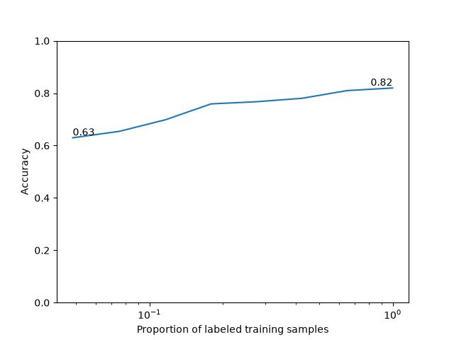

Note
Go to the end to download the full example code.
Self-Supervised Learning with I-JEPA on MedMNIST3D¶
This example demonstrates how to pretrain a 3D vision transformer with I-JEPA [1] on a MedMNIST3D dataset [2] using the nidl library. It will also show you how to evaluate the learned representations with a simple linear probe.
I-JEPA: the key idea behind I-JEPA is to learn representations by predicting masked-out image blocks from their surrounding context in the latent space . This is the main difference with Masked Autoencoders (MAE) which predicts the masked-out blocks in the pixel space.
3D adaptation: I-JEPA is designed to be flexible. Even if the original implementation only used 2d images, its extension to 3d volumes is straightforward. There are two key differences with the 2d case: the tokenization is performed with 3D patches, and the positional embeddings are 3D as well. As for the masking strategy, it follows the same random block subsampling strategy as in 2d.
In this tutorial, we will follow these steps:
Load a MedMNIST3D dataset.
Build a 3D vision transformer encoder.
Train an I-JEPA model, or optionally load pretrained weights from the Hugging Face Hub.
Evaluate the pretrained encoder on the downstream classification task with a logistic regression probe.
In this example we use OrganMNIST3D, one of the 3D datasets distributed by
MedMNIST. MedMNIST3D datasets are lightweight 3D medical image classification
benchmarks standardized to a common spatial size, which makes them convenient
for prototyping self-supervised pipelines.
Setup¶
This example requires medmnist in addition to nidl. If you want to load
pretrained weights from the Hugging Face Hub, you also need
huggingface_hub installed in your environment.
from __future__ import annotations
import os
from typing import Callable, Optional
import matplotlib.pyplot as plt
import medmnist
import numpy as np
import torch
from lightning_fabric import seed_everything
from medmnist import INFO
from sklearn.linear_model import LogisticRegression
from sklearn.metrics import accuracy_score
from torch.utils.data import DataLoader
from torchvision.transforms import Compose
from nidl.backbones.volume import VisionTransformer3D
from nidl.estimators.ssl import IJEPA
from nidl.transforms.volume.augmentation import RandomResizedCrop
from nidl.transforms.volume.preprocessing import ZNormalization
from nidl.utils.weights import Weights
We define some global parameters that will be used throughout the example.
Training a 3D I-JEPA model can take substantial time depending on your
hardware. By default, this example trains a lightweight configuration that is
suitable for a tutorial. If you later publish pretrained weights to the
Hugging Face Hub, set load_pretrained = True and fill the corresponding
repository information below.
Data-related parameters
# Directory where to download MedMNIST data
data_dir = "/tmp/medmnist"
# Directory where to cache optional pretrained weights
model_dir = "/tmp/nidl_example_ijepa_medmnist"
# MedMNIST3D dataset to use
dataset_name = "organmnist3d"
# Spatial size used by MedMNIST+ for 3D datasets
img_size = 64
# Whether to load a pretrained checkpoint from HF or train locally
load_pretrained = True
# Fill these two values once a checkpoint is published on HF
hf_repo_id = "neurospin/nidl_example_ijepa_medmnist"
hf_checkpoint = "nidl_example_ijepa_medmnist.pt"
Reproducibility and training configuration
# What accelerator to use: GPU if available, else CPU
accelerator = "gpu" if torch.cuda.is_available() else "cpu"
# Parameters for the data loaders. Reduce them if you run out of memory.
batch_size = 16
num_workers = 4
# Training configuration
max_epochs = 20
learning_rate = 3e-4
weight_decay = 5e-4
random_seed = 42
seed_everything(random_seed)
rd_generator = np.random.default_rng(seed=random_seed)
Data preparation¶
We first define a small MedMNIST3D dataset wrapper and the transforms used for self-supervised pretraining and downstream evaluation.
class MedMNIST3DDataset:
"""Simple wrapper around a MedMNIST3D split."""
def __init__(
self,
dataset_name: str,
root: str,
split: str,
transform: Optional[Callable] = None,
size: int = 64,
download: bool = True,
):
dataset_name = dataset_name.lower()
if dataset_name not in INFO:
raise ValueError(
f"Unknown MedMNIST dataset '{dataset_name}'. "
f"Available datasets include: {sorted(INFO.keys())}"
)
if "3d" not in dataset_name:
raise ValueError(
f"This example is written for MedMNIST3D datasets, got "
f"'{dataset_name}'."
)
info = INFO[dataset_name]
dataset_cls = getattr(medmnist, info["python_class"])
os.makedirs(root, exist_ok=True)
self.dataset = dataset_cls(
split=split,
root=root,
transform=transform,
download=download,
size=size,
as_rgb=False,
)
def __len__(self):
return len(self.dataset)
def __getitem__(self, index):
return self.dataset[index]
train_transform = Compose(
[
RandomResizedCrop(img_size, scale=(0.5, 1.0)),
ZNormalization(),
lambda x: torch.from_numpy(x).float(),
]
)
eval_transform = Compose(
[
ZNormalization(),
lambda x: torch.from_numpy(x).float(),
]
)
We create one dataset for self-supervised training, and labeled datasets for linear probing.
ssl_dataset = MedMNIST3DDataset(
dataset_name=dataset_name,
root=data_dir,
split="train",
transform=train_transform,
size=img_size,
)
train_xy_dataset = MedMNIST3DDataset(
dataset_name=dataset_name,
root=data_dir,
split="train",
transform=eval_transform,
size=img_size,
)
test_xy_dataset = MedMNIST3DDataset(
dataset_name=dataset_name,
root=data_dir,
split="test",
transform=eval_transform,
size=img_size,
)
0%| | 0.00/361M [00:00<?, ?B/s]
0%| | 32.8k/361M [00:00<43:53, 137kB/s]
0%| | 65.5k/361M [00:00<31:18, 192kB/s]
0%| | 98.3k/361M [00:00<27:16, 221kB/s]
0%| | 164k/361M [00:00<18:09, 331kB/s]
0%| | 229k/361M [00:00<15:06, 399kB/s]
0%| | 295k/361M [00:00<13:35, 443kB/s]
0%| | 360k/361M [00:00<12:45, 472kB/s]
0%| | 459k/361M [00:01<10:28, 575kB/s]
0%| | 524k/361M [00:01<10:41, 563kB/s]
0%| | 623k/361M [00:01<09:31, 631kB/s]
0%| | 688k/361M [00:01<09:58, 602kB/s]
0%| | 786k/361M [00:01<09:05, 661kB/s]
0%| | 885k/361M [00:01<08:33, 702kB/s]
0%| | 1.02M/361M [00:01<07:23, 813kB/s]
0%| | 1.15M/361M [00:01<06:47, 885kB/s]
0%| | 1.31M/361M [00:02<05:54, 1.02MB/s]
0%| | 1.44M/361M [00:02<05:49, 1.03MB/s]
0%| | 1.57M/361M [00:02<05:45, 1.04MB/s]
0%| | 1.70M/361M [00:02<05:42, 1.05MB/s]
1%| | 1.84M/361M [00:02<05:41, 1.05MB/s]
1%| | 1.97M/361M [00:02<05:40, 1.06MB/s]
1%| | 2.10M/361M [00:02<05:39, 1.06MB/s]
1%| | 2.23M/361M [00:02<05:38, 1.06MB/s]
1%| | 2.36M/361M [00:03<05:37, 1.06MB/s]
1%| | 2.49M/361M [00:03<05:36, 1.07MB/s]
1%| | 2.62M/361M [00:03<05:36, 1.07MB/s]
1%| | 2.75M/361M [00:03<05:37, 1.06MB/s]
1%| | 2.92M/361M [00:03<10:00, 597kB/s]
1%| | 3.01M/361M [00:04<09:24, 635kB/s]
1%| | 3.11M/361M [00:04<08:55, 669kB/s]
1%| | 3.24M/361M [00:04<07:51, 759kB/s]
1%| | 3.34M/361M [00:04<07:47, 767kB/s]
1%| | 3.44M/361M [00:04<07:41, 776kB/s]
1%| | 3.57M/361M [00:04<06:59, 853kB/s]
1%| | 3.67M/361M [00:04<07:04, 842kB/s]
1%| | 3.77M/361M [00:04<07:10, 831kB/s]
1%| | 3.87M/361M [00:05<07:16, 820kB/s]
1%| | 3.96M/361M [00:05<07:19, 814kB/s]
1%| | 4.06M/361M [00:05<07:22, 807kB/s]
1%| | 4.33M/361M [00:05<04:57, 1.20MB/s]
1%| | 4.46M/361M [00:05<05:07, 1.16MB/s]
1%|▏ | 4.59M/361M [00:05<05:15, 1.13MB/s]
1%|▏ | 4.72M/361M [00:05<05:22, 1.11MB/s]
1%|▏ | 4.85M/361M [00:05<05:25, 1.09MB/s]
1%|▏ | 4.98M/361M [00:06<05:27, 1.09MB/s]
1%|▏ | 5.11M/361M [00:06<05:29, 1.08MB/s]
1%|▏ | 5.24M/361M [00:06<05:32, 1.07MB/s]
1%|▏ | 5.37M/361M [00:06<05:32, 1.07MB/s]
2%|▏ | 5.51M/361M [00:06<07:11, 824kB/s]
2%|▏ | 5.60M/361M [00:06<07:15, 817kB/s]
2%|▏ | 5.70M/361M [00:06<07:17, 814kB/s]
2%|▏ | 5.80M/361M [00:07<07:19, 809kB/s]
2%|▏ | 5.90M/361M [00:07<07:20, 808kB/s]
2%|▏ | 6.03M/361M [00:07<06:43, 880kB/s]
2%|▏ | 6.13M/361M [00:07<06:53, 860kB/s]
2%|▏ | 6.29M/361M [00:07<05:55, 999kB/s]
2%|▏ | 6.46M/361M [00:07<05:24, 1.10MB/s]
2%|▏ | 6.59M/361M [00:07<05:26, 1.09MB/s]
2%|▏ | 6.72M/361M [00:07<05:28, 1.08MB/s]
2%|▏ | 6.85M/361M [00:07<05:29, 1.07MB/s]
2%|▏ | 6.98M/361M [00:08<05:30, 1.07MB/s]
2%|▏ | 7.11M/361M [00:08<05:30, 1.07MB/s]
2%|▏ | 7.24M/361M [00:08<05:31, 1.07MB/s]
2%|▏ | 7.37M/361M [00:08<05:31, 1.07MB/s]
2%|▏ | 7.50M/361M [00:08<05:30, 1.07MB/s]
2%|▏ | 7.63M/361M [00:08<05:32, 1.06MB/s]
2%|▏ | 7.77M/361M [00:08<05:33, 1.06MB/s]
2%|▏ | 7.90M/361M [00:08<05:33, 1.06MB/s]
2%|▏ | 8.03M/361M [00:09<05:32, 1.06MB/s]
2%|▏ | 8.16M/361M [00:09<05:31, 1.06MB/s]
2%|▏ | 8.29M/361M [00:09<05:31, 1.07MB/s]
2%|▏ | 8.42M/361M [00:09<05:31, 1.07MB/s]
2%|▏ | 8.55M/361M [00:09<05:30, 1.07MB/s]
2%|▏ | 8.68M/361M [00:09<05:30, 1.07MB/s]
2%|▏ | 8.81M/361M [00:09<05:29, 1.07MB/s]
2%|▏ | 8.95M/361M [00:09<05:31, 1.06MB/s]
3%|▎ | 9.08M/361M [00:10<05:35, 1.05MB/s]
3%|▎ | 9.21M/361M [00:10<05:33, 1.06MB/s]
3%|▎ | 9.34M/361M [00:10<05:32, 1.06MB/s]
3%|▎ | 9.47M/361M [00:10<07:08, 821kB/s]
3%|▎ | 9.57M/361M [00:10<07:12, 814kB/s]
3%|▎ | 9.70M/361M [00:10<06:40, 879kB/s]
3%|▎ | 9.80M/361M [00:10<06:51, 855kB/s]
3%|▎ | 9.90M/361M [00:11<06:59, 838kB/s]
3%|▎ | 10.1M/361M [00:11<05:59, 978kB/s]
3%|▎ | 10.2M/361M [00:11<05:49, 1.00MB/s]
3%|▎ | 10.3M/361M [00:11<05:43, 1.02MB/s]
3%|▎ | 10.5M/361M [00:11<05:38, 1.04MB/s]
3%|▎ | 10.6M/361M [00:11<05:35, 1.05MB/s]
3%|▎ | 10.7M/361M [00:11<05:33, 1.05MB/s]
3%|▎ | 10.8M/361M [00:12<07:11, 812kB/s]
3%|▎ | 10.9M/361M [00:12<12:37, 462kB/s]
3%|▎ | 11.0M/361M [00:12<11:14, 519kB/s]
3%|▎ | 11.2M/361M [00:12<09:22, 623kB/s]
3%|▎ | 11.3M/361M [00:12<08:49, 661kB/s]
3%|▎ | 11.4M/361M [00:13<07:43, 756kB/s]
3%|▎ | 11.5M/361M [00:13<13:26, 434kB/s]
3%|▎ | 11.6M/361M [00:13<11:44, 496kB/s]
3%|▎ | 11.7M/361M [00:13<09:34, 608kB/s]
3%|▎ | 11.8M/361M [00:13<08:57, 650kB/s]
3%|▎ | 11.9M/361M [00:14<08:28, 687kB/s]
3%|▎ | 12.1M/361M [00:14<07:27, 782kB/s]
3%|▎ | 12.2M/361M [00:14<07:23, 787kB/s]
3%|▎ | 12.3M/361M [00:14<06:42, 867kB/s]
3%|▎ | 12.5M/361M [00:14<05:48, 1.00MB/s]
3%|▎ | 12.6M/361M [00:14<05:42, 1.02MB/s]
4%|▎ | 12.7M/361M [00:14<05:37, 1.03MB/s]
4%|▎ | 12.8M/361M [00:15<10:33, 550kB/s]
4%|▎ | 12.9M/361M [00:15<09:45, 596kB/s]
4%|▎ | 13.0M/361M [00:15<09:05, 639kB/s]
4%|▎ | 13.1M/361M [00:15<08:35, 675kB/s]
4%|▎ | 13.2M/361M [00:15<08:13, 705kB/s]
4%|▎ | 13.4M/361M [00:15<07:15, 799kB/s]
4%|▎ | 13.5M/361M [00:16<06:39, 870kB/s]
4%|▍ | 13.6M/361M [00:16<06:17, 922kB/s]
4%|▍ | 13.7M/361M [00:16<06:31, 887kB/s]
4%|▍ | 13.8M/361M [00:16<06:45, 857kB/s]
4%|▍ | 13.9M/361M [00:16<06:53, 841kB/s]
4%|▍ | 14.0M/361M [00:16<06:59, 827kB/s]
4%|▍ | 14.1M/361M [00:16<07:04, 819kB/s]
4%|▍ | 14.3M/361M [00:16<06:28, 894kB/s]
4%|▍ | 14.4M/361M [00:16<06:40, 867kB/s]
4%|▍ | 14.5M/361M [00:17<05:45, 1.00MB/s]
4%|▍ | 14.7M/361M [00:17<05:14, 1.10MB/s]
4%|▍ | 14.9M/361M [00:17<04:37, 1.25MB/s]
4%|▍ | 15.0M/361M [00:17<04:50, 1.19MB/s]
4%|▍ | 15.2M/361M [00:17<04:23, 1.31MB/s]
4%|▍ | 15.4M/361M [00:17<04:23, 1.31MB/s]
4%|▍ | 15.5M/361M [00:17<05:40, 1.01MB/s]
4%|▍ | 15.7M/361M [00:18<05:36, 1.03MB/s]
4%|▍ | 15.8M/361M [00:18<05:34, 1.03MB/s]
4%|▍ | 15.9M/361M [00:18<05:33, 1.04MB/s]
4%|▍ | 16.1M/361M [00:18<05:32, 1.04MB/s]
4%|▍ | 16.2M/361M [00:18<07:03, 815kB/s]
5%|▍ | 16.3M/361M [00:18<06:36, 871kB/s]
5%|▍ | 16.5M/361M [00:18<05:29, 1.05MB/s]
5%|▍ | 16.6M/361M [00:19<05:28, 1.05MB/s]
5%|▍ | 16.8M/361M [00:19<05:27, 1.05MB/s]
5%|▍ | 16.9M/361M [00:19<05:26, 1.06MB/s]
5%|▍ | 17.0M/361M [00:19<06:58, 822kB/s]
5%|▍ | 17.1M/361M [00:19<07:02, 815kB/s]
5%|▍ | 17.3M/361M [00:19<06:32, 877kB/s]
5%|▍ | 17.4M/361M [00:19<06:43, 853kB/s]
5%|▍ | 17.5M/361M [00:20<06:18, 909kB/s]
5%|▍ | 17.6M/361M [00:20<06:31, 878kB/s]
5%|▍ | 17.7M/361M [00:20<06:41, 855kB/s]
5%|▍ | 17.8M/361M [00:20<06:14, 918kB/s]
5%|▍ | 17.9M/361M [00:20<06:30, 880kB/s]
5%|▌ | 18.1M/361M [00:20<05:39, 1.01MB/s]
5%|▌ | 18.2M/361M [00:20<05:33, 1.03MB/s]
5%|▌ | 18.4M/361M [00:21<07:08, 801kB/s]
5%|▌ | 18.4M/361M [00:21<07:09, 799kB/s]
5%|▌ | 18.6M/361M [00:21<06:06, 937kB/s]
5%|▌ | 18.7M/361M [00:21<05:52, 972kB/s]
5%|▌ | 18.9M/361M [00:21<05:43, 998kB/s]
5%|▌ | 19.0M/361M [00:21<07:13, 790kB/s]
5%|▌ | 19.1M/361M [00:21<07:15, 787kB/s]
5%|▌ | 19.2M/361M [00:22<07:13, 789kB/s]
5%|▌ | 19.3M/361M [00:22<07:12, 791kB/s]
5%|▌ | 19.4M/361M [00:22<09:09, 623kB/s]
5%|▌ | 19.6M/361M [00:22<07:13, 788kB/s]
5%|▌ | 19.7M/361M [00:22<07:12, 790kB/s]
5%|▌ | 19.8M/361M [00:22<06:36, 862kB/s]
6%|▌ | 19.9M/361M [00:22<06:45, 842kB/s]
6%|▌ | 20.1M/361M [00:23<05:49, 977kB/s]
6%|▌ | 20.2M/361M [00:23<05:41, 999kB/s]
6%|▌ | 20.3M/361M [00:23<05:35, 1.02MB/s]
6%|▌ | 20.4M/361M [00:23<05:31, 1.03MB/s]
6%|▌ | 20.6M/361M [00:23<05:28, 1.04MB/s]
6%|▌ | 20.7M/361M [00:23<05:27, 1.04MB/s]
6%|▌ | 20.8M/361M [00:23<07:01, 809kB/s]
6%|▌ | 20.9M/361M [00:24<07:02, 807kB/s]
6%|▌ | 21.0M/361M [00:24<07:04, 803kB/s]
6%|▌ | 21.1M/361M [00:24<07:05, 800kB/s]
6%|▌ | 21.2M/361M [00:24<07:05, 799kB/s]
6%|▌ | 21.4M/361M [00:24<05:58, 949kB/s]
6%|▌ | 21.5M/361M [00:24<05:45, 983kB/s]
6%|▌ | 21.7M/361M [00:24<05:14, 1.08MB/s]
6%|▌ | 21.8M/361M [00:24<05:15, 1.08MB/s]
6%|▌ | 22.0M/361M [00:25<06:50, 827kB/s]
6%|▌ | 22.2M/361M [00:25<05:34, 1.01MB/s]
6%|▌ | 22.3M/361M [00:25<05:09, 1.10MB/s]
6%|▌ | 22.4M/361M [00:25<05:11, 1.09MB/s]
6%|▌ | 22.6M/361M [00:25<05:13, 1.08MB/s]
6%|▋ | 22.7M/361M [00:25<04:54, 1.15MB/s]
6%|▋ | 22.9M/361M [00:25<04:41, 1.20MB/s]
6%|▋ | 23.0M/361M [00:26<04:50, 1.16MB/s]
6%|▋ | 23.2M/361M [00:26<04:58, 1.14MB/s]
6%|▋ | 23.3M/361M [00:26<05:03, 1.12MB/s]
6%|▋ | 23.4M/361M [00:26<05:06, 1.10MB/s]
7%|▋ | 23.6M/361M [00:26<05:09, 1.09MB/s]
7%|▋ | 23.7M/361M [00:26<05:11, 1.08MB/s]
7%|▋ | 23.8M/361M [00:26<06:47, 829kB/s]
7%|▋ | 23.9M/361M [00:27<06:52, 819kB/s]
7%|▋ | 24.0M/361M [00:27<06:53, 817kB/s]
7%|▋ | 24.1M/361M [00:27<06:55, 812kB/s]
7%|▋ | 24.4M/361M [00:27<04:45, 1.18MB/s]
7%|▋ | 24.5M/361M [00:27<04:35, 1.22MB/s]
7%|▋ | 24.7M/361M [00:27<04:45, 1.18MB/s]
7%|▋ | 24.8M/361M [00:27<04:53, 1.15MB/s]
7%|▋ | 24.9M/361M [00:27<04:59, 1.12MB/s]
7%|▋ | 25.1M/361M [00:27<05:04, 1.10MB/s]
7%|▋ | 25.2M/361M [00:28<05:08, 1.09MB/s]
7%|▋ | 25.3M/361M [00:28<06:41, 836kB/s]
7%|▋ | 25.4M/361M [00:28<06:46, 827kB/s]
7%|▋ | 25.6M/361M [00:28<06:16, 892kB/s]
7%|▋ | 25.7M/361M [00:28<05:31, 1.01MB/s]
7%|▋ | 25.9M/361M [00:28<05:26, 1.03MB/s]
7%|▋ | 26.0M/361M [00:28<05:23, 1.04MB/s]
7%|▋ | 26.1M/361M [00:29<05:20, 1.05MB/s]
7%|▋ | 26.3M/361M [00:29<04:57, 1.13MB/s]
7%|▋ | 26.4M/361M [00:29<05:01, 1.11MB/s]
7%|▋ | 26.5M/361M [00:29<05:04, 1.10MB/s]
7%|▋ | 26.7M/361M [00:29<05:07, 1.09MB/s]
7%|▋ | 26.8M/361M [00:29<06:41, 833kB/s]
7%|▋ | 26.9M/361M [00:29<06:15, 891kB/s]
7%|▋ | 27.0M/361M [00:30<06:26, 866kB/s]
8%|▊ | 27.1M/361M [00:30<06:34, 847kB/s]
8%|▊ | 27.3M/361M [00:30<06:08, 907kB/s]
8%|▊ | 27.4M/361M [00:30<06:21, 875kB/s]
8%|▊ | 27.5M/361M [00:30<05:31, 1.01MB/s]
8%|▊ | 27.7M/361M [00:30<05:25, 1.03MB/s]
8%|▊ | 27.8M/361M [00:30<06:55, 802kB/s]
8%|▊ | 27.9M/361M [00:31<06:24, 867kB/s]
8%|▊ | 28.0M/361M [00:31<06:33, 848kB/s]
8%|▊ | 28.1M/361M [00:31<06:07, 906kB/s]
8%|▊ | 28.2M/361M [00:31<06:20, 876kB/s]
8%|▊ | 28.3M/361M [00:31<06:30, 852kB/s]
8%|▊ | 28.5M/361M [00:31<06:05, 910kB/s]
8%|▊ | 28.6M/361M [00:31<06:19, 876kB/s]
8%|▊ | 28.7M/361M [00:31<06:29, 855kB/s]
8%|▊ | 28.8M/361M [00:32<06:35, 842kB/s]
8%|▊ | 28.9M/361M [00:32<08:40, 638kB/s]
8%|▊ | 29.0M/361M [00:32<08:10, 677kB/s]
8%|▊ | 29.1M/361M [00:32<07:49, 708kB/s]
8%|▊ | 29.2M/361M [00:32<07:33, 733kB/s]
8%|▊ | 29.3M/361M [00:32<07:22, 751kB/s]
8%|▊ | 29.4M/361M [00:32<07:14, 764kB/s]
8%|▊ | 29.7M/361M [00:33<03:59, 1.39MB/s]
8%|▊ | 29.9M/361M [00:33<04:01, 1.37MB/s]
8%|▊ | 30.0M/361M [00:33<04:03, 1.36MB/s]
8%|▊ | 30.2M/361M [00:33<04:05, 1.35MB/s]
8%|▊ | 30.4M/361M [00:33<04:06, 1.34MB/s]
8%|▊ | 30.5M/361M [00:33<04:06, 1.34MB/s]
8%|▊ | 30.7M/361M [00:33<04:07, 1.34MB/s]
9%|▊ | 30.9M/361M [00:34<05:20, 1.03MB/s]
9%|▊ | 31.0M/361M [00:34<05:17, 1.04MB/s]
9%|▊ | 31.1M/361M [00:34<06:37, 832kB/s]
9%|▊ | 31.3M/361M [00:34<06:13, 884kB/s]
9%|▊ | 31.4M/361M [00:34<06:22, 864kB/s]
9%|▊ | 31.5M/361M [00:34<05:58, 919kB/s]
9%|▊ | 31.6M/361M [00:34<05:43, 960kB/s]
9%|▉ | 31.8M/361M [00:35<05:32, 992kB/s]
9%|▉ | 31.9M/361M [00:35<05:24, 1.02MB/s]
9%|▉ | 32.0M/361M [00:35<06:53, 797kB/s]
9%|▉ | 32.1M/361M [00:35<06:53, 797kB/s]
9%|▉ | 32.2M/361M [00:35<06:22, 861kB/s]
9%|▉ | 32.4M/361M [00:35<06:00, 912kB/s]
9%|▉ | 32.5M/361M [00:35<05:45, 951kB/s]
9%|▉ | 32.6M/361M [00:35<05:35, 981kB/s]
9%|▉ | 32.8M/361M [00:36<05:27, 1.00MB/s]
9%|▉ | 32.9M/361M [00:36<05:22, 1.02MB/s]
9%|▉ | 33.0M/361M [00:36<05:19, 1.03MB/s]
9%|▉ | 33.2M/361M [00:36<05:16, 1.04MB/s]
9%|▉ | 33.3M/361M [00:36<05:14, 1.04MB/s]
9%|▉ | 33.4M/361M [00:36<05:12, 1.05MB/s]
9%|▉ | 33.6M/361M [00:37<09:54, 552kB/s]
9%|▉ | 33.7M/361M [00:37<08:30, 643kB/s]
9%|▉ | 33.8M/361M [00:37<07:29, 728kB/s]
9%|▉ | 33.9M/361M [00:37<07:21, 742kB/s]
9%|▉ | 34.0M/361M [00:37<07:12, 756kB/s]
9%|▉ | 34.1M/361M [00:37<06:32, 834kB/s]
9%|▉ | 34.3M/361M [00:37<06:05, 896kB/s]
10%|▉ | 34.4M/361M [00:38<06:18, 864kB/s]
10%|▉ | 34.5M/361M [00:38<06:27, 844kB/s]
10%|▉ | 34.7M/361M [00:38<05:08, 1.06MB/s]
10%|▉ | 34.8M/361M [00:38<06:36, 823kB/s]
10%|▉ | 35.0M/361M [00:38<05:03, 1.08MB/s]
10%|▉ | 35.2M/361M [00:38<05:04, 1.07MB/s]
10%|▉ | 35.3M/361M [00:39<06:28, 840kB/s]
10%|▉ | 35.4M/361M [00:39<06:06, 889kB/s]
10%|▉ | 35.6M/361M [00:39<05:51, 926kB/s]
10%|▉ | 35.7M/361M [00:39<05:39, 960kB/s]
10%|▉ | 35.8M/361M [00:39<05:29, 989kB/s]
10%|▉ | 35.9M/361M [00:39<06:51, 791kB/s]
10%|▉ | 36.0M/361M [00:39<06:50, 793kB/s]
10%|▉ | 36.1M/361M [00:40<06:48, 797kB/s]
10%|█ | 36.2M/361M [00:40<06:48, 796kB/s]
10%|█ | 36.3M/361M [00:40<06:48, 795kB/s]
10%|█ | 36.5M/361M [00:40<06:13, 870kB/s]
10%|█ | 36.6M/361M [00:40<06:21, 852kB/s]
10%|█ | 36.7M/361M [00:40<06:28, 835kB/s]
10%|█ | 36.8M/361M [00:40<06:34, 823kB/s]
10%|█ | 36.9M/361M [00:41<12:37, 428kB/s]
10%|█ | 37.0M/361M [00:41<09:09, 590kB/s]
10%|█ | 37.1M/361M [00:41<08:32, 633kB/s]
10%|█ | 37.2M/361M [00:41<08:03, 670kB/s]
10%|█ | 37.4M/361M [00:41<07:02, 768kB/s]
10%|█ | 37.5M/361M [00:41<06:57, 776kB/s]
10%|█ | 37.6M/361M [00:42<06:54, 781kB/s]
10%|█ | 37.7M/361M [00:42<06:16, 859kB/s]
10%|█ | 37.9M/361M [00:42<04:43, 1.14MB/s]
11%|█ | 38.0M/361M [00:42<04:48, 1.12MB/s]
11%|█ | 38.2M/361M [00:42<04:34, 1.18MB/s]
11%|█ | 38.4M/361M [00:42<04:07, 1.31MB/s]
11%|█ | 38.6M/361M [00:42<04:06, 1.31MB/s]
11%|█ | 38.7M/361M [00:42<04:05, 1.31MB/s]
11%|█ | 38.9M/361M [00:43<08:57, 600kB/s]
11%|█ | 39.1M/361M [00:43<07:28, 719kB/s]
11%|█ | 39.2M/361M [00:43<06:51, 783kB/s]
11%|█ | 39.3M/361M [00:43<06:22, 841kB/s]
11%|█ | 39.5M/361M [00:44<05:37, 955kB/s]
11%|█ | 39.6M/361M [00:44<06:50, 784kB/s]
11%|█ | 39.8M/361M [00:44<05:55, 904kB/s]
11%|█ | 39.9M/361M [00:44<05:40, 943kB/s]
11%|█ | 40.0M/361M [00:44<05:30, 973kB/s]
11%|█ | 40.2M/361M [00:44<05:21, 1.00MB/s]
11%|█ | 40.3M/361M [00:44<05:15, 1.02MB/s]
11%|█ | 40.4M/361M [00:45<11:08, 480kB/s]
11%|█ | 40.5M/361M [00:45<10:04, 531kB/s]
11%|█▏ | 40.7M/361M [00:46<11:32, 463kB/s]
11%|█▏ | 40.8M/361M [00:46<10:27, 511kB/s]
11%|█▏ | 40.9M/361M [00:46<09:33, 559kB/s]
11%|█▏ | 41.0M/361M [00:46<08:49, 605kB/s]
11%|█▏ | 41.1M/361M [00:46<08:13, 649kB/s]
11%|█▏ | 41.3M/361M [00:46<06:06, 874kB/s]
11%|█▏ | 41.5M/361M [00:46<05:47, 922kB/s]
12%|█▏ | 41.6M/361M [00:47<05:33, 960kB/s]
12%|█▏ | 41.7M/361M [00:47<05:23, 989kB/s]
12%|█▏ | 41.8M/361M [00:47<05:16, 1.01MB/s]
12%|█▏ | 42.0M/361M [00:47<05:11, 1.03MB/s]
12%|█▏ | 42.1M/361M [00:47<05:08, 1.04MB/s]
12%|█▏ | 42.2M/361M [00:47<06:36, 806kB/s]
12%|█▏ | 42.3M/361M [00:47<06:36, 804kB/s]
12%|█▏ | 42.4M/361M [00:48<06:36, 804kB/s]
12%|█▏ | 42.5M/361M [00:48<06:37, 802kB/s]
12%|█▏ | 42.7M/361M [00:48<05:34, 952kB/s]
12%|█▏ | 42.8M/361M [00:48<05:23, 986kB/s]
12%|█▏ | 43.0M/361M [00:48<05:15, 1.01MB/s]
12%|█▏ | 43.1M/361M [00:48<05:10, 1.03MB/s]
12%|█▏ | 43.2M/361M [00:48<05:06, 1.04MB/s]
12%|█▏ | 43.4M/361M [00:48<05:03, 1.05MB/s]
12%|█▏ | 43.5M/361M [00:48<05:00, 1.06MB/s]
12%|█▏ | 43.6M/361M [00:49<05:01, 1.06MB/s]
12%|█▏ | 43.7M/361M [00:49<05:00, 1.06MB/s]
12%|█▏ | 43.9M/361M [00:49<04:58, 1.06MB/s]
12%|█▏ | 44.0M/361M [00:49<04:57, 1.07MB/s]
12%|█▏ | 44.1M/361M [00:49<06:23, 828kB/s]
12%|█▏ | 44.2M/361M [00:49<06:25, 822kB/s]
12%|█▏ | 44.3M/361M [00:49<06:28, 817kB/s]
12%|█▏ | 44.4M/361M [00:50<06:29, 814kB/s]
12%|█▏ | 44.5M/361M [00:50<06:29, 813kB/s]
12%|█▏ | 44.6M/361M [00:50<06:30, 811kB/s]
12%|█▏ | 44.8M/361M [00:50<05:56, 889kB/s]
12%|█▏ | 44.9M/361M [00:50<05:35, 943kB/s]
12%|█▏ | 45.0M/361M [00:50<05:52, 899kB/s]
12%|█▏ | 45.1M/361M [00:50<06:03, 871kB/s]
13%|█▎ | 45.2M/361M [00:50<06:11, 851kB/s]
13%|█▎ | 45.3M/361M [00:51<05:45, 916kB/s]
13%|█▎ | 45.4M/361M [00:51<05:57, 885kB/s]
13%|█▎ | 45.5M/361M [00:51<06:05, 865kB/s]
13%|█▎ | 45.6M/361M [00:51<05:40, 926kB/s]
13%|█▎ | 45.8M/361M [00:51<05:24, 971kB/s]
13%|█▎ | 45.9M/361M [00:51<05:41, 925kB/s]
13%|█▎ | 46.0M/361M [00:51<05:55, 886kB/s]
13%|█▎ | 46.1M/361M [00:51<06:05, 862kB/s]
13%|█▎ | 46.2M/361M [00:52<06:14, 842kB/s]
13%|█▎ | 46.3M/361M [00:52<06:19, 830kB/s]
13%|█▎ | 46.4M/361M [00:52<05:49, 901kB/s]
13%|█▎ | 46.5M/361M [00:52<06:00, 874kB/s]
13%|█▎ | 46.7M/361M [00:52<04:47, 1.09MB/s]
13%|█▎ | 46.8M/361M [00:52<04:48, 1.09MB/s]
13%|█▎ | 47.0M/361M [00:52<04:50, 1.08MB/s]
13%|█▎ | 47.2M/361M [00:52<04:13, 1.24MB/s]
13%|█▎ | 47.3M/361M [00:53<04:24, 1.19MB/s]
13%|█▎ | 47.4M/361M [00:53<04:33, 1.15MB/s]
13%|█▎ | 47.5M/361M [00:53<04:40, 1.12MB/s]
13%|█▎ | 47.7M/361M [00:53<04:44, 1.10MB/s]
13%|█▎ | 47.8M/361M [00:53<06:12, 843kB/s]
13%|█▎ | 47.9M/361M [00:53<06:16, 833kB/s]
13%|█▎ | 48.0M/361M [00:53<06:19, 827kB/s]
13%|█▎ | 48.1M/361M [00:53<05:51, 892kB/s]
13%|█▎ | 48.2M/361M [00:54<06:00, 868kB/s]
13%|█▎ | 48.4M/361M [00:54<05:38, 926kB/s]
13%|█▎ | 48.5M/361M [00:54<05:52, 889kB/s]
13%|█▎ | 48.6M/361M [00:54<06:03, 861kB/s]
13%|█▎ | 48.7M/361M [00:54<06:10, 845kB/s]
13%|█▎ | 48.8M/361M [00:54<05:42, 912kB/s]
14%|█▎ | 48.9M/361M [00:54<05:24, 962kB/s]
14%|█▎ | 49.0M/361M [00:54<05:41, 916kB/s]
14%|█▎ | 49.1M/361M [00:55<05:56, 876kB/s]
14%|█▎ | 49.2M/361M [00:55<06:05, 855kB/s]
14%|█▎ | 49.3M/361M [00:55<06:12, 837kB/s]
14%|█▎ | 49.4M/361M [00:55<06:18, 825kB/s]
14%|█▎ | 49.6M/361M [00:55<05:19, 976kB/s]
14%|█▎ | 49.7M/361M [00:55<05:37, 923kB/s]
14%|█▍ | 49.8M/361M [00:55<05:50, 889kB/s]
14%|█▍ | 49.9M/361M [00:55<06:01, 863kB/s]
14%|█▍ | 50.0M/361M [00:56<06:09, 844kB/s]
14%|█▍ | 50.1M/361M [00:56<05:41, 912kB/s]
14%|█▍ | 50.2M/361M [00:56<05:54, 879kB/s]
14%|█▍ | 50.3M/361M [00:56<06:03, 856kB/s]
14%|█▍ | 50.4M/361M [00:56<06:09, 842kB/s]
14%|█▍ | 50.5M/361M [00:56<06:13, 833kB/s]
14%|█▍ | 50.6M/361M [00:56<05:43, 906kB/s]
14%|█▍ | 50.7M/361M [00:56<05:55, 874kB/s]
14%|█▍ | 50.9M/361M [00:57<05:06, 1.01MB/s]
14%|█▍ | 51.1M/361M [00:57<04:39, 1.11MB/s]
14%|█▍ | 51.2M/361M [00:57<08:23, 617kB/s]
14%|█▍ | 51.4M/361M [00:57<06:54, 748kB/s]
14%|█▍ | 51.5M/361M [00:57<05:56, 868kB/s]
14%|█▍ | 51.7M/361M [00:58<05:17, 975kB/s]
14%|█▍ | 51.8M/361M [00:58<05:10, 999kB/s]
14%|█▍ | 52.0M/361M [00:58<05:04, 1.02MB/s]
14%|█▍ | 52.1M/361M [00:58<06:21, 811kB/s]
14%|█▍ | 52.2M/361M [00:58<06:21, 810kB/s]
14%|█▍ | 52.3M/361M [00:58<06:22, 809kB/s]
14%|█▍ | 52.4M/361M [00:58<06:23, 806kB/s]
15%|█▍ | 52.5M/361M [00:59<05:52, 876kB/s]
15%|█▍ | 52.7M/361M [00:59<05:32, 929kB/s]
15%|█▍ | 52.8M/361M [00:59<05:19, 965kB/s]
15%|█▍ | 52.9M/361M [00:59<05:13, 985kB/s]
15%|█▍ | 53.1M/361M [00:59<05:06, 1.01MB/s]
15%|█▍ | 53.2M/361M [00:59<05:01, 1.02MB/s]
15%|█▍ | 53.3M/361M [00:59<04:58, 1.03MB/s]
15%|█▍ | 53.4M/361M [00:59<04:55, 1.04MB/s]
15%|█▍ | 53.6M/361M [01:00<04:33, 1.13MB/s]
15%|█▍ | 53.7M/361M [01:00<08:53, 576kB/s]
15%|█▍ | 53.8M/361M [01:00<08:19, 616kB/s]
15%|█▍ | 53.9M/361M [01:00<07:51, 652kB/s]
15%|█▍ | 54.1M/361M [01:00<06:21, 805kB/s]
15%|█▍ | 54.2M/361M [01:01<06:23, 801kB/s]
15%|█▌ | 54.3M/361M [01:01<05:54, 867kB/s]
15%|█▌ | 54.5M/361M [01:01<05:34, 917kB/s]
15%|█▌ | 54.6M/361M [01:01<05:21, 955kB/s]
15%|█▌ | 54.7M/361M [01:01<05:11, 983kB/s]
15%|█▌ | 54.9M/361M [01:01<06:32, 781kB/s]
15%|█▌ | 55.0M/361M [01:01<06:01, 848kB/s]
15%|█▌ | 55.2M/361M [01:02<04:55, 1.04MB/s]
15%|█▌ | 55.3M/361M [01:02<04:53, 1.04MB/s]
15%|█▌ | 55.4M/361M [01:02<04:51, 1.05MB/s]
15%|█▌ | 55.6M/361M [01:02<04:51, 1.05MB/s]
15%|█▌ | 55.7M/361M [01:02<04:49, 1.06MB/s]
15%|█▌ | 55.8M/361M [01:02<04:49, 1.06MB/s]
15%|█▌ | 56.0M/361M [01:02<06:12, 820kB/s]
16%|█▌ | 56.1M/361M [01:03<06:15, 813kB/s]
16%|█▌ | 56.3M/361M [01:03<05:01, 1.01MB/s]
16%|█▌ | 56.4M/361M [01:03<04:58, 1.02MB/s]
16%|█▌ | 56.5M/361M [01:03<04:57, 1.03MB/s]
16%|█▌ | 56.7M/361M [01:03<04:53, 1.04MB/s]
16%|█▌ | 56.8M/361M [01:03<04:52, 1.04MB/s]
16%|█▌ | 56.9M/361M [01:03<04:51, 1.05MB/s]
16%|█▌ | 57.0M/361M [01:03<04:50, 1.05MB/s]
16%|█▌ | 57.2M/361M [01:04<04:50, 1.05MB/s]
16%|█▌ | 57.3M/361M [01:04<04:50, 1.05MB/s]
16%|█▌ | 57.4M/361M [01:04<04:49, 1.05MB/s]
16%|█▌ | 57.6M/361M [01:04<04:48, 1.05MB/s]
16%|█▌ | 57.7M/361M [01:04<04:47, 1.06MB/s]
16%|█▌ | 57.8M/361M [01:04<06:11, 817kB/s]
16%|█▌ | 57.9M/361M [01:04<06:13, 812kB/s]
16%|█▌ | 58.1M/361M [01:04<05:46, 877kB/s]
16%|█▌ | 58.2M/361M [01:05<05:27, 927kB/s]
16%|█▌ | 58.3M/361M [01:05<05:42, 886kB/s]
16%|█▌ | 58.6M/361M [01:05<04:07, 1.23MB/s]
16%|█▌ | 58.7M/361M [01:05<04:01, 1.25MB/s]
16%|█▋ | 58.9M/361M [01:05<04:13, 1.19MB/s]
16%|█▋ | 59.0M/361M [01:05<04:22, 1.15MB/s]
16%|█▋ | 59.1M/361M [01:05<04:29, 1.12MB/s]
16%|█▋ | 59.2M/361M [01:05<04:33, 1.10MB/s]
16%|█▋ | 59.4M/361M [01:06<04:36, 1.09MB/s]
16%|█▋ | 59.5M/361M [01:06<04:39, 1.08MB/s]
16%|█▋ | 59.6M/361M [01:06<04:41, 1.07MB/s]
17%|█▋ | 59.8M/361M [01:06<04:42, 1.07MB/s]
17%|█▋ | 59.9M/361M [01:06<04:42, 1.07MB/s]
17%|█▋ | 60.0M/361M [01:06<04:43, 1.06MB/s]
17%|█▋ | 60.2M/361M [01:06<04:43, 1.06MB/s]
17%|█▋ | 60.3M/361M [01:06<04:43, 1.06MB/s]
17%|█▋ | 60.4M/361M [01:07<04:44, 1.06MB/s]
17%|█▋ | 60.6M/361M [01:07<04:43, 1.06MB/s]
17%|█▋ | 60.7M/361M [01:07<04:42, 1.06MB/s]
17%|█▋ | 60.8M/361M [01:07<04:43, 1.06MB/s]
17%|█▋ | 60.9M/361M [01:07<04:42, 1.06MB/s]
17%|█▋ | 61.1M/361M [01:07<04:42, 1.06MB/s]
17%|█▋ | 61.2M/361M [01:07<06:06, 818kB/s]
17%|█▋ | 61.3M/361M [01:08<05:41, 879kB/s]
17%|█▋ | 61.5M/361M [01:08<04:41, 1.07MB/s]
17%|█▋ | 61.7M/361M [01:08<04:41, 1.07MB/s]
17%|█▋ | 61.8M/361M [01:08<04:41, 1.07MB/s]
17%|█▋ | 61.9M/361M [01:08<04:40, 1.07MB/s]
17%|█▋ | 62.1M/361M [01:08<04:40, 1.07MB/s]
17%|█▋ | 62.2M/361M [01:08<04:40, 1.07MB/s]
17%|█▋ | 62.3M/361M [01:08<04:39, 1.07MB/s]
17%|█▋ | 62.5M/361M [01:09<04:40, 1.07MB/s]
17%|█▋ | 62.6M/361M [01:09<06:03, 822kB/s]
17%|█▋ | 62.7M/361M [01:09<05:37, 885kB/s]
17%|█▋ | 62.8M/361M [01:09<05:20, 931kB/s]
17%|█▋ | 63.1M/361M [01:09<03:45, 1.32MB/s]
18%|█▊ | 63.3M/361M [01:09<03:44, 1.33MB/s]
18%|█▊ | 63.5M/361M [01:09<03:43, 1.33MB/s]
18%|█▊ | 63.6M/361M [01:10<03:43, 1.33MB/s]
18%|█▊ | 63.8M/361M [01:10<03:43, 1.33MB/s]
18%|█▊ | 64.0M/361M [01:10<03:43, 1.33MB/s]
18%|█▊ | 64.1M/361M [01:10<03:43, 1.33MB/s]
18%|█▊ | 64.3M/361M [01:10<03:43, 1.33MB/s]
18%|█▊ | 64.5M/361M [01:10<04:49, 1.03MB/s]
18%|█▊ | 64.6M/361M [01:10<04:46, 1.04MB/s]
18%|█▊ | 64.7M/361M [01:11<04:44, 1.04MB/s]
18%|█▊ | 64.8M/361M [01:11<04:43, 1.05MB/s]
18%|█▊ | 65.0M/361M [01:11<04:42, 1.05MB/s]
18%|█▊ | 65.1M/361M [01:11<04:41, 1.05MB/s]
18%|█▊ | 65.2M/361M [01:11<06:00, 822kB/s]
18%|█▊ | 65.4M/361M [01:11<05:36, 880kB/s]
18%|█▊ | 65.6M/361M [01:11<04:20, 1.13MB/s]
18%|█▊ | 65.7M/361M [01:12<04:25, 1.11MB/s]
18%|█▊ | 65.9M/361M [01:12<04:28, 1.10MB/s]
18%|█▊ | 66.0M/361M [01:12<04:31, 1.09MB/s]
18%|█▊ | 66.1M/361M [01:12<04:35, 1.07MB/s]
18%|█▊ | 66.3M/361M [01:12<04:36, 1.07MB/s]
18%|█▊ | 66.4M/361M [01:12<04:36, 1.07MB/s]
18%|█▊ | 66.5M/361M [01:12<05:59, 821kB/s]
18%|█▊ | 66.6M/361M [01:13<06:01, 815kB/s]
18%|█▊ | 66.7M/361M [01:13<06:03, 812kB/s]
18%|█▊ | 66.8M/361M [01:13<05:34, 881kB/s]
19%|█▊ | 66.9M/361M [01:13<05:42, 859kB/s]
19%|█▊ | 67.0M/361M [01:13<05:50, 841kB/s]
19%|█▊ | 67.2M/361M [01:13<05:25, 905kB/s]
19%|█▊ | 67.3M/361M [01:13<05:08, 954kB/s]
19%|█▊ | 67.4M/361M [01:13<05:22, 911kB/s]
19%|█▊ | 67.5M/361M [01:14<05:34, 879kB/s]
19%|█▊ | 67.7M/361M [01:14<04:10, 1.17MB/s]
19%|█▉ | 67.9M/361M [01:14<04:00, 1.22MB/s]
19%|█▉ | 68.0M/361M [01:14<04:09, 1.18MB/s]
19%|█▉ | 68.2M/361M [01:14<05:32, 882kB/s]
19%|█▉ | 68.3M/361M [01:14<04:54, 996kB/s]
19%|█▉ | 68.5M/361M [01:14<04:48, 1.02MB/s]
19%|█▉ | 68.6M/361M [01:14<04:44, 1.03MB/s]
19%|█▉ | 68.7M/361M [01:15<04:41, 1.04MB/s]
19%|█▉ | 68.8M/361M [01:15<04:38, 1.05MB/s]
19%|█▉ | 69.0M/361M [01:15<04:18, 1.13MB/s]
19%|█▉ | 69.1M/361M [01:15<04:22, 1.11MB/s]
19%|█▉ | 69.3M/361M [01:15<04:25, 1.10MB/s]
19%|█▉ | 69.4M/361M [01:15<05:47, 839kB/s]
19%|█▉ | 69.5M/361M [01:15<05:52, 829kB/s]
19%|█▉ | 69.6M/361M [01:16<05:28, 889kB/s]
19%|█▉ | 69.7M/361M [01:16<05:37, 866kB/s]
19%|█▉ | 69.8M/361M [01:16<05:42, 851kB/s]
19%|█▉ | 70.0M/361M [01:16<05:19, 914kB/s]
19%|█▉ | 70.1M/361M [01:16<05:04, 958kB/s]
19%|█▉ | 70.2M/361M [01:16<04:53, 991kB/s]
19%|█▉ | 70.4M/361M [01:16<04:47, 1.01MB/s]
20%|█▉ | 70.5M/361M [01:16<04:23, 1.11MB/s]
20%|█▉ | 70.6M/361M [01:17<04:26, 1.09MB/s]
20%|█▉ | 70.8M/361M [01:17<04:28, 1.08MB/s]
20%|█▉ | 70.9M/361M [01:17<04:29, 1.08MB/s]
20%|█▉ | 71.0M/361M [01:17<04:29, 1.08MB/s]
20%|█▉ | 71.2M/361M [01:17<04:30, 1.07MB/s]
20%|█▉ | 71.3M/361M [01:17<05:51, 825kB/s]
20%|█▉ | 71.4M/361M [01:17<05:53, 820kB/s]
20%|█▉ | 71.6M/361M [01:18<05:03, 956kB/s]
20%|█▉ | 71.8M/361M [01:18<04:16, 1.13MB/s]
20%|█▉ | 71.9M/361M [01:18<04:20, 1.11MB/s]
20%|█▉ | 72.0M/361M [01:18<04:24, 1.10MB/s]
20%|█▉ | 72.2M/361M [01:18<04:26, 1.09MB/s]
20%|█▉ | 72.3M/361M [01:18<04:28, 1.08MB/s]
20%|██ | 72.4M/361M [01:18<04:29, 1.07MB/s]
20%|██ | 72.5M/361M [01:18<04:29, 1.07MB/s]
20%|██ | 72.7M/361M [01:19<04:30, 1.07MB/s]
20%|██ | 72.8M/361M [01:19<04:31, 1.06MB/s]
20%|██ | 72.9M/361M [01:19<04:30, 1.07MB/s]
20%|██ | 73.1M/361M [01:19<04:33, 1.05MB/s]
20%|██ | 73.2M/361M [01:19<04:32, 1.06MB/s]
20%|██ | 73.3M/361M [01:19<05:52, 818kB/s]
20%|██ | 73.4M/361M [01:19<05:54, 812kB/s]
20%|██ | 73.5M/361M [01:20<05:56, 807kB/s]
20%|██ | 73.6M/361M [01:20<05:57, 805kB/s]
20%|██ | 73.7M/361M [01:20<05:58, 803kB/s]
20%|██ | 73.8M/361M [01:20<05:59, 801kB/s]
20%|██ | 73.9M/361M [01:20<06:00, 799kB/s]
20%|██ | 74.0M/361M [01:20<05:59, 799kB/s]
21%|██ | 74.1M/361M [01:20<06:00, 798kB/s]
21%|██ | 74.2M/361M [01:20<06:01, 796kB/s]
21%|██ | 74.4M/361M [01:21<05:28, 875kB/s]
21%|██ | 74.4M/361M [01:21<05:37, 851kB/s]
21%|██ | 74.6M/361M [01:21<04:49, 990kB/s]
21%|██ | 74.8M/361M [01:21<04:05, 1.17MB/s]
21%|██ | 75.0M/361M [01:21<03:41, 1.29MB/s]
21%|██ | 75.1M/361M [01:21<03:54, 1.22MB/s]
21%|██ | 75.3M/361M [01:21<03:34, 1.33MB/s]
21%|██ | 75.5M/361M [01:21<03:34, 1.33MB/s]
21%|██ | 75.7M/361M [01:22<03:35, 1.33MB/s]
21%|██ | 75.8M/361M [01:22<03:34, 1.33MB/s]
21%|██ | 76.0M/361M [01:22<03:35, 1.33MB/s]
21%|██ | 76.2M/361M [01:22<04:39, 1.02MB/s]
21%|██ | 76.3M/361M [01:22<04:36, 1.03MB/s]
21%|██ | 76.4M/361M [01:22<04:34, 1.04MB/s]
21%|██ | 76.6M/361M [01:22<03:59, 1.19MB/s]
21%|██ | 76.7M/361M [01:22<04:06, 1.15MB/s]
21%|██▏ | 76.9M/361M [01:23<07:50, 605kB/s]
21%|██▏ | 77.0M/361M [01:23<07:24, 640kB/s]
21%|██▏ | 77.1M/361M [01:23<07:03, 672kB/s]
21%|██▏ | 77.2M/361M [01:23<06:46, 700kB/s]
21%|██▏ | 77.3M/361M [01:23<06:32, 724kB/s]
21%|██▏ | 77.4M/361M [01:24<06:22, 742kB/s]
21%|██▏ | 77.5M/361M [01:24<05:42, 828kB/s]
21%|██▏ | 77.6M/361M [01:24<05:18, 890kB/s]
22%|██▏ | 77.8M/361M [01:24<04:21, 1.08MB/s]
22%|██▏ | 78.0M/361M [01:24<04:06, 1.15MB/s]
22%|██▏ | 78.1M/361M [01:24<04:12, 1.12MB/s]
22%|██▏ | 78.2M/361M [01:24<05:31, 855kB/s]
22%|██▏ | 78.4M/361M [01:25<04:33, 1.04MB/s]
22%|██▏ | 78.6M/361M [01:25<04:14, 1.11MB/s]
22%|██▏ | 78.8M/361M [01:25<04:01, 1.17MB/s]
22%|██▏ | 78.9M/361M [01:25<03:51, 1.22MB/s]
22%|██▏ | 79.1M/361M [01:25<04:00, 1.18MB/s]
22%|██▏ | 79.2M/361M [01:25<04:06, 1.14MB/s]
22%|██▏ | 79.3M/361M [01:25<04:11, 1.12MB/s]
22%|██▏ | 79.5M/361M [01:25<04:15, 1.10MB/s]
22%|██▏ | 79.6M/361M [01:26<04:17, 1.09MB/s]
22%|██▏ | 79.7M/361M [01:26<04:19, 1.08MB/s]
22%|██▏ | 79.9M/361M [01:26<04:20, 1.08MB/s]
22%|██▏ | 80.0M/361M [01:26<05:39, 830kB/s]
22%|██▏ | 80.1M/361M [01:26<05:42, 822kB/s]
22%|██▏ | 80.2M/361M [01:26<05:44, 817kB/s]
22%|██▏ | 80.3M/361M [01:26<05:47, 810kB/s]
22%|██▏ | 80.4M/361M [01:27<05:47, 808kB/s]
22%|██▏ | 80.5M/361M [01:27<05:49, 804kB/s]
22%|██▏ | 80.6M/361M [01:27<05:21, 873kB/s]
22%|██▏ | 80.7M/361M [01:27<05:30, 849kB/s]
22%|██▏ | 80.8M/361M [01:27<05:36, 834kB/s]
22%|██▏ | 80.9M/361M [01:27<05:41, 823kB/s]
22%|██▏ | 81.0M/361M [01:27<05:15, 889kB/s]
22%|██▏ | 81.1M/361M [01:27<05:24, 863kB/s]
22%|██▏ | 81.3M/361M [01:28<05:03, 922kB/s]
23%|██▎ | 81.4M/361M [01:28<04:28, 1.04MB/s]
23%|██▎ | 81.6M/361M [01:28<08:30, 548kB/s]
23%|██▎ | 81.7M/361M [01:28<07:51, 594kB/s]
23%|██▎ | 81.8M/361M [01:28<06:14, 747kB/s]
23%|██▎ | 82.0M/361M [01:29<05:17, 880kB/s]
23%|██▎ | 82.1M/361M [01:29<05:01, 926kB/s]
23%|██▎ | 82.2M/361M [01:29<04:50, 962kB/s]
23%|██▎ | 82.4M/361M [01:29<04:42, 989kB/s]
23%|██▎ | 82.5M/361M [01:29<04:36, 1.01MB/s]
23%|██▎ | 82.6M/361M [01:29<04:30, 1.03MB/s]
23%|██▎ | 82.8M/361M [01:29<04:28, 1.04MB/s]
23%|██▎ | 82.9M/361M [01:29<04:26, 1.04MB/s]
23%|██▎ | 83.0M/361M [01:30<05:43, 810kB/s]
23%|██▎ | 83.2M/361M [01:30<04:37, 1.00MB/s]
23%|██▎ | 83.4M/361M [01:30<10:07, 458kB/s]
23%|██▎ | 83.5M/361M [01:31<09:10, 505kB/s]
23%|██▎ | 83.6M/361M [01:31<07:44, 598kB/s]
23%|██▎ | 83.7M/361M [01:31<06:43, 689kB/s]
23%|██▎ | 83.9M/361M [01:31<06:00, 771kB/s]
23%|██▎ | 84.0M/361M [01:31<05:56, 778kB/s]
23%|██▎ | 84.1M/361M [01:31<05:26, 849kB/s]
23%|██▎ | 84.3M/361M [01:31<04:25, 1.05MB/s]
23%|██▎ | 84.4M/361M [01:31<04:25, 1.05MB/s]
23%|██▎ | 84.5M/361M [01:32<04:23, 1.05MB/s]
23%|██▎ | 84.7M/361M [01:32<04:22, 1.06MB/s]
23%|██▎ | 84.8M/361M [01:32<04:21, 1.06MB/s]
23%|██▎ | 84.9M/361M [01:32<04:21, 1.06MB/s]
24%|██▎ | 85.1M/361M [01:32<04:19, 1.06MB/s]
24%|██▎ | 85.2M/361M [01:32<04:19, 1.06MB/s]
24%|██▎ | 85.3M/361M [01:32<05:36, 820kB/s]
24%|██▎ | 85.5M/361M [01:33<05:12, 882kB/s]
24%|██▎ | 85.6M/361M [01:33<04:36, 998kB/s]
24%|██▎ | 85.8M/361M [01:33<04:32, 1.01MB/s]
24%|██▍ | 85.9M/361M [01:33<04:27, 1.03MB/s]
24%|██▍ | 86.0M/361M [01:33<04:24, 1.04MB/s]
24%|██▍ | 86.1M/361M [01:33<05:38, 812kB/s]
24%|██▍ | 86.2M/361M [01:33<05:40, 808kB/s]
24%|██▍ | 86.3M/361M [01:34<05:41, 805kB/s]
24%|██▍ | 86.4M/361M [01:34<05:42, 804kB/s]
24%|██▍ | 86.6M/361M [01:34<05:14, 875kB/s]
24%|██▍ | 86.7M/361M [01:34<05:22, 851kB/s]
24%|██▍ | 86.8M/361M [01:34<04:37, 990kB/s]
24%|██▍ | 87.0M/361M [01:34<04:12, 1.09MB/s]
24%|██▍ | 87.1M/361M [01:34<04:13, 1.08MB/s]
24%|██▍ | 87.3M/361M [01:34<04:14, 1.08MB/s]
24%|██▍ | 87.4M/361M [01:35<04:14, 1.08MB/s]
24%|██▍ | 87.5M/361M [01:35<04:15, 1.07MB/s]
24%|██▍ | 87.7M/361M [01:35<04:16, 1.07MB/s]
24%|██▍ | 87.8M/361M [01:35<04:16, 1.07MB/s]
24%|██▍ | 87.9M/361M [01:35<04:16, 1.07MB/s]
24%|██▍ | 88.0M/361M [01:35<04:16, 1.07MB/s]
24%|██▍ | 88.2M/361M [01:35<04:16, 1.07MB/s]
24%|██▍ | 88.3M/361M [01:35<04:16, 1.07MB/s]
24%|██▍ | 88.4M/361M [01:36<04:16, 1.06MB/s]
25%|██▍ | 88.6M/361M [01:36<08:14, 552kB/s]
25%|██▍ | 88.7M/361M [01:36<07:36, 597kB/s]
25%|██▍ | 88.8M/361M [01:36<07:06, 639kB/s]
25%|██▍ | 88.9M/361M [01:36<06:43, 676kB/s]
25%|██▍ | 89.0M/361M [01:37<06:27, 703kB/s]
25%|██▍ | 89.2M/361M [01:37<04:51, 935kB/s]
25%|██▍ | 89.3M/361M [01:37<04:21, 1.04MB/s]
25%|██▍ | 89.5M/361M [01:37<04:19, 1.05MB/s]
25%|██▍ | 89.6M/361M [01:37<04:18, 1.05MB/s]
25%|██▍ | 89.7M/361M [01:37<04:18, 1.05MB/s]
25%|██▍ | 89.8M/361M [01:37<04:18, 1.05MB/s]
25%|██▍ | 90.0M/361M [01:37<04:16, 1.06MB/s]
25%|██▍ | 90.1M/361M [01:38<04:16, 1.06MB/s]
25%|██▍ | 90.3M/361M [01:38<03:58, 1.14MB/s]
25%|██▌ | 90.5M/361M [01:38<03:20, 1.35MB/s]
25%|██▌ | 90.7M/361M [01:38<03:20, 1.35MB/s]
25%|██▌ | 90.8M/361M [01:38<03:21, 1.34MB/s]
25%|██▌ | 91.0M/361M [01:38<03:22, 1.34MB/s]
25%|██▌ | 91.2M/361M [01:38<04:22, 1.03MB/s]
25%|██▌ | 91.3M/361M [01:39<04:20, 1.04MB/s]
25%|██▌ | 91.4M/361M [01:39<04:18, 1.04MB/s]
25%|██▌ | 91.6M/361M [01:39<04:16, 1.05MB/s]
25%|██▌ | 91.7M/361M [01:39<04:14, 1.06MB/s]
25%|██▌ | 91.8M/361M [01:39<04:14, 1.06MB/s]
25%|██▌ | 91.9M/361M [01:39<04:13, 1.06MB/s]
25%|██▌ | 92.1M/361M [01:39<04:13, 1.06MB/s]
26%|██▌ | 92.2M/361M [01:39<04:13, 1.06MB/s]
26%|██▌ | 92.3M/361M [01:39<04:12, 1.07MB/s]
26%|██▌ | 92.5M/361M [01:40<04:12, 1.07MB/s]
26%|██▌ | 92.6M/361M [01:40<04:12, 1.07MB/s]
26%|██▌ | 92.8M/361M [01:40<03:55, 1.14MB/s]
26%|██▌ | 92.9M/361M [01:40<03:59, 1.12MB/s]
26%|██▌ | 93.0M/361M [01:40<04:02, 1.11MB/s]
26%|██▌ | 93.2M/361M [01:40<04:04, 1.10MB/s]
26%|██▌ | 93.4M/361M [01:40<03:35, 1.24MB/s]
26%|██▌ | 93.5M/361M [01:40<03:45, 1.19MB/s]
26%|██▌ | 93.6M/361M [01:41<03:52, 1.15MB/s]
26%|██▌ | 93.7M/361M [01:41<04:08, 1.08MB/s]
26%|██▌ | 93.9M/361M [01:41<04:08, 1.08MB/s]
26%|██▌ | 94.0M/361M [01:41<04:09, 1.07MB/s]
26%|██▌ | 94.1M/361M [01:41<04:10, 1.07MB/s]
26%|██▌ | 94.3M/361M [01:41<04:09, 1.07MB/s]
26%|██▌ | 94.4M/361M [01:41<04:10, 1.07MB/s]
26%|██▌ | 94.5M/361M [01:41<04:09, 1.07MB/s]
26%|██▌ | 94.7M/361M [01:42<04:12, 1.06MB/s]
26%|██▌ | 94.8M/361M [01:42<05:25, 820kB/s]
26%|██▋ | 94.9M/361M [01:42<05:27, 815kB/s]
26%|██▋ | 95.0M/361M [01:42<05:28, 811kB/s]
26%|██▋ | 95.1M/361M [01:42<05:29, 808kB/s]
26%|██▋ | 95.2M/361M [01:42<05:32, 800kB/s]
26%|██▋ | 95.3M/361M [01:42<05:04, 873kB/s]
26%|██▋ | 95.6M/361M [01:43<03:11, 1.39MB/s]
27%|██▋ | 95.8M/361M [01:43<03:14, 1.37MB/s]
27%|██▋ | 96.0M/361M [01:43<03:15, 1.36MB/s]
27%|██▋ | 96.1M/361M [01:43<04:14, 1.04MB/s]
27%|██▋ | 96.3M/361M [01:43<04:12, 1.05MB/s]
27%|██▋ | 96.4M/361M [01:43<04:10, 1.06MB/s]
27%|██▋ | 96.5M/361M [01:43<04:09, 1.06MB/s]
27%|██▋ | 96.7M/361M [01:44<04:09, 1.06MB/s]
27%|██▋ | 96.8M/361M [01:44<04:09, 1.06MB/s]
27%|██▋ | 96.9M/361M [01:44<04:08, 1.06MB/s]
27%|██▋ | 97.1M/361M [01:44<04:08, 1.07MB/s]
27%|██▋ | 97.2M/361M [01:44<04:09, 1.06MB/s]
27%|██▋ | 97.3M/361M [01:44<04:08, 1.06MB/s]
27%|██▋ | 97.5M/361M [01:44<04:07, 1.07MB/s]
27%|██▋ | 97.6M/361M [01:44<04:07, 1.07MB/s]
27%|██▋ | 97.7M/361M [01:45<04:07, 1.07MB/s]
27%|██▋ | 97.8M/361M [01:45<05:20, 822kB/s]
27%|██▋ | 98.0M/361M [01:45<04:58, 882kB/s]
27%|██▋ | 98.1M/361M [01:45<04:43, 929kB/s]
27%|██▋ | 98.2M/361M [01:45<04:32, 967kB/s]
27%|██▋ | 98.4M/361M [01:45<04:25, 993kB/s]
27%|██▋ | 98.5M/361M [01:45<04:19, 1.01MB/s]
27%|██▋ | 98.6M/361M [01:46<05:30, 794kB/s]
27%|██▋ | 98.8M/361M [01:46<05:04, 861kB/s]
27%|██▋ | 98.9M/361M [01:46<05:11, 843kB/s]
27%|██▋ | 99.0M/361M [01:46<05:18, 825kB/s]
27%|██▋ | 99.1M/361M [01:46<04:32, 961kB/s]
27%|██▋ | 99.3M/361M [01:46<04:05, 1.07MB/s]
28%|██▊ | 99.4M/361M [01:46<04:06, 1.06MB/s]
28%|██▊ | 99.5M/361M [01:47<04:08, 1.06MB/s]
28%|██▊ | 99.7M/361M [01:47<05:21, 814kB/s]
28%|██▊ | 99.8M/361M [01:47<04:59, 872kB/s]
28%|██▊ | 99.9M/361M [01:47<04:43, 921kB/s]
28%|██▊ | 100M/361M [01:47<04:33, 956kB/s]
28%|██▊ | 100M/361M [01:47<04:06, 1.06MB/s]
28%|██▊ | 100M/361M [01:47<04:06, 1.06MB/s]
28%|██▊ | 100M/361M [01:48<04:06, 1.06MB/s]
28%|██▊ | 101M/361M [01:48<04:06, 1.06MB/s]
28%|██▊ | 101M/361M [01:48<04:06, 1.06MB/s]
28%|██▊ | 101M/361M [01:48<04:06, 1.06MB/s]
28%|██▊ | 101M/361M [01:48<04:05, 1.06MB/s]
28%|██▊ | 101M/361M [01:48<04:05, 1.06MB/s]
28%|██▊ | 101M/361M [01:48<04:06, 1.06MB/s]
28%|██▊ | 101M/361M [01:48<04:05, 1.06MB/s]
28%|██▊ | 102M/361M [01:49<04:06, 1.06MB/s]
28%|██▊ | 102M/361M [01:49<05:18, 815kB/s]
28%|██▊ | 102M/361M [01:49<04:17, 1.01MB/s]
28%|██▊ | 102M/361M [01:49<04:14, 1.02MB/s]
28%|██▊ | 102M/361M [01:49<03:55, 1.10MB/s]
28%|██▊ | 102M/361M [01:49<03:42, 1.16MB/s]
28%|██▊ | 102M/361M [01:49<03:48, 1.13MB/s]
28%|██▊ | 103M/361M [01:50<03:52, 1.11MB/s]
28%|██▊ | 103M/361M [01:50<03:55, 1.10MB/s]
28%|██▊ | 103M/361M [01:50<03:59, 1.08MB/s]
28%|██▊ | 103M/361M [01:50<03:59, 1.08MB/s]
29%|██▊ | 103M/361M [01:50<04:00, 1.08MB/s]
29%|██▊ | 103M/361M [01:50<05:13, 825kB/s]
29%|██▊ | 103M/361M [01:50<05:15, 817kB/s]
29%|██▊ | 103M/361M [01:51<04:52, 881kB/s]
29%|██▊ | 104M/361M [01:51<05:00, 859kB/s]
29%|██▊ | 104M/361M [01:51<05:06, 841kB/s]
29%|██▊ | 104M/361M [01:51<05:10, 830kB/s]
29%|██▊ | 104M/361M [01:51<05:14, 820kB/s]
29%|██▉ | 104M/361M [01:51<05:15, 815kB/s]
29%|██▉ | 104M/361M [01:51<05:20, 803kB/s]
29%|██▉ | 104M/361M [01:51<04:28, 957kB/s]
29%|██▉ | 104M/361M [01:52<04:31, 945kB/s]
29%|██▉ | 104M/361M [01:52<04:47, 893kB/s]
29%|██▉ | 105M/361M [01:52<04:56, 867kB/s]
29%|██▉ | 105M/361M [01:52<05:03, 847kB/s]
29%|██▉ | 105M/361M [01:52<05:08, 832kB/s]
29%|██▉ | 105M/361M [01:52<05:11, 824kB/s]
29%|██▉ | 105M/361M [01:52<05:13, 818kB/s]
29%|██▉ | 105M/361M [01:52<05:16, 811kB/s]
29%|██▉ | 105M/361M [01:53<05:17, 807kB/s]
29%|██▉ | 105M/361M [01:53<05:19, 803kB/s]
29%|██▉ | 105M/361M [01:53<04:06, 1.04MB/s]
29%|██▉ | 106M/361M [01:53<03:48, 1.12MB/s]
29%|██▉ | 106M/361M [01:53<03:52, 1.10MB/s]
29%|██▉ | 106M/361M [01:53<05:04, 838kB/s]
29%|██▉ | 106M/361M [01:53<05:09, 826kB/s]
29%|██▉ | 106M/361M [01:54<04:48, 886kB/s]
29%|██▉ | 106M/361M [01:54<04:13, 1.01MB/s]
29%|██▉ | 106M/361M [01:54<03:53, 1.09MB/s]
29%|██▉ | 107M/361M [01:54<03:54, 1.09MB/s]
30%|██▉ | 107M/361M [01:54<05:05, 835kB/s]
30%|██▉ | 107M/361M [01:54<05:09, 821kB/s]
30%|██▉ | 107M/361M [01:54<04:48, 882kB/s]
30%|██▉ | 107M/361M [01:55<04:34, 927kB/s]
30%|██▉ | 107M/361M [01:55<04:24, 961kB/s]
30%|██▉ | 107M/361M [01:55<04:16, 990kB/s]
30%|██▉ | 107M/361M [01:55<04:12, 1.01MB/s]
30%|██▉ | 108M/361M [01:55<04:07, 1.03MB/s]
30%|██▉ | 108M/361M [01:55<04:05, 1.04MB/s]
30%|██▉ | 108M/361M [01:55<04:03, 1.04MB/s]
30%|██▉ | 108M/361M [01:55<04:03, 1.04MB/s]
30%|██▉ | 108M/361M [01:56<04:01, 1.05MB/s]
30%|██▉ | 108M/361M [01:56<04:00, 1.05MB/s]
30%|██▉ | 108M/361M [01:56<03:59, 1.06MB/s]
30%|███ | 109M/361M [01:56<07:36, 554kB/s]
30%|███ | 109M/361M [01:56<05:19, 791kB/s]
30%|███ | 109M/361M [01:57<04:41, 898kB/s]
30%|███ | 109M/361M [01:57<04:30, 934kB/s]
30%|███ | 109M/361M [01:57<04:21, 966kB/s]
30%|███ | 109M/361M [01:57<05:19, 790kB/s]
30%|███ | 109M/361M [01:57<04:55, 853kB/s]
30%|███ | 110M/361M [01:57<05:00, 839kB/s]
30%|███ | 110M/361M [01:57<04:20, 966kB/s]
30%|███ | 110M/361M [01:58<03:56, 1.06MB/s]
30%|███ | 110M/361M [01:58<03:41, 1.14MB/s]
30%|███ | 110M/361M [01:58<04:49, 869kB/s]
31%|███ | 110M/361M [01:58<04:34, 916kB/s]
31%|███ | 110M/361M [01:58<04:24, 950kB/s]
31%|███ | 111M/361M [01:58<04:15, 982kB/s]
31%|███ | 111M/361M [01:58<05:18, 788kB/s]
31%|███ | 111M/361M [01:59<05:17, 789kB/s]
31%|███ | 111M/361M [01:59<04:51, 858kB/s]
31%|███ | 111M/361M [01:59<04:56, 844kB/s]
31%|███ | 111M/361M [01:59<03:42, 1.12MB/s]
31%|███ | 111M/361M [01:59<03:46, 1.11MB/s]
31%|███ | 112M/361M [01:59<03:48, 1.10MB/s]
31%|███ | 112M/361M [01:59<03:50, 1.09MB/s]
31%|███ | 112M/361M [02:00<04:59, 834kB/s]
31%|███ | 112M/361M [02:00<04:40, 888kB/s]
31%|███ | 112M/361M [02:00<04:10, 997kB/s]
31%|███ | 112M/361M [02:00<04:05, 1.01MB/s]
31%|███ | 112M/361M [02:00<04:02, 1.03MB/s]
31%|███ | 113M/361M [02:00<03:29, 1.19MB/s]
31%|███ | 113M/361M [02:00<03:10, 1.30MB/s]
31%|███ | 113M/361M [02:00<03:10, 1.31MB/s]
31%|███▏ | 113M/361M [02:01<03:08, 1.32MB/s]
31%|███▏ | 113M/361M [02:01<03:08, 1.32MB/s]
31%|███▏ | 113M/361M [02:01<03:07, 1.33MB/s]
31%|███▏ | 114M/361M [02:01<03:07, 1.32MB/s]
31%|███▏ | 114M/361M [02:01<04:01, 1.02MB/s]
31%|███▏ | 114M/361M [02:01<03:59, 1.03MB/s]
32%|███▏ | 114M/361M [02:01<03:57, 1.04MB/s]
32%|███▏ | 114M/361M [02:02<03:55, 1.05MB/s]
32%|███▏ | 114M/361M [02:02<03:54, 1.05MB/s]
32%|███▏ | 114M/361M [02:02<03:53, 1.06MB/s]
32%|███▏ | 115M/361M [02:02<03:37, 1.14MB/s]
32%|███▏ | 115M/361M [02:02<03:40, 1.12MB/s]
32%|███▏ | 115M/361M [02:02<03:43, 1.10MB/s]
32%|███▏ | 115M/361M [02:02<03:45, 1.09MB/s]
32%|███▏ | 115M/361M [02:02<03:46, 1.09MB/s]
32%|███▏ | 115M/361M [02:03<03:47, 1.08MB/s]
32%|███▏ | 115M/361M [02:03<05:21, 765kB/s]
32%|███▏ | 116M/361M [02:03<04:59, 820kB/s]
32%|███▏ | 116M/361M [02:03<05:01, 816kB/s]
32%|███▏ | 116M/361M [02:03<05:02, 813kB/s]
32%|███▏ | 116M/361M [02:04<05:02, 811kB/s]
32%|███▏ | 116M/361M [02:04<05:03, 808kB/s]
32%|███▏ | 116M/361M [02:04<04:18, 947kB/s]
32%|███▏ | 116M/361M [02:04<03:53, 1.05MB/s]
32%|███▏ | 116M/361M [02:04<03:51, 1.06MB/s]
32%|███▏ | 117M/361M [02:04<03:50, 1.06MB/s]
32%|███▏ | 117M/361M [02:04<03:50, 1.06MB/s]
32%|███▏ | 117M/361M [02:04<03:49, 1.07MB/s]
32%|███▏ | 117M/361M [02:05<03:49, 1.07MB/s]
32%|███▏ | 117M/361M [02:05<03:49, 1.07MB/s]
32%|███▏ | 117M/361M [02:05<03:49, 1.07MB/s]
32%|███▏ | 117M/361M [02:05<03:48, 1.07MB/s]
33%|███▎ | 118M/361M [02:05<03:48, 1.07MB/s]
33%|███▎ | 118M/361M [02:05<03:48, 1.07MB/s]
33%|███▎ | 118M/361M [02:05<04:56, 823kB/s]
33%|███▎ | 118M/361M [02:06<04:58, 817kB/s]
33%|███▎ | 118M/361M [02:06<04:59, 813kB/s]
33%|███▎ | 118M/361M [02:06<03:57, 1.03MB/s]
33%|███▎ | 118M/361M [02:06<03:38, 1.11MB/s]
33%|███▎ | 118M/361M [02:06<03:40, 1.10MB/s]
33%|███▎ | 119M/361M [02:06<03:41, 1.09MB/s]
33%|███▎ | 119M/361M [02:06<04:48, 841kB/s]
33%|███▎ | 119M/361M [02:06<04:51, 832kB/s]
33%|███▎ | 119M/361M [02:07<04:12, 961kB/s]
33%|███▎ | 119M/361M [02:07<04:05, 989kB/s]
33%|███▎ | 119M/361M [02:07<04:00, 1.01MB/s]
33%|███▎ | 119M/361M [02:07<03:56, 1.02MB/s]
33%|███▎ | 120M/361M [02:07<03:54, 1.03MB/s]
33%|███▎ | 120M/361M [02:07<03:52, 1.04MB/s]
33%|███▎ | 120M/361M [02:07<03:50, 1.05MB/s]
33%|███▎ | 120M/361M [02:07<03:49, 1.05MB/s]
33%|███▎ | 120M/361M [02:08<03:48, 1.06MB/s]
33%|███▎ | 120M/361M [02:08<03:48, 1.06MB/s]
33%|███▎ | 120M/361M [02:08<03:48, 1.06MB/s]
33%|███▎ | 120M/361M [02:08<03:47, 1.06MB/s]
33%|███▎ | 121M/361M [02:08<03:47, 1.06MB/s]
33%|███▎ | 121M/361M [02:08<03:17, 1.22MB/s]
33%|███▎ | 121M/361M [02:08<03:25, 1.17MB/s]
33%|███▎ | 121M/361M [02:08<03:30, 1.14MB/s]
34%|███▎ | 121M/361M [02:09<03:35, 1.12MB/s]
34%|███▎ | 121M/361M [02:09<03:38, 1.10MB/s]
34%|███▎ | 121M/361M [02:09<03:41, 1.09MB/s]
34%|███▎ | 122M/361M [02:09<03:42, 1.08MB/s]
34%|███▎ | 122M/361M [02:09<04:51, 824kB/s]
34%|███▎ | 122M/361M [02:09<04:13, 946kB/s]
34%|███▍ | 122M/361M [02:09<03:22, 1.18MB/s]
34%|███▍ | 122M/361M [02:10<03:28, 1.15MB/s]
34%|███▍ | 122M/361M [02:10<03:33, 1.12MB/s]
34%|███▍ | 122M/361M [02:10<03:36, 1.11MB/s]
34%|███▍ | 123M/361M [02:10<03:37, 1.10MB/s]
34%|███▍ | 123M/361M [02:10<03:39, 1.09MB/s]
34%|███▍ | 123M/361M [02:10<03:41, 1.08MB/s]
34%|███▍ | 123M/361M [02:10<03:42, 1.07MB/s]
34%|███▍ | 123M/361M [02:10<03:27, 1.15MB/s]
34%|███▍ | 123M/361M [02:11<03:32, 1.12MB/s]
34%|███▍ | 123M/361M [02:11<03:37, 1.09MB/s]
34%|███▍ | 124M/361M [02:11<03:39, 1.08MB/s]
34%|███▍ | 124M/361M [02:11<03:40, 1.08MB/s]
34%|███▍ | 124M/361M [02:11<03:41, 1.07MB/s]
34%|███▍ | 124M/361M [02:11<03:02, 1.30MB/s]
34%|███▍ | 124M/361M [02:11<03:13, 1.23MB/s]
34%|███▍ | 124M/361M [02:11<03:21, 1.18MB/s]
34%|███▍ | 124M/361M [02:12<03:27, 1.14MB/s]
34%|███▍ | 125M/361M [02:12<03:32, 1.12MB/s]
34%|███▍ | 125M/361M [02:12<03:34, 1.10MB/s]
35%|███▍ | 125M/361M [02:12<03:36, 1.09MB/s]
35%|███▍ | 125M/361M [02:12<04:44, 830kB/s]
35%|███▍ | 125M/361M [02:12<04:47, 822kB/s]
35%|███▍ | 125M/361M [02:12<04:49, 816kB/s]
35%|███▍ | 125M/361M [02:13<04:52, 808kB/s]
35%|███▍ | 125M/361M [02:13<03:49, 1.03MB/s]
35%|███▍ | 126M/361M [02:13<03:48, 1.03MB/s]
35%|███▍ | 126M/361M [02:13<03:45, 1.04MB/s]
35%|███▍ | 126M/361M [02:13<03:44, 1.05MB/s]
35%|███▍ | 126M/361M [02:13<03:44, 1.05MB/s]
35%|███▍ | 126M/361M [02:13<03:45, 1.05MB/s]
35%|███▍ | 126M/361M [02:13<03:43, 1.05MB/s]
35%|███▍ | 126M/361M [02:14<03:42, 1.05MB/s]
35%|███▍ | 126M/361M [02:14<03:42, 1.06MB/s]
35%|███▌ | 127M/361M [02:14<03:41, 1.06MB/s]
35%|███▌ | 127M/361M [02:14<03:41, 1.06MB/s]
35%|███▌ | 127M/361M [02:14<03:41, 1.06MB/s]
35%|███▌ | 127M/361M [02:14<03:41, 1.06MB/s]
35%|███▌ | 127M/361M [02:14<03:40, 1.06MB/s]
35%|███▌ | 127M/361M [02:14<03:40, 1.06MB/s]
35%|███▌ | 127M/361M [02:15<03:40, 1.06MB/s]
35%|███▌ | 128M/361M [02:15<03:40, 1.06MB/s]
35%|███▌ | 128M/361M [02:15<03:40, 1.06MB/s]
35%|███▌ | 128M/361M [02:15<03:40, 1.06MB/s]
35%|███▌ | 128M/361M [02:15<03:40, 1.06MB/s]
35%|███▌ | 128M/361M [02:15<04:46, 815kB/s]
35%|███▌ | 128M/361M [02:15<03:24, 1.14MB/s]
36%|███▌ | 128M/361M [02:16<03:27, 1.12MB/s]
36%|███▌ | 129M/361M [02:16<03:30, 1.11MB/s]
36%|███▌ | 129M/361M [02:16<03:32, 1.09MB/s]
36%|███▌ | 129M/361M [02:16<04:34, 849kB/s]
36%|███▌ | 129M/361M [02:16<04:17, 901kB/s]
36%|███▌ | 129M/361M [02:16<03:49, 1.01MB/s]
36%|███▌ | 129M/361M [02:16<03:31, 1.10MB/s]
36%|███▌ | 129M/361M [02:17<03:33, 1.09MB/s]
36%|███▌ | 130M/361M [02:17<03:34, 1.08MB/s]
36%|███▌ | 130M/361M [02:17<03:34, 1.08MB/s]
36%|███▌ | 130M/361M [02:17<03:36, 1.07MB/s]
36%|███▌ | 130M/361M [02:17<03:35, 1.07MB/s]
36%|███▌ | 130M/361M [02:17<03:36, 1.07MB/s]
36%|███▌ | 130M/361M [02:17<03:36, 1.07MB/s]
36%|███▌ | 130M/361M [02:17<03:36, 1.07MB/s]
36%|███▌ | 130M/361M [02:17<03:36, 1.07MB/s]
36%|███▌ | 131M/361M [02:18<03:36, 1.07MB/s]
36%|███▌ | 131M/361M [02:18<03:36, 1.07MB/s]
36%|███▌ | 131M/361M [02:18<03:35, 1.07MB/s]
36%|███▌ | 131M/361M [02:18<03:35, 1.07MB/s]
36%|███▋ | 131M/361M [02:18<04:40, 822kB/s]
36%|███▋ | 131M/361M [02:18<04:41, 817kB/s]
36%|███▋ | 131M/361M [02:18<04:20, 882kB/s]
36%|███▋ | 131M/361M [02:19<04:27, 860kB/s]
36%|███▋ | 132M/361M [02:19<04:32, 843kB/s]
36%|███▋ | 132M/361M [02:19<04:37, 829kB/s]
36%|███▋ | 132M/361M [02:19<04:40, 819kB/s]
36%|███▋ | 132M/361M [02:19<04:41, 815kB/s]
37%|███▋ | 132M/361M [02:19<03:57, 967kB/s]
37%|███▋ | 132M/361M [02:19<03:19, 1.15MB/s]
37%|███▋ | 132M/361M [02:19<03:23, 1.12MB/s]
37%|███▋ | 132M/361M [02:20<03:27, 1.11MB/s]
37%|███▋ | 133M/361M [02:20<04:30, 846kB/s]
37%|███▋ | 133M/361M [02:20<04:14, 900kB/s]
37%|███▋ | 133M/361M [02:20<04:02, 943kB/s]
37%|███▋ | 133M/361M [02:20<04:58, 766kB/s]
37%|███▋ | 133M/361M [02:20<04:55, 772kB/s]
37%|███▋ | 133M/361M [02:21<04:53, 778kB/s]
37%|███▋ | 133M/361M [02:21<04:51, 783kB/s]
37%|███▋ | 133M/361M [02:21<04:50, 786kB/s]
37%|███▋ | 134M/361M [02:21<04:24, 863kB/s]
37%|███▋ | 134M/361M [02:21<03:32, 1.07MB/s]
37%|███▋ | 134M/361M [02:21<03:32, 1.07MB/s]
37%|███▋ | 134M/361M [02:21<03:32, 1.07MB/s]
37%|███▋ | 134M/361M [02:21<03:33, 1.07MB/s]
37%|███▋ | 134M/361M [02:22<04:35, 823kB/s]
37%|███▋ | 134M/361M [02:22<04:38, 817kB/s]
37%|███▋ | 134M/361M [02:22<04:17, 883kB/s]
37%|███▋ | 135M/361M [02:22<03:46, 1.00MB/s]
37%|███▋ | 135M/361M [02:22<03:14, 1.17MB/s]
37%|███▋ | 135M/361M [02:22<03:19, 1.14MB/s]
37%|███▋ | 135M/361M [02:22<03:23, 1.11MB/s]
37%|███▋ | 135M/361M [02:23<03:26, 1.09MB/s]
37%|███▋ | 135M/361M [02:23<03:28, 1.08MB/s]
38%|███▊ | 136M/361M [02:23<02:52, 1.31MB/s]
38%|███▊ | 136M/361M [02:23<03:42, 1.01MB/s]
38%|███▊ | 136M/361M [02:23<03:40, 1.02MB/s]
38%|███▊ | 136M/361M [02:23<03:38, 1.03MB/s]
38%|███▊ | 136M/361M [02:23<03:22, 1.11MB/s]
38%|███▊ | 136M/361M [02:24<03:24, 1.10MB/s]
38%|███▊ | 136M/361M [02:24<03:26, 1.09MB/s]
38%|███▊ | 137M/361M [02:24<03:27, 1.08MB/s]
38%|███▊ | 137M/361M [02:24<03:28, 1.08MB/s]
38%|███▊ | 137M/361M [02:24<04:30, 830kB/s]
38%|███▊ | 137M/361M [02:24<03:56, 951kB/s]
38%|███▊ | 137M/361M [02:24<03:49, 978kB/s]
38%|███▊ | 137M/361M [02:25<03:44, 999kB/s]
38%|███▊ | 137M/361M [02:25<03:40, 1.02MB/s]
38%|███▊ | 138M/361M [02:25<03:38, 1.02MB/s]
38%|███▊ | 138M/361M [02:25<03:36, 1.03MB/s]
38%|███▊ | 138M/361M [02:25<03:35, 1.04MB/s]
38%|███▊ | 138M/361M [02:25<04:36, 808kB/s]
38%|███▊ | 138M/361M [02:25<04:37, 805kB/s]
38%|███▊ | 138M/361M [02:26<04:16, 871kB/s]
38%|███▊ | 138M/361M [02:26<03:44, 994kB/s]
38%|███▊ | 138M/361M [02:26<03:40, 1.01MB/s]
38%|███▊ | 139M/361M [02:26<03:37, 1.03MB/s]
38%|███▊ | 139M/361M [02:26<03:35, 1.03MB/s]
38%|███▊ | 139M/361M [02:26<03:33, 1.05MB/s]
38%|███▊ | 139M/361M [02:26<03:31, 1.05MB/s]
38%|███▊ | 139M/361M [02:26<03:31, 1.05MB/s]
39%|███▊ | 139M/361M [02:27<04:33, 814kB/s]
39%|███▊ | 139M/361M [02:27<04:34, 811kB/s]
39%|███▊ | 139M/361M [02:27<07:33, 490kB/s]
39%|███▊ | 140M/361M [02:27<06:48, 543kB/s]
39%|███▊ | 140M/361M [02:27<04:04, 905kB/s]
39%|███▉ | 140M/361M [02:28<02:45, 1.34MB/s]
39%|███▉ | 140M/361M [02:28<02:38, 1.40MB/s]
39%|███▉ | 141M/361M [02:28<03:11, 1.15MB/s]
39%|███▉ | 141M/361M [02:28<03:46, 974kB/s]
39%|███▉ | 141M/361M [02:28<03:42, 993kB/s]
39%|███▉ | 141M/361M [02:28<03:38, 1.01MB/s]
39%|███▉ | 141M/361M [02:29<03:35, 1.02MB/s]
39%|███▉ | 141M/361M [02:29<03:33, 1.03MB/s]
39%|███▉ | 141M/361M [02:29<03:32, 1.04MB/s]
39%|███▉ | 142M/361M [02:29<04:29, 815kB/s]
39%|███▉ | 142M/361M [02:29<04:12, 872kB/s]
39%|███▉ | 142M/361M [02:29<02:46, 1.32MB/s]
39%|███▉ | 142M/361M [02:29<02:45, 1.32MB/s]
39%|███▉ | 142M/361M [02:30<02:45, 1.32MB/s]
39%|███▉ | 143M/361M [02:30<02:45, 1.32MB/s]
39%|███▉ | 143M/361M [02:30<03:32, 1.03MB/s]
40%|███▉ | 143M/361M [02:30<03:07, 1.17MB/s]
40%|███▉ | 143M/361M [02:30<02:42, 1.35MB/s]
40%|███▉ | 143M/361M [02:30<02:43, 1.34MB/s]
40%|███▉ | 143M/361M [02:30<02:43, 1.34MB/s]
40%|███▉ | 144M/361M [02:31<03:30, 1.04MB/s]
40%|███▉ | 144M/361M [02:31<03:05, 1.17MB/s]
40%|███▉ | 144M/361M [02:31<03:11, 1.14MB/s]
40%|███▉ | 144M/361M [02:31<02:27, 1.47MB/s]
40%|███▉ | 144M/361M [02:31<03:13, 1.12MB/s]
40%|███▉ | 145M/361M [02:31<03:15, 1.11MB/s]
40%|████ | 145M/361M [02:32<02:56, 1.23MB/s]
40%|████ | 145M/361M [02:32<02:44, 1.32MB/s]
40%|████ | 145M/361M [02:32<02:43, 1.32MB/s]
40%|████ | 145M/361M [02:32<03:29, 1.03MB/s]
40%|████ | 145M/361M [02:32<03:05, 1.16MB/s]
40%|████ | 146M/361M [02:32<02:41, 1.34MB/s]
40%|████ | 146M/361M [02:32<02:42, 1.33MB/s]
40%|████ | 146M/361M [02:33<03:26, 1.04MB/s]
40%|████ | 146M/361M [02:33<03:25, 1.05MB/s]
40%|████ | 146M/361M [02:33<03:13, 1.11MB/s]
41%|████ | 146M/361M [02:33<02:53, 1.24MB/s]
41%|████ | 147M/361M [02:33<02:50, 1.26MB/s]
41%|████ | 147M/361M [02:33<02:47, 1.28MB/s]
41%|████ | 147M/361M [02:33<02:45, 1.30MB/s]
41%|████ | 147M/361M [02:34<02:44, 1.30MB/s]
41%|████ | 147M/361M [02:34<02:43, 1.31MB/s]
41%|████ | 147M/361M [02:34<02:33, 1.40MB/s]
41%|████ | 148M/361M [02:34<02:35, 1.38MB/s]
41%|████ | 148M/361M [02:34<02:37, 1.36MB/s]
41%|████ | 148M/361M [02:34<03:25, 1.04MB/s]
41%|████ | 148M/361M [02:34<03:24, 1.04MB/s]
41%|████ | 148M/361M [02:35<03:23, 1.05MB/s]
41%|████ | 148M/361M [02:35<03:23, 1.05MB/s]
41%|████ | 149M/361M [02:35<03:22, 1.05MB/s]
41%|████ | 149M/361M [02:35<02:57, 1.20MB/s]
41%|████ | 149M/361M [02:35<03:03, 1.16MB/s]
41%|████ | 149M/361M [02:35<03:07, 1.13MB/s]
41%|████ | 149M/361M [02:35<03:10, 1.11MB/s]
41%|████▏ | 149M/361M [02:35<03:12, 1.10MB/s]
41%|████▏ | 149M/361M [02:36<03:14, 1.09MB/s]
41%|████▏ | 149M/361M [02:36<03:15, 1.08MB/s]
41%|████▏ | 150M/361M [02:36<03:16, 1.08MB/s]
41%|████▏ | 150M/361M [02:36<03:17, 1.07MB/s]
41%|████▏ | 150M/361M [02:36<03:17, 1.07MB/s]
42%|████▏ | 150M/361M [02:36<03:17, 1.07MB/s]
42%|████▏ | 150M/361M [02:36<03:17, 1.07MB/s]
42%|████▏ | 150M/361M [02:37<07:18, 482kB/s]
42%|████▏ | 150M/361M [02:37<05:40, 620kB/s]
42%|████▏ | 151M/361M [02:37<05:22, 654kB/s]
42%|████▏ | 151M/361M [02:37<05:07, 685kB/s]
42%|████▏ | 151M/361M [02:37<03:54, 897kB/s]
42%|████▏ | 151M/361M [02:38<03:16, 1.07MB/s]
42%|████▏ | 151M/361M [02:38<03:16, 1.07MB/s]
42%|████▏ | 151M/361M [02:38<03:16, 1.07MB/s]
42%|████▏ | 151M/361M [02:38<03:16, 1.07MB/s]
42%|████▏ | 152M/361M [02:38<03:16, 1.07MB/s]
42%|████▏ | 152M/361M [02:38<04:12, 832kB/s]
42%|████▏ | 152M/361M [02:38<04:14, 824kB/s]
42%|████▏ | 152M/361M [02:38<04:16, 818kB/s]
42%|████▏ | 152M/361M [02:39<04:17, 813kB/s]
42%|████▏ | 152M/361M [02:39<03:57, 880kB/s]
42%|████▏ | 152M/361M [02:39<03:44, 933kB/s]
42%|████▏ | 152M/361M [02:39<03:36, 967kB/s]
42%|████▏ | 153M/361M [02:39<03:30, 993kB/s]
42%|████▏ | 153M/361M [02:39<03:26, 1.01MB/s]
42%|████▏ | 153M/361M [02:39<03:22, 1.03MB/s]
42%|████▏ | 153M/361M [02:39<03:20, 1.04MB/s]
42%|████▏ | 153M/361M [02:40<03:19, 1.05MB/s]
42%|████▏ | 153M/361M [02:40<04:16, 811kB/s]
42%|████▏ | 153M/361M [02:40<04:18, 805kB/s]
42%|████▏ | 153M/361M [02:40<03:41, 940kB/s]
42%|████▏ | 154M/361M [02:40<03:06, 1.11MB/s]
43%|████▎ | 154M/361M [02:40<03:08, 1.10MB/s]
43%|████▎ | 154M/361M [02:40<03:10, 1.09MB/s]
43%|████▎ | 154M/361M [02:41<03:11, 1.08MB/s]
43%|████▎ | 154M/361M [02:41<03:13, 1.07MB/s]
43%|████▎ | 154M/361M [02:41<03:00, 1.15MB/s]
43%|████▎ | 154M/361M [02:41<02:52, 1.20MB/s]
43%|████▎ | 155M/361M [02:41<02:46, 1.24MB/s]
43%|████▎ | 155M/361M [02:41<02:32, 1.35MB/s]
43%|████▎ | 155M/361M [02:41<02:33, 1.35MB/s]
43%|████▎ | 155M/361M [02:41<02:34, 1.34MB/s]
43%|████▎ | 155M/361M [02:42<02:34, 1.33MB/s]
43%|████▎ | 155M/361M [02:42<03:20, 1.03MB/s]
43%|████▎ | 156M/361M [02:42<03:06, 1.10MB/s]
43%|████▎ | 156M/361M [02:42<03:08, 1.09MB/s]
43%|████▎ | 156M/361M [02:42<03:09, 1.08MB/s]
43%|████▎ | 156M/361M [02:42<03:10, 1.08MB/s]
43%|████▎ | 156M/361M [02:42<03:10, 1.08MB/s]
43%|████▎ | 156M/361M [02:43<03:11, 1.07MB/s]
43%|████▎ | 156M/361M [02:43<02:59, 1.14MB/s]
43%|████▎ | 157M/361M [02:43<03:03, 1.12MB/s]
43%|████▎ | 157M/361M [02:43<03:05, 1.11MB/s]
43%|████▎ | 157M/361M [02:43<04:02, 844kB/s]
43%|████▎ | 157M/361M [02:43<04:05, 834kB/s]
43%|████▎ | 157M/361M [02:43<04:07, 826kB/s]
43%|████▎ | 157M/361M [02:44<04:08, 821kB/s]
44%|████▎ | 157M/361M [02:44<03:31, 963kB/s]
44%|████▎ | 157M/361M [02:44<03:25, 994kB/s]
44%|████▎ | 158M/361M [02:44<03:21, 1.01MB/s]
44%|████▎ | 158M/361M [02:44<02:52, 1.18MB/s]
44%|████▎ | 158M/361M [02:44<02:56, 1.15MB/s]
44%|████▎ | 158M/361M [02:44<03:00, 1.13MB/s]
44%|████▍ | 158M/361M [02:44<03:03, 1.11MB/s]
44%|████▍ | 158M/361M [02:45<03:04, 1.10MB/s]
44%|████▍ | 158M/361M [02:45<03:06, 1.09MB/s]
44%|████▍ | 159M/361M [02:45<04:03, 835kB/s]
44%|████▍ | 159M/361M [02:45<04:05, 826kB/s]
44%|████▍ | 159M/361M [02:45<03:16, 1.03MB/s]
44%|████▍ | 159M/361M [02:45<03:14, 1.04MB/s]
44%|████▍ | 159M/361M [02:45<03:13, 1.05MB/s]
44%|████▍ | 159M/361M [02:46<04:08, 815kB/s]
44%|████▍ | 160M/361M [02:46<02:58, 1.13MB/s]
44%|████▍ | 160M/361M [02:46<02:51, 1.18MB/s]
44%|████▍ | 160M/361M [02:46<02:56, 1.14MB/s]
44%|████▍ | 160M/361M [02:46<02:59, 1.12MB/s]
44%|████▍ | 160M/361M [02:46<03:02, 1.11MB/s]
44%|████▍ | 160M/361M [02:46<03:03, 1.10MB/s]
44%|████▍ | 160M/361M [02:47<03:04, 1.09MB/s]
44%|████▍ | 160M/361M [02:47<03:05, 1.08MB/s]
44%|████▍ | 161M/361M [02:47<02:54, 1.15MB/s]
44%|████▍ | 161M/361M [02:47<02:47, 1.20MB/s]
45%|████▍ | 161M/361M [02:47<02:52, 1.16MB/s]
45%|████▍ | 161M/361M [02:47<02:11, 1.53MB/s]
45%|████▍ | 161M/361M [02:47<02:09, 1.55MB/s]
45%|████▍ | 162M/361M [02:47<02:55, 1.14MB/s]
45%|████▍ | 162M/361M [02:48<02:31, 1.32MB/s]
45%|████▍ | 162M/361M [02:48<02:31, 1.32MB/s]
45%|████▍ | 162M/361M [02:48<03:11, 1.04MB/s]
45%|████▍ | 162M/361M [02:48<03:10, 1.05MB/s]
45%|████▍ | 162M/361M [02:48<03:09, 1.05MB/s]
45%|████▍ | 163M/361M [02:48<03:09, 1.05MB/s]
45%|████▍ | 163M/361M [02:48<03:08, 1.05MB/s]
45%|████▌ | 163M/361M [02:49<04:00, 825kB/s]
45%|████▌ | 163M/361M [02:49<03:17, 1.01MB/s]
45%|████▌ | 163M/361M [02:49<03:14, 1.02MB/s]
45%|████▌ | 163M/361M [02:49<03:12, 1.03MB/s]
45%|████▌ | 163M/361M [02:49<03:10, 1.04MB/s]
45%|████▌ | 164M/361M [02:49<03:09, 1.05MB/s]
45%|████▌ | 164M/361M [02:49<03:08, 1.05MB/s]
45%|████▌ | 164M/361M [02:50<03:07, 1.05MB/s]
45%|████▌ | 164M/361M [02:50<03:07, 1.06MB/s]
45%|████▌ | 164M/361M [02:50<04:00, 820kB/s]
45%|████▌ | 164M/361M [02:50<04:02, 813kB/s]
45%|████▌ | 164M/361M [02:50<03:28, 947kB/s]
45%|████▌ | 164M/361M [02:50<03:21, 977kB/s]
46%|████▌ | 165M/361M [02:51<04:11, 783kB/s]
46%|████▌ | 165M/361M [02:51<03:51, 849kB/s]
46%|████▌ | 165M/361M [02:51<03:37, 903kB/s]
46%|████▌ | 165M/361M [02:51<03:28, 944kB/s]
46%|████▌ | 165M/361M [02:51<03:21, 977kB/s]
46%|████▌ | 165M/361M [02:51<03:16, 1.00MB/s]
46%|████▌ | 165M/361M [02:51<03:13, 1.01MB/s]
46%|████▌ | 165M/361M [02:51<03:11, 1.03MB/s]
46%|████▌ | 166M/361M [02:52<03:08, 1.04MB/s]
46%|████▌ | 166M/361M [02:52<04:02, 808kB/s]
46%|████▌ | 166M/361M [02:52<03:44, 870kB/s]
46%|████▌ | 166M/361M [02:52<03:04, 1.06MB/s]
46%|████▌ | 166M/361M [02:52<03:05, 1.05MB/s]
46%|████▌ | 166M/361M [02:52<03:05, 1.05MB/s]
46%|████▌ | 166M/361M [02:52<03:04, 1.05MB/s]
46%|████▌ | 167M/361M [02:53<02:52, 1.13MB/s]
46%|████▌ | 167M/361M [02:53<02:33, 1.26MB/s]
46%|████▌ | 167M/361M [02:53<02:41, 1.20MB/s]
46%|████▌ | 167M/361M [02:53<02:47, 1.16MB/s]
46%|████▋ | 167M/361M [02:53<02:52, 1.13MB/s]
46%|████▋ | 167M/361M [02:53<02:55, 1.11MB/s]
46%|████▋ | 167M/361M [02:53<03:49, 843kB/s]
46%|████▋ | 168M/361M [02:54<03:35, 898kB/s]
46%|████▋ | 168M/361M [02:54<03:12, 1.01MB/s]
46%|████▋ | 168M/361M [02:54<03:09, 1.02MB/s]
46%|████▋ | 168M/361M [02:54<03:07, 1.03MB/s]
47%|████▋ | 168M/361M [02:54<03:05, 1.04MB/s]
47%|████▋ | 168M/361M [02:54<03:04, 1.04MB/s]
47%|████▋ | 168M/361M [02:54<03:03, 1.05MB/s]
47%|████▋ | 169M/361M [02:54<03:03, 1.05MB/s]
47%|████▋ | 169M/361M [02:55<03:03, 1.05MB/s]
47%|████▋ | 169M/361M [02:55<03:03, 1.05MB/s]
47%|████▋ | 169M/361M [02:55<02:50, 1.13MB/s]
47%|████▋ | 169M/361M [02:55<02:53, 1.11MB/s]
47%|████▋ | 169M/361M [02:55<02:09, 1.48MB/s]
47%|████▋ | 170M/361M [02:55<02:14, 1.43MB/s]
47%|████▋ | 170M/361M [02:55<02:58, 1.07MB/s]
47%|████▋ | 170M/361M [02:56<04:55, 649kB/s]
47%|████▋ | 170M/361M [02:56<04:11, 761kB/s]
47%|████▋ | 170M/361M [02:56<03:53, 819kB/s]
47%|████▋ | 170M/361M [02:56<03:39, 871kB/s]
47%|████▋ | 171M/361M [02:56<03:03, 1.04MB/s]
47%|████▋ | 171M/361M [02:57<03:02, 1.04MB/s]
47%|████▋ | 171M/361M [02:57<03:02, 1.04MB/s]
47%|████▋ | 171M/361M [02:57<05:33, 571kB/s]
47%|████▋ | 171M/361M [02:57<05:12, 610kB/s]
47%|████▋ | 171M/361M [02:57<04:54, 647kB/s]
47%|████▋ | 171M/361M [02:58<04:38, 683kB/s]
47%|████▋ | 171M/361M [02:58<04:28, 708kB/s]
47%|████▋ | 171M/361M [02:58<04:19, 731kB/s]
47%|████▋ | 172M/361M [02:58<04:13, 748kB/s]
47%|████▋ | 172M/361M [02:58<03:49, 829kB/s]
48%|████▊ | 172M/361M [02:58<03:51, 819kB/s]
48%|████▊ | 172M/361M [02:58<03:33, 886kB/s]
48%|████▊ | 172M/361M [02:58<03:40, 861kB/s]
48%|████▊ | 172M/361M [02:59<02:44, 1.15MB/s]
48%|████▊ | 172M/361M [02:59<02:48, 1.13MB/s]
48%|████▊ | 172M/361M [02:59<02:51, 1.10MB/s]
48%|████▊ | 173M/361M [02:59<02:53, 1.09MB/s]
48%|████▊ | 173M/361M [02:59<02:54, 1.08MB/s]
48%|████▊ | 173M/361M [02:59<02:55, 1.08MB/s]
48%|████▊ | 173M/361M [02:59<03:48, 826kB/s]
48%|████▊ | 173M/361M [03:00<03:05, 1.02MB/s]
48%|████▊ | 173M/361M [03:00<03:02, 1.03MB/s]
48%|████▊ | 174M/361M [03:00<02:21, 1.32MB/s]
48%|████▊ | 174M/361M [03:00<02:21, 1.32MB/s]
48%|████▊ | 174M/361M [03:00<02:22, 1.32MB/s]
48%|████▊ | 174M/361M [03:00<02:21, 1.32MB/s]
48%|████▊ | 174M/361M [03:00<02:21, 1.32MB/s]
48%|████▊ | 174M/361M [03:01<03:03, 1.02MB/s]
48%|████▊ | 175M/361M [03:01<03:01, 1.03MB/s]
48%|████▊ | 175M/361M [03:01<02:59, 1.04MB/s]
48%|████▊ | 175M/361M [03:01<02:58, 1.05MB/s]
48%|████▊ | 175M/361M [03:01<02:57, 1.05MB/s]
48%|████▊ | 175M/361M [03:01<02:57, 1.05MB/s]
48%|████▊ | 175M/361M [03:01<02:56, 1.05MB/s]
48%|████▊ | 175M/361M [03:01<02:55, 1.06MB/s]
49%|████▊ | 175M/361M [03:02<03:48, 815kB/s]
49%|████▊ | 176M/361M [03:02<03:32, 874kB/s]
49%|████▊ | 176M/361M [03:02<03:37, 853kB/s]
49%|████▊ | 176M/361M [03:02<03:24, 909kB/s]
49%|████▊ | 176M/361M [03:02<03:31, 878kB/s]
49%|████▊ | 176M/361M [03:02<03:04, 1.01MB/s]
49%|████▉ | 176M/361M [03:02<02:37, 1.18MB/s]
49%|████▉ | 176M/361M [03:02<02:42, 1.14MB/s]
49%|████▉ | 177M/361M [03:03<03:33, 865kB/s]
49%|████▉ | 177M/361M [03:03<02:46, 1.11MB/s]
49%|████▉ | 177M/361M [03:03<03:31, 872kB/s]
49%|████▉ | 177M/361M [03:03<03:21, 913kB/s]
49%|████▉ | 177M/361M [03:03<03:25, 896kB/s]
49%|████▉ | 177M/361M [03:03<03:28, 884kB/s]
49%|████▉ | 177M/361M [03:04<03:33, 862kB/s]
49%|████▉ | 177M/361M [03:04<03:37, 844kB/s]
49%|████▉ | 178M/361M [03:04<03:41, 830kB/s]
49%|████▉ | 178M/361M [03:04<03:25, 895kB/s]
49%|████▉ | 178M/361M [03:04<03:31, 868kB/s]
49%|████▉ | 178M/361M [03:04<03:18, 924kB/s]
49%|████▉ | 178M/361M [03:04<02:56, 1.04MB/s]
49%|████▉ | 178M/361M [03:04<02:32, 1.20MB/s]
49%|████▉ | 178M/361M [03:05<02:37, 1.16MB/s]
49%|████▉ | 179M/361M [03:05<02:42, 1.13MB/s]
49%|████▉ | 179M/361M [03:05<02:15, 1.35MB/s]
50%|████▉ | 179M/361M [03:05<02:08, 1.42MB/s]
50%|████▉ | 179M/361M [03:05<02:11, 1.39MB/s]
50%|████▉ | 179M/361M [03:05<02:12, 1.37MB/s]
50%|████▉ | 179M/361M [03:05<02:13, 1.36MB/s]
50%|████▉ | 180M/361M [03:05<02:15, 1.35MB/s]
50%|████▉ | 180M/361M [03:06<02:56, 1.03MB/s]
50%|████▉ | 180M/361M [03:06<03:37, 835kB/s]
50%|████▉ | 180M/361M [03:06<03:39, 825kB/s]
50%|████▉ | 180M/361M [03:06<03:25, 882kB/s]
50%|████▉ | 180M/361M [03:06<03:02, 995kB/s]
50%|████▉ | 180M/361M [03:06<02:58, 1.01MB/s]
50%|████▉ | 181M/361M [03:07<02:56, 1.03MB/s]
50%|████▉ | 181M/361M [03:07<02:54, 1.04MB/s]
50%|█████ | 181M/361M [03:07<02:53, 1.04MB/s]
50%|█████ | 181M/361M [03:07<02:39, 1.13MB/s]
50%|█████ | 181M/361M [03:07<02:31, 1.19MB/s]
50%|█████ | 181M/361M [03:07<01:51, 1.62MB/s]
50%|█████ | 182M/361M [03:07<01:57, 1.53MB/s]
50%|█████ | 182M/361M [03:07<02:02, 1.47MB/s]
50%|█████ | 182M/361M [03:08<02:42, 1.10MB/s]
50%|█████ | 182M/361M [03:08<02:44, 1.09MB/s]
50%|█████ | 182M/361M [03:08<02:45, 1.08MB/s]
50%|█████ | 182M/361M [03:08<02:46, 1.08MB/s]
50%|█████ | 182M/361M [03:08<02:46, 1.08MB/s]
51%|█████ | 183M/361M [03:08<02:46, 1.07MB/s]
51%|█████ | 183M/361M [03:08<02:47, 1.07MB/s]
51%|█████ | 183M/361M [03:09<02:47, 1.07MB/s]
51%|█████ | 183M/361M [03:09<02:46, 1.07MB/s]
51%|█████ | 183M/361M [03:09<03:36, 824kB/s]
51%|█████ | 183M/361M [03:09<03:21, 884kB/s]
51%|█████ | 183M/361M [03:09<03:11, 931kB/s]
51%|█████ | 184M/361M [03:09<03:03, 969kB/s]
51%|█████ | 184M/361M [03:09<02:58, 997kB/s]
51%|█████ | 184M/361M [03:10<02:55, 1.01MB/s]
51%|█████ | 184M/361M [03:10<03:42, 797kB/s]
51%|█████ | 184M/361M [03:10<03:25, 862kB/s]
51%|█████ | 184M/361M [03:10<03:13, 915kB/s]
51%|█████ | 184M/361M [03:10<03:20, 884kB/s]
51%|█████ | 184M/361M [03:10<03:10, 931kB/s]
51%|█████ | 185M/361M [03:10<03:18, 893kB/s]
51%|█████ | 185M/361M [03:11<03:07, 941kB/s]
51%|█████ | 185M/361M [03:11<03:00, 979kB/s]
51%|█████ | 185M/361M [03:11<02:56, 1.00MB/s]
51%|█████ | 185M/361M [03:11<02:53, 1.02MB/s]
51%|█████ | 185M/361M [03:11<02:50, 1.03MB/s]
51%|█████▏ | 185M/361M [03:11<02:48, 1.05MB/s]
51%|█████▏ | 185M/361M [03:11<02:47, 1.05MB/s]
51%|█████▏ | 186M/361M [03:11<02:46, 1.06MB/s]
51%|█████▏ | 186M/361M [03:12<02:46, 1.06MB/s]
51%|█████▏ | 186M/361M [03:12<02:46, 1.06MB/s]
51%|█████▏ | 186M/361M [03:12<02:45, 1.06MB/s]
51%|█████▏ | 186M/361M [03:12<02:45, 1.06MB/s]
52%|█████▏ | 186M/361M [03:12<02:45, 1.06MB/s]
52%|█████▏ | 186M/361M [03:12<02:44, 1.07MB/s]
52%|█████▏ | 186M/361M [03:13<05:15, 555kB/s]
52%|█████▏ | 187M/361M [03:13<04:51, 600kB/s]
52%|█████▏ | 187M/361M [03:13<06:51, 425kB/s]
52%|█████▏ | 187M/361M [03:13<06:01, 482kB/s]
52%|█████▏ | 187M/361M [03:14<05:00, 580kB/s]
52%|█████▏ | 187M/361M [03:14<04:39, 624kB/s]
52%|█████▏ | 187M/361M [03:14<04:00, 724kB/s]
52%|█████▏ | 187M/361M [03:14<03:20, 870kB/s]
52%|█████▏ | 187M/361M [03:14<03:09, 919kB/s]
52%|█████▏ | 188M/361M [03:14<03:01, 960kB/s]
52%|█████▏ | 188M/361M [03:14<02:55, 990kB/s]
52%|█████▏ | 188M/361M [03:14<02:51, 1.01MB/s]
52%|█████▏ | 188M/361M [03:14<02:48, 1.03MB/s]
52%|█████▏ | 188M/361M [03:15<02:46, 1.04MB/s]
52%|█████▏ | 188M/361M [03:15<02:45, 1.05MB/s]
52%|█████▏ | 188M/361M [03:15<02:44, 1.05MB/s]
52%|█████▏ | 189M/361M [03:15<02:43, 1.06MB/s]
52%|█████▏ | 189M/361M [03:15<03:31, 817kB/s]
52%|█████▏ | 189M/361M [03:15<03:32, 813kB/s]
52%|█████▏ | 189M/361M [03:15<03:16, 878kB/s]
52%|█████▏ | 189M/361M [03:16<03:21, 856kB/s]
52%|█████▏ | 189M/361M [03:16<03:25, 840kB/s]
52%|█████▏ | 189M/361M [03:16<02:55, 982kB/s]
52%|█████▏ | 189M/361M [03:16<02:51, 1.01MB/s]
52%|█████▏ | 189M/361M [03:16<02:48, 1.02MB/s]
52%|█████▏ | 190M/361M [03:16<02:45, 1.04MB/s]
52%|█████▏ | 190M/361M [03:16<02:44, 1.05MB/s]
53%|█████▎ | 190M/361M [03:16<02:05, 1.37MB/s]
53%|█████▎ | 190M/361M [03:17<02:05, 1.36MB/s]
53%|█████▎ | 190M/361M [03:17<02:05, 1.36MB/s]
53%|█████▎ | 191M/361M [03:17<02:44, 1.04MB/s]
53%|█████▎ | 191M/361M [03:17<02:43, 1.05MB/s]
53%|█████▎ | 191M/361M [03:17<03:24, 834kB/s]
53%|█████▎ | 191M/361M [03:17<03:12, 887kB/s]
53%|█████▎ | 191M/361M [03:18<03:03, 931kB/s]
53%|█████▎ | 191M/361M [03:18<02:56, 966kB/s]
53%|█████▎ | 191M/361M [03:18<02:51, 992kB/s]
53%|█████▎ | 191M/361M [03:18<02:47, 1.01MB/s]
53%|█████▎ | 192M/361M [03:18<02:45, 1.03MB/s]
53%|█████▎ | 192M/361M [03:18<03:31, 804kB/s]
53%|█████▎ | 192M/361M [03:18<03:16, 865kB/s]
53%|█████▎ | 192M/361M [03:19<03:20, 846kB/s]
53%|█████▎ | 192M/361M [03:19<02:53, 974kB/s]
53%|█████▎ | 192M/361M [03:19<02:50, 996kB/s]
53%|█████▎ | 192M/361M [03:19<02:47, 1.01MB/s]
53%|█████▎ | 192M/361M [03:19<02:44, 1.02MB/s]
53%|█████▎ | 193M/361M [03:19<02:43, 1.03MB/s]
53%|█████▎ | 193M/361M [03:19<02:42, 1.04MB/s]
53%|█████▎ | 193M/361M [03:20<03:29, 805kB/s]
53%|█████▎ | 193M/361M [03:20<03:29, 804kB/s]
53%|█████▎ | 193M/361M [03:20<03:30, 800kB/s]
53%|█████▎ | 193M/361M [03:20<03:13, 868kB/s]
53%|█████▎ | 193M/361M [03:20<03:18, 846kB/s]
54%|█████▎ | 193M/361M [03:20<03:21, 833kB/s]
54%|█████▎ | 194M/361M [03:20<03:07, 897kB/s]
54%|█████▎ | 194M/361M [03:20<03:13, 867kB/s]
54%|█████▎ | 194M/361M [03:21<03:17, 848kB/s]
54%|█████▎ | 194M/361M [03:21<03:21, 834kB/s]
54%|█████▎ | 194M/361M [03:21<02:26, 1.14MB/s]
54%|█████▎ | 194M/361M [03:21<02:03, 1.36MB/s]
54%|█████▍ | 194M/361M [03:21<02:03, 1.35MB/s]
54%|█████▍ | 195M/361M [03:21<02:04, 1.34MB/s]
54%|█████▍ | 195M/361M [03:21<02:04, 1.34MB/s]
54%|█████▍ | 195M/361M [03:22<02:41, 1.03MB/s]
54%|█████▍ | 195M/361M [03:22<02:40, 1.04MB/s]
54%|█████▍ | 195M/361M [03:22<02:39, 1.05MB/s]
54%|█████▍ | 195M/361M [03:22<02:37, 1.05MB/s]
54%|█████▍ | 195M/361M [03:22<02:37, 1.06MB/s]
54%|█████▍ | 196M/361M [03:22<02:36, 1.06MB/s]
54%|█████▍ | 196M/361M [03:22<02:37, 1.06MB/s]
54%|█████▍ | 196M/361M [03:22<02:36, 1.06MB/s]
54%|█████▍ | 196M/361M [03:23<02:37, 1.05MB/s]
54%|█████▍ | 196M/361M [03:23<02:36, 1.06MB/s]
54%|█████▍ | 196M/361M [03:23<02:15, 1.22MB/s]
54%|█████▍ | 196M/361M [03:23<02:12, 1.25MB/s]
54%|█████▍ | 197M/361M [03:23<02:18, 1.19MB/s]
54%|█████▍ | 197M/361M [03:23<02:22, 1.15MB/s]
54%|█████▍ | 197M/361M [03:23<02:26, 1.13MB/s]
55%|█████▍ | 197M/361M [03:23<02:28, 1.11MB/s]
55%|█████▍ | 197M/361M [03:24<03:15, 841kB/s]
55%|█████▍ | 197M/361M [03:24<04:06, 666kB/s]
55%|█████▍ | 197M/361M [03:24<03:56, 694kB/s]
55%|█████▍ | 197M/361M [03:24<03:48, 719kB/s]
55%|█████▍ | 198M/361M [03:24<03:07, 876kB/s]
55%|█████▍ | 198M/361M [03:24<02:56, 926kB/s]
55%|█████▍ | 198M/361M [03:24<02:49, 965kB/s]
55%|█████▍ | 198M/361M [03:25<02:44, 993kB/s]
55%|█████▍ | 198M/361M [03:25<02:41, 1.01MB/s]
55%|█████▍ | 198M/361M [03:25<02:39, 1.03MB/s]
55%|█████▍ | 198M/361M [03:25<02:37, 1.04MB/s]
55%|█████▍ | 199M/361M [03:25<02:35, 1.04MB/s]
55%|█████▍ | 199M/361M [03:25<02:35, 1.05MB/s]
55%|█████▍ | 199M/361M [03:25<02:34, 1.05MB/s]
55%|█████▌ | 199M/361M [03:25<02:34, 1.05MB/s]
55%|█████▌ | 199M/361M [03:26<02:13, 1.22MB/s]
55%|█████▌ | 199M/361M [03:26<02:18, 1.17MB/s]
55%|█████▌ | 199M/361M [03:26<02:22, 1.14MB/s]
55%|█████▌ | 199M/361M [03:26<02:24, 1.12MB/s]
55%|█████▌ | 200M/361M [03:26<02:17, 1.18MB/s]
55%|█████▌ | 200M/361M [03:26<02:21, 1.14MB/s]
55%|█████▌ | 200M/361M [03:26<02:24, 1.12MB/s]
55%|█████▌ | 200M/361M [03:26<02:26, 1.10MB/s]
55%|█████▌ | 200M/361M [03:27<02:27, 1.09MB/s]
55%|█████▌ | 200M/361M [03:27<02:28, 1.08MB/s]
55%|█████▌ | 200M/361M [03:27<02:29, 1.08MB/s]
55%|█████▌ | 201M/361M [03:27<02:29, 1.07MB/s]
56%|█████▌ | 201M/361M [03:27<02:30, 1.07MB/s]
56%|█████▌ | 201M/361M [03:27<03:16, 816kB/s]
56%|█████▌ | 201M/361M [03:27<03:17, 813kB/s]
56%|█████▌ | 201M/361M [03:28<03:18, 809kB/s]
56%|█████▌ | 201M/361M [03:28<02:36, 1.02MB/s]
56%|█████▌ | 201M/361M [03:28<02:34, 1.03MB/s]
56%|█████▌ | 201M/361M [03:28<02:33, 1.04MB/s]
56%|█████▌ | 202M/361M [03:28<04:48, 554kB/s]
56%|█████▌ | 202M/361M [03:29<04:27, 598kB/s]
56%|█████▌ | 202M/361M [03:29<04:11, 636kB/s]
56%|█████▌ | 202M/361M [03:29<03:57, 673kB/s]
56%|█████▌ | 202M/361M [03:29<03:46, 703kB/s]
56%|█████▌ | 202M/361M [03:29<06:30, 409kB/s]
56%|█████▌ | 202M/361M [03:30<04:21, 609kB/s]
56%|█████▌ | 202M/361M [03:30<03:31, 751kB/s]
56%|█████▌ | 203M/361M [03:30<03:14, 819kB/s]
56%|█████▌ | 203M/361M [03:30<03:00, 878kB/s]
56%|█████▌ | 203M/361M [03:30<02:52, 921kB/s]
56%|█████▌ | 203M/361M [03:30<02:45, 959kB/s]
56%|█████▌ | 203M/361M [03:30<02:40, 988kB/s]
56%|█████▌ | 203M/361M [03:30<02:36, 1.01MB/s]
56%|█████▋ | 203M/361M [03:31<02:34, 1.02MB/s]
56%|█████▋ | 204M/361M [03:31<02:32, 1.03MB/s]
56%|█████▋ | 204M/361M [03:31<03:16, 805kB/s]
56%|█████▋ | 204M/361M [03:31<03:16, 803kB/s]
56%|█████▋ | 204M/361M [03:31<03:00, 871kB/s]
56%|█████▋ | 204M/361M [03:31<03:05, 850kB/s]
56%|█████▋ | 204M/361M [03:31<02:53, 908kB/s]
56%|█████▋ | 204M/361M [03:32<02:59, 876kB/s]
57%|█████▋ | 204M/361M [03:32<03:04, 852kB/s]
57%|█████▋ | 204M/361M [03:32<03:08, 833kB/s]
57%|█████▋ | 205M/361M [03:32<02:28, 1.06MB/s]
57%|█████▋ | 205M/361M [03:32<02:27, 1.06MB/s]
57%|█████▋ | 205M/361M [03:32<02:17, 1.14MB/s]
57%|█████▋ | 205M/361M [03:32<02:20, 1.11MB/s]
57%|█████▋ | 205M/361M [03:32<02:22, 1.10MB/s]
57%|█████▋ | 205M/361M [03:33<02:23, 1.09MB/s]
57%|█████▋ | 205M/361M [03:33<02:24, 1.08MB/s]
57%|█████▋ | 206M/361M [03:33<02:24, 1.08MB/s]
57%|█████▋ | 206M/361M [03:33<02:25, 1.07MB/s]
57%|█████▋ | 206M/361M [03:33<03:09, 823kB/s]
57%|█████▋ | 206M/361M [03:33<02:56, 881kB/s]
57%|█████▋ | 206M/361M [03:33<02:47, 926kB/s]
57%|█████▋ | 206M/361M [03:34<02:41, 960kB/s]
57%|█████▋ | 206M/361M [03:34<02:37, 986kB/s]
57%|█████▋ | 206M/361M [03:34<02:33, 1.01MB/s]
57%|█████▋ | 207M/361M [03:34<02:31, 1.02MB/s]
57%|█████▋ | 207M/361M [03:34<03:14, 798kB/s]
57%|█████▋ | 207M/361M [03:34<02:59, 862kB/s]
57%|█████▋ | 207M/361M [03:34<02:37, 981kB/s]
57%|█████▋ | 207M/361M [03:35<02:33, 1.00MB/s]
57%|█████▋ | 207M/361M [03:35<03:13, 799kB/s]
57%|█████▋ | 207M/361M [03:35<02:46, 923kB/s]
57%|█████▋ | 208M/361M [03:35<02:40, 961kB/s]
57%|█████▋ | 208M/361M [03:35<02:35, 986kB/s]
58%|█████▊ | 208M/361M [03:35<02:32, 1.01MB/s]
58%|█████▊ | 208M/361M [03:35<02:30, 1.02MB/s]
58%|█████▊ | 208M/361M [03:35<02:28, 1.03MB/s]
58%|█████▊ | 208M/361M [03:36<02:16, 1.12MB/s]
58%|█████▊ | 208M/361M [03:36<02:18, 1.10MB/s]
58%|█████▊ | 209M/361M [03:36<02:20, 1.09MB/s]
58%|█████▊ | 209M/361M [03:36<04:27, 571kB/s]
58%|█████▊ | 209M/361M [03:36<04:09, 611kB/s]
58%|█████▊ | 209M/361M [03:37<03:55, 648kB/s]
58%|█████▊ | 209M/361M [03:37<03:43, 681kB/s]
58%|█████▊ | 209M/361M [03:37<03:16, 774kB/s]
58%|█████▊ | 209M/361M [03:37<02:34, 983kB/s]
58%|█████▊ | 209M/361M [03:37<02:31, 1.00MB/s]
58%|█████▊ | 210M/361M [03:37<02:29, 1.02MB/s]
58%|█████▊ | 210M/361M [03:37<02:16, 1.11MB/s]
58%|█████▊ | 210M/361M [03:37<02:18, 1.09MB/s]
58%|█████▊ | 210M/361M [03:38<02:19, 1.08MB/s]
58%|█████▊ | 210M/361M [03:38<02:11, 1.15MB/s]
58%|█████▊ | 210M/361M [03:38<02:14, 1.13MB/s]
58%|█████▊ | 210M/361M [03:38<02:16, 1.11MB/s]
58%|█████▊ | 211M/361M [03:38<02:59, 842kB/s]
58%|█████▊ | 211M/361M [03:38<02:48, 895kB/s]
58%|█████▊ | 211M/361M [03:38<02:29, 1.01MB/s]
58%|█████▊ | 211M/361M [03:39<02:27, 1.02MB/s]
58%|█████▊ | 211M/361M [03:39<02:25, 1.03MB/s]
58%|█████▊ | 211M/361M [03:39<02:24, 1.04MB/s]
58%|█████▊ | 211M/361M [03:39<02:13, 1.13MB/s]
59%|█████▊ | 212M/361M [03:39<02:06, 1.18MB/s]
59%|█████▊ | 212M/361M [03:39<02:02, 1.22MB/s]
59%|█████▊ | 212M/361M [03:39<02:07, 1.18MB/s]
59%|█████▊ | 212M/361M [03:39<02:11, 1.14MB/s]
59%|█████▊ | 212M/361M [03:40<02:13, 1.12MB/s]
59%|█████▊ | 212M/361M [03:40<02:15, 1.10MB/s]
59%|█████▉ | 212M/361M [03:40<02:57, 839kB/s]
59%|█████▉ | 212M/361M [03:40<02:59, 828kB/s]
59%|█████▉ | 213M/361M [03:40<02:25, 1.03MB/s]
59%|█████▉ | 213M/361M [03:40<02:23, 1.04MB/s]
59%|█████▉ | 213M/361M [03:40<02:22, 1.04MB/s]
59%|█████▉ | 213M/361M [03:41<03:01, 817kB/s]
59%|█████▉ | 213M/361M [03:41<03:02, 812kB/s]
59%|█████▉ | 213M/361M [03:41<02:49, 875kB/s]
59%|█████▉ | 213M/361M [03:41<02:40, 924kB/s]
59%|█████▉ | 214M/361M [03:41<02:13, 1.11MB/s]
59%|█████▉ | 214M/361M [03:41<02:06, 1.17MB/s]
59%|█████▉ | 214M/361M [03:41<02:09, 1.14MB/s]
59%|█████▉ | 214M/361M [03:42<02:12, 1.11MB/s]
59%|█████▉ | 214M/361M [03:42<02:14, 1.09MB/s]
59%|█████▉ | 214M/361M [03:42<02:15, 1.08MB/s]
59%|█████▉ | 214M/361M [03:42<02:16, 1.07MB/s]
59%|█████▉ | 215M/361M [03:42<02:17, 1.07MB/s]
59%|█████▉ | 215M/361M [03:42<02:17, 1.07MB/s]
59%|█████▉ | 215M/361M [03:42<02:08, 1.14MB/s]
59%|█████▉ | 215M/361M [03:43<02:51, 854kB/s]
60%|█████▉ | 215M/361M [03:43<02:54, 840kB/s]
60%|█████▉ | 215M/361M [03:43<02:56, 827kB/s]
60%|█████▉ | 215M/361M [03:43<02:44, 890kB/s]
60%|█████▉ | 215M/361M [03:43<03:26, 707kB/s]
60%|█████▉ | 216M/361M [03:44<05:31, 440kB/s]
60%|█████▉ | 216M/361M [03:44<05:34, 436kB/s]
60%|█████▉ | 216M/361M [03:44<05:13, 466kB/s]
60%|█████▉ | 216M/361M [03:44<04:12, 577kB/s]
60%|█████▉ | 216M/361M [03:44<03:33, 681kB/s]
60%|█████▉ | 216M/361M [03:44<03:08, 771kB/s]
60%|█████▉ | 216M/361M [03:44<02:29, 969kB/s]
60%|█████▉ | 216M/361M [03:45<02:25, 994kB/s]
60%|█████▉ | 217M/361M [03:45<02:13, 1.08MB/s]
60%|█████▉ | 217M/361M [03:45<02:15, 1.07MB/s]
60%|█████▉ | 217M/361M [03:45<02:15, 1.07MB/s]
60%|██████ | 217M/361M [03:45<02:15, 1.06MB/s]
60%|██████ | 217M/361M [03:45<02:15, 1.06MB/s]
60%|██████ | 217M/361M [03:45<02:06, 1.14MB/s]
60%|██████ | 217M/361M [03:45<02:09, 1.12MB/s]
60%|██████ | 218M/361M [03:46<01:54, 1.26MB/s]
60%|██████ | 218M/361M [03:46<01:52, 1.27MB/s]
60%|██████ | 218M/361M [03:46<01:39, 1.45MB/s]
60%|██████ | 218M/361M [03:46<01:41, 1.41MB/s]
60%|██████ | 218M/361M [03:46<02:13, 1.07MB/s]
60%|██████ | 218M/361M [03:46<02:06, 1.13MB/s]
60%|██████ | 219M/361M [03:46<02:08, 1.11MB/s]
61%|██████ | 219M/361M [03:47<02:09, 1.10MB/s]
61%|██████ | 219M/361M [03:47<02:10, 1.09MB/s]
61%|██████ | 219M/361M [03:47<02:11, 1.08MB/s]
61%|██████ | 219M/361M [03:47<02:12, 1.08MB/s]
61%|██████ | 219M/361M [03:47<02:51, 830kB/s]
61%|██████ | 219M/361M [03:47<02:52, 822kB/s]
61%|██████ | 219M/361M [03:47<02:53, 817kB/s]
61%|██████ | 220M/361M [03:48<02:28, 955kB/s]
61%|██████ | 220M/361M [03:48<02:23, 986kB/s]
61%|██████ | 220M/361M [03:48<02:21, 1.00MB/s]
61%|██████ | 220M/361M [03:48<02:18, 1.02MB/s]
61%|██████ | 220M/361M [03:48<02:16, 1.03MB/s]
61%|██████ | 220M/361M [03:48<02:54, 809kB/s]
61%|██████ | 220M/361M [03:48<02:41, 871kB/s]
61%|██████ | 220M/361M [03:49<02:45, 852kB/s]
61%|██████ | 221M/361M [03:49<02:05, 1.12MB/s]
61%|██████ | 221M/361M [03:49<02:07, 1.10MB/s]
61%|██████ | 221M/361M [03:49<02:00, 1.17MB/s]
61%|██████ | 221M/361M [03:49<01:55, 1.21MB/s]
61%|██████ | 221M/361M [03:49<01:59, 1.17MB/s]
61%|██████▏ | 221M/361M [03:49<02:03, 1.14MB/s]
61%|██████▏ | 222M/361M [03:49<02:42, 863kB/s]
61%|██████▏ | 222M/361M [03:50<02:46, 841kB/s]
61%|██████▏ | 222M/361M [03:50<02:48, 830kB/s]
61%|██████▏ | 222M/361M [03:50<02:49, 821kB/s]
61%|██████▏ | 222M/361M [03:50<02:51, 814kB/s]
61%|██████▏ | 222M/361M [03:50<02:53, 805kB/s]
61%|██████▏ | 222M/361M [03:50<02:53, 801kB/s]
61%|██████▏ | 222M/361M [03:50<02:54, 798kB/s]
62%|██████▏ | 222M/361M [03:50<02:25, 954kB/s]
62%|██████▏ | 223M/361M [03:51<02:20, 985kB/s]
62%|██████▏ | 223M/361M [03:51<02:17, 1.01MB/s]
62%|██████▏ | 223M/361M [03:51<02:14, 1.03MB/s]
62%|██████▏ | 223M/361M [03:51<01:55, 1.20MB/s]
62%|██████▏ | 223M/361M [03:51<01:38, 1.40MB/s]
62%|██████▏ | 223M/361M [03:51<01:35, 1.45MB/s]
62%|██████▏ | 224M/361M [03:51<02:06, 1.09MB/s]
62%|██████▏ | 224M/361M [03:52<02:07, 1.08MB/s]
62%|██████▏ | 224M/361M [03:52<02:07, 1.08MB/s]
62%|██████▏ | 224M/361M [03:52<02:08, 1.07MB/s]
62%|██████▏ | 224M/361M [03:52<02:43, 839kB/s]
62%|██████▏ | 224M/361M [03:52<02:45, 830kB/s]
62%|██████▏ | 224M/361M [03:52<02:23, 955kB/s]
62%|██████▏ | 225M/361M [03:52<02:01, 1.13MB/s]
62%|██████▏ | 225M/361M [03:53<02:03, 1.11MB/s]
62%|██████▏ | 225M/361M [03:53<01:43, 1.31MB/s]
62%|██████▏ | 225M/361M [03:53<01:43, 1.32MB/s]
62%|██████▏ | 225M/361M [03:53<01:43, 1.32MB/s]
62%|██████▏ | 225M/361M [03:53<03:15, 696kB/s]
62%|██████▏ | 226M/361M [03:54<02:58, 761kB/s]
62%|██████▏ | 226M/361M [03:54<02:44, 823kB/s]
62%|██████▏ | 226M/361M [03:54<02:34, 878kB/s]
63%|██████▎ | 226M/361M [03:54<02:27, 918kB/s]
63%|██████▎ | 226M/361M [03:54<02:21, 955kB/s]
63%|██████▎ | 226M/361M [03:54<02:17, 983kB/s]
63%|██████▎ | 226M/361M [03:54<02:05, 1.08MB/s]
63%|██████▎ | 227M/361M [03:54<02:06, 1.07MB/s]
63%|██████▎ | 227M/361M [03:55<02:06, 1.07MB/s]
63%|██████▎ | 227M/361M [03:55<01:57, 1.14MB/s]
63%|██████▎ | 227M/361M [03:55<02:00, 1.12MB/s]
63%|██████▎ | 227M/361M [03:55<01:53, 1.18MB/s]
63%|██████▎ | 227M/361M [03:55<01:57, 1.14MB/s]
63%|██████▎ | 227M/361M [03:55<01:59, 1.12MB/s]
63%|██████▎ | 228M/361M [03:55<02:37, 850kB/s]
63%|██████▎ | 228M/361M [03:56<02:40, 835kB/s]
63%|██████▎ | 228M/361M [03:56<02:29, 893kB/s]
63%|██████▎ | 228M/361M [03:56<02:22, 939kB/s]
63%|██████▎ | 228M/361M [03:56<02:17, 974kB/s]
63%|██████▎ | 228M/361M [03:56<04:09, 534kB/s]
63%|██████▎ | 228M/361M [03:57<03:31, 629kB/s]
63%|██████▎ | 228M/361M [03:57<05:25, 408kB/s]
63%|██████▎ | 229M/361M [03:57<04:02, 548kB/s]
63%|██████▎ | 229M/361M [03:57<03:44, 592kB/s]
63%|██████▎ | 229M/361M [03:57<03:13, 687kB/s]
63%|██████▎ | 229M/361M [03:58<02:39, 830kB/s]
63%|██████▎ | 229M/361M [03:58<02:29, 884kB/s]
63%|██████▎ | 229M/361M [03:58<02:22, 928kB/s]
63%|██████▎ | 229M/361M [03:58<01:59, 1.11MB/s]
64%|██████▎ | 230M/361M [03:58<01:40, 1.31MB/s]
64%|██████▎ | 230M/361M [03:58<01:34, 1.39MB/s]
64%|██████▎ | 230M/361M [03:59<02:59, 731kB/s]
64%|██████▎ | 230M/361M [03:59<02:46, 791kB/s]
64%|██████▎ | 230M/361M [03:59<02:35, 846kB/s]
64%|██████▎ | 230M/361M [03:59<02:27, 892kB/s]
64%|██████▍ | 230M/361M [03:59<02:20, 932kB/s]
64%|██████▍ | 231M/361M [03:59<02:50, 767kB/s]
64%|██████▍ | 231M/361M [04:00<02:49, 773kB/s]
64%|██████▍ | 231M/361M [04:00<02:05, 1.04MB/s]
64%|██████▍ | 231M/361M [04:00<02:05, 1.04MB/s]
64%|██████▍ | 231M/361M [04:00<02:04, 1.04MB/s]
64%|██████▍ | 231M/361M [04:00<02:04, 1.05MB/s]
64%|██████▍ | 231M/361M [04:00<02:04, 1.05MB/s]
64%|██████▍ | 232M/361M [04:00<02:39, 814kB/s]
64%|██████▍ | 232M/361M [04:01<02:09, 1.00MB/s]
64%|██████▍ | 232M/361M [04:01<02:07, 1.01MB/s]
64%|██████▍ | 232M/361M [04:01<02:06, 1.02MB/s]
64%|██████▍ | 232M/361M [04:01<02:04, 1.03MB/s]
64%|██████▍ | 232M/361M [04:01<01:42, 1.25MB/s]
64%|██████▍ | 233M/361M [04:01<01:41, 1.27MB/s]
64%|██████▍ | 233M/361M [04:01<01:46, 1.21MB/s]
64%|██████▍ | 233M/361M [04:01<01:50, 1.17MB/s]
64%|██████▍ | 233M/361M [04:02<01:52, 1.14MB/s]
64%|██████▍ | 233M/361M [04:02<01:55, 1.11MB/s]
65%|██████▍ | 233M/361M [04:02<01:57, 1.10MB/s]
65%|██████▍ | 233M/361M [04:02<01:58, 1.08MB/s]
65%|██████▍ | 234M/361M [04:02<01:59, 1.07MB/s]
65%|██████▍ | 234M/361M [04:02<01:59, 1.07MB/s]
65%|██████▍ | 234M/361M [04:02<01:59, 1.07MB/s]
65%|██████▍ | 234M/361M [04:02<01:59, 1.06MB/s]
65%|██████▍ | 234M/361M [04:03<01:59, 1.06MB/s]
65%|██████▍ | 234M/361M [04:03<01:38, 1.29MB/s]
65%|██████▍ | 234M/361M [04:03<01:44, 1.22MB/s]
65%|██████▍ | 235M/361M [04:03<01:48, 1.17MB/s]
65%|██████▍ | 235M/361M [04:03<01:52, 1.13MB/s]
65%|██████▍ | 235M/361M [04:03<01:33, 1.35MB/s]
65%|██████▌ | 235M/361M [04:03<01:34, 1.34MB/s]
65%|██████▌ | 235M/361M [04:03<01:34, 1.33MB/s]
65%|██████▌ | 235M/361M [04:04<02:03, 1.02MB/s]
65%|██████▌ | 236M/361M [04:04<02:02, 1.03MB/s]
65%|██████▌ | 236M/361M [04:04<02:01, 1.04MB/s]
65%|██████▌ | 236M/361M [04:04<02:00, 1.04MB/s]
65%|██████▌ | 236M/361M [04:04<01:59, 1.05MB/s]
65%|██████▌ | 236M/361M [04:04<01:59, 1.05MB/s]
65%|██████▌ | 236M/361M [04:04<01:59, 1.05MB/s]
65%|██████▌ | 236M/361M [04:05<02:33, 813kB/s]
65%|██████▌ | 236M/361M [04:05<02:04, 1.00MB/s]
65%|██████▌ | 237M/361M [04:05<02:02, 1.02MB/s]
65%|██████▌ | 237M/361M [04:05<02:01, 1.03MB/s]
66%|██████▌ | 237M/361M [04:05<02:00, 1.03MB/s]
66%|██████▌ | 237M/361M [04:05<01:59, 1.04MB/s]
66%|██████▌ | 237M/361M [04:05<01:50, 1.12MB/s]
66%|██████▌ | 237M/361M [04:06<01:52, 1.10MB/s]
66%|██████▌ | 237M/361M [04:06<01:53, 1.09MB/s]
66%|██████▌ | 238M/361M [04:06<01:54, 1.08MB/s]
66%|██████▌ | 238M/361M [04:06<01:55, 1.07MB/s]
66%|██████▌ | 238M/361M [04:06<01:55, 1.07MB/s]
66%|██████▌ | 238M/361M [04:06<01:55, 1.07MB/s]
66%|██████▌ | 238M/361M [04:06<02:30, 822kB/s]
66%|██████▌ | 238M/361M [04:06<02:20, 879kB/s]
66%|██████▌ | 238M/361M [04:07<02:23, 856kB/s]
66%|██████▌ | 238M/361M [04:07<02:27, 837kB/s]
66%|██████▌ | 239M/361M [04:07<01:57, 1.04MB/s]
66%|██████▌ | 239M/361M [04:07<01:56, 1.05MB/s]
66%|██████▌ | 239M/361M [04:07<01:56, 1.05MB/s]
66%|██████▌ | 239M/361M [04:07<01:55, 1.06MB/s]
66%|██████▌ | 239M/361M [04:07<01:55, 1.06MB/s]
66%|██████▌ | 239M/361M [04:07<01:55, 1.06MB/s]
66%|██████▌ | 239M/361M [04:08<01:55, 1.06MB/s]
66%|██████▋ | 240M/361M [04:08<01:55, 1.05MB/s]
66%|██████▋ | 240M/361M [04:08<01:55, 1.05MB/s]
66%|██████▋ | 240M/361M [04:08<01:55, 1.05MB/s]
66%|██████▋ | 240M/361M [04:08<02:29, 813kB/s]
66%|██████▋ | 240M/361M [04:08<02:30, 808kB/s]
66%|██████▋ | 240M/361M [04:08<02:30, 805kB/s]
66%|██████▋ | 240M/361M [04:09<02:31, 802kB/s]
67%|██████▋ | 240M/361M [04:09<02:07, 948kB/s]
67%|██████▋ | 240M/361M [04:09<02:14, 902kB/s]
67%|██████▋ | 241M/361M [04:09<02:18, 872kB/s]
67%|██████▋ | 241M/361M [04:09<02:22, 850kB/s]
67%|██████▋ | 241M/361M [04:09<03:07, 644kB/s]
67%|██████▋ | 241M/361M [04:09<02:57, 681kB/s]
67%|██████▋ | 241M/361M [04:10<02:34, 782kB/s]
67%|██████▋ | 241M/361M [04:10<02:20, 857kB/s]
67%|██████▋ | 241M/361M [04:10<02:23, 840kB/s]
67%|██████▋ | 241M/361M [04:10<02:25, 826kB/s]
67%|██████▋ | 242M/361M [04:10<01:54, 1.05MB/s]
67%|██████▋ | 242M/361M [04:10<01:54, 1.05MB/s]
67%|██████▋ | 242M/361M [04:10<01:53, 1.06MB/s]
67%|██████▋ | 242M/361M [04:11<02:26, 816kB/s]
67%|██████▋ | 242M/361M [04:11<02:27, 810kB/s]
67%|██████▋ | 242M/361M [04:11<02:27, 807kB/s]
67%|██████▋ | 242M/361M [04:11<04:11, 474kB/s]
67%|██████▋ | 242M/361M [04:11<03:27, 575kB/s]
67%|██████▋ | 242M/361M [04:12<03:13, 616kB/s]
67%|██████▋ | 243M/361M [04:12<02:46, 712kB/s]
67%|██████▋ | 243M/361M [04:12<02:42, 731kB/s]
67%|██████▋ | 243M/361M [04:12<02:26, 808kB/s]
67%|██████▋ | 243M/361M [04:12<02:27, 804kB/s]
67%|██████▋ | 243M/361M [04:12<02:27, 801kB/s]
67%|██████▋ | 243M/361M [04:12<02:27, 800kB/s]
67%|██████▋ | 243M/361M [04:12<02:28, 798kB/s]
67%|██████▋ | 243M/361M [04:13<02:28, 796kB/s]
67%|██████▋ | 243M/361M [04:13<02:15, 873kB/s]
67%|██████▋ | 244M/361M [04:13<02:18, 850kB/s]
67%|██████▋ | 244M/361M [04:13<01:59, 988kB/s]
67%|██████▋ | 244M/361M [04:13<01:56, 1.01MB/s]
67%|██████▋ | 244M/361M [04:13<01:54, 1.02MB/s]
68%|██████▊ | 244M/361M [04:13<01:53, 1.03MB/s]
68%|██████▊ | 244M/361M [04:13<01:52, 1.04MB/s]
68%|██████▊ | 244M/361M [04:14<01:52, 1.04MB/s]
68%|██████▊ | 245M/361M [04:14<01:51, 1.05MB/s]
68%|██████▊ | 245M/361M [04:14<01:51, 1.05MB/s]
68%|██████▊ | 245M/361M [04:14<03:32, 549kB/s]
68%|██████▊ | 245M/361M [04:15<03:52, 502kB/s]
68%|██████▊ | 245M/361M [04:15<03:29, 555kB/s]
68%|██████▊ | 245M/361M [04:15<02:56, 659kB/s]
68%|██████▊ | 245M/361M [04:15<02:48, 689kB/s]
68%|██████▊ | 245M/361M [04:15<02:29, 778kB/s]
68%|██████▊ | 245M/361M [04:15<02:16, 851kB/s]
68%|██████▊ | 246M/361M [04:15<02:18, 835kB/s]
68%|██████▊ | 246M/361M [04:15<01:50, 1.05MB/s]
68%|██████▊ | 246M/361M [04:16<01:50, 1.05MB/s]
68%|██████▊ | 246M/361M [04:16<01:49, 1.05MB/s]
68%|██████▊ | 246M/361M [04:16<01:49, 1.05MB/s]
68%|██████▊ | 246M/361M [04:16<01:29, 1.29MB/s]
68%|██████▊ | 247M/361M [04:16<01:28, 1.30MB/s]
68%|██████▊ | 247M/361M [04:16<01:27, 1.30MB/s]
68%|██████▊ | 247M/361M [04:16<01:53, 1.01MB/s]
68%|██████▊ | 247M/361M [04:17<01:52, 1.02MB/s]
68%|██████▊ | 247M/361M [04:17<03:18, 576kB/s]
68%|██████▊ | 247M/361M [04:17<03:06, 614kB/s]
68%|██████▊ | 247M/361M [04:17<02:55, 650kB/s]
68%|██████▊ | 247M/361M [04:17<02:47, 683kB/s]
68%|██████▊ | 248M/361M [04:18<02:40, 710kB/s]
69%|██████▊ | 248M/361M [04:18<02:35, 732kB/s]
69%|██████▊ | 248M/361M [04:18<02:18, 820kB/s]
69%|██████▊ | 248M/361M [04:18<02:19, 813kB/s]
69%|██████▊ | 248M/361M [04:18<02:08, 882kB/s]
69%|██████▊ | 248M/361M [04:18<02:01, 933kB/s]
69%|██████▊ | 248M/361M [04:18<02:06, 893kB/s]
69%|██████▊ | 248M/361M [04:18<02:11, 863kB/s]
69%|██████▊ | 248M/361M [04:19<02:13, 844kB/s]
69%|██████▉ | 249M/361M [04:19<02:15, 832kB/s]
69%|██████▉ | 249M/361M [04:19<02:17, 822kB/s]
69%|██████▉ | 249M/361M [04:19<02:06, 893kB/s]
69%|██████▉ | 249M/361M [04:19<01:50, 1.02MB/s]
69%|██████▉ | 249M/361M [04:19<01:48, 1.03MB/s]
69%|██████▉ | 249M/361M [04:19<01:48, 1.04MB/s]
69%|██████▉ | 249M/361M [04:19<01:47, 1.05MB/s]
69%|██████▉ | 249M/361M [04:20<01:46, 1.05MB/s]
69%|██████▉ | 250M/361M [04:20<01:46, 1.05MB/s]
69%|██████▉ | 250M/361M [04:20<01:45, 1.06MB/s]
69%|██████▉ | 250M/361M [04:20<01:45, 1.06MB/s]
69%|██████▉ | 250M/361M [04:20<01:45, 1.06MB/s]
69%|██████▉ | 250M/361M [04:20<01:45, 1.06MB/s]
69%|██████▉ | 250M/361M [04:20<02:16, 815kB/s]
69%|██████▉ | 250M/361M [04:21<02:17, 810kB/s]
69%|██████▉ | 250M/361M [04:21<02:18, 803kB/s]
69%|██████▉ | 251M/361M [04:21<02:18, 800kB/s]
69%|██████▉ | 251M/361M [04:21<01:41, 1.09MB/s]
69%|██████▉ | 251M/361M [04:21<01:42, 1.08MB/s]
69%|██████▉ | 251M/361M [04:21<01:35, 1.15MB/s]
69%|██████▉ | 251M/361M [04:21<01:38, 1.12MB/s]
70%|██████▉ | 251M/361M [04:21<01:39, 1.10MB/s]
70%|██████▉ | 251M/361M [04:22<01:41, 1.09MB/s]
70%|██████▉ | 252M/361M [04:22<01:41, 1.08MB/s]
70%|██████▉ | 252M/361M [04:22<01:42, 1.08MB/s]
70%|██████▉ | 252M/361M [04:22<01:42, 1.07MB/s]
70%|██████▉ | 252M/361M [04:22<01:42, 1.07MB/s]
70%|██████▉ | 252M/361M [04:22<02:12, 825kB/s]
70%|██████▉ | 252M/361M [04:22<01:55, 949kB/s]
70%|██████▉ | 252M/361M [04:23<01:51, 977kB/s]
70%|██████▉ | 253M/361M [04:23<01:49, 996kB/s]
70%|██████▉ | 253M/361M [04:23<01:46, 1.02MB/s]
70%|██████▉ | 253M/361M [04:23<01:45, 1.03MB/s]
70%|██████▉ | 253M/361M [04:23<01:44, 1.04MB/s]
70%|███████ | 253M/361M [04:23<01:43, 1.05MB/s]
70%|███████ | 253M/361M [04:23<02:13, 813kB/s]
70%|███████ | 253M/361M [04:23<02:03, 873kB/s]
70%|███████ | 253M/361M [04:24<02:06, 854kB/s]
70%|███████ | 254M/361M [04:24<01:58, 910kB/s]
70%|███████ | 254M/361M [04:24<02:02, 879kB/s]
70%|███████ | 254M/361M [04:24<02:06, 854kB/s]
70%|███████ | 254M/361M [04:24<01:57, 915kB/s]
70%|███████ | 254M/361M [04:24<01:52, 957kB/s]
70%|███████ | 254M/361M [04:24<01:57, 910kB/s]
70%|███████ | 254M/361M [04:24<02:02, 877kB/s]
70%|███████ | 254M/361M [04:25<02:05, 854kB/s]
70%|███████ | 254M/361M [04:25<02:07, 838kB/s]
70%|███████ | 254M/361M [04:25<02:09, 827kB/s]
70%|███████ | 255M/361M [04:25<02:10, 818kB/s]
70%|███████ | 255M/361M [04:25<01:49, 972kB/s]
71%|███████ | 255M/361M [04:25<01:55, 920kB/s]
71%|███████ | 255M/361M [04:25<01:50, 961kB/s]
71%|███████ | 255M/361M [04:25<01:47, 989kB/s]
71%|███████ | 255M/361M [04:26<01:45, 1.01MB/s]
71%|███████ | 255M/361M [04:26<01:43, 1.02MB/s]
71%|███████ | 255M/361M [04:26<01:42, 1.03MB/s]
71%|███████ | 256M/361M [04:26<01:41, 1.04MB/s]
71%|███████ | 256M/361M [04:26<01:33, 1.13MB/s]
71%|███████ | 256M/361M [04:26<02:03, 855kB/s]
71%|███████ | 256M/361M [04:26<01:56, 904kB/s]
71%|███████ | 256M/361M [04:27<01:51, 945kB/s]
71%|███████ | 256M/361M [04:27<01:47, 975kB/s]
71%|███████ | 257M/361M [04:27<01:31, 1.15MB/s]
71%|███████ | 257M/361M [04:27<01:33, 1.12MB/s]
71%|███████ | 257M/361M [04:27<01:34, 1.10MB/s]
71%|███████ | 257M/361M [04:27<01:35, 1.09MB/s]
71%|███████ | 257M/361M [04:27<01:36, 1.08MB/s]
71%|███████ | 257M/361M [04:27<01:36, 1.08MB/s]
71%|███████ | 257M/361M [04:28<01:37, 1.07MB/s]
71%|███████ | 257M/361M [04:28<01:37, 1.07MB/s]
71%|███████▏ | 258M/361M [04:28<01:37, 1.07MB/s]
71%|███████▏ | 258M/361M [04:28<01:37, 1.07MB/s]
71%|███████▏ | 258M/361M [04:28<01:37, 1.07MB/s]
71%|███████▏ | 258M/361M [04:28<01:36, 1.07MB/s]
71%|███████▏ | 258M/361M [04:28<02:05, 821kB/s]
71%|███████▏ | 258M/361M [04:29<02:06, 814kB/s]
71%|███████▏ | 258M/361M [04:29<02:07, 810kB/s]
71%|███████▏ | 258M/361M [04:29<01:57, 874kB/s]
72%|███████▏ | 259M/361M [04:29<02:01, 849kB/s]
72%|███████▏ | 259M/361M [04:29<02:03, 834kB/s]
72%|███████▏ | 259M/361M [04:29<02:04, 823kB/s]
72%|███████▏ | 259M/361M [04:29<01:55, 891kB/s]
72%|███████▏ | 259M/361M [04:29<01:40, 1.02MB/s]
72%|███████▏ | 259M/361M [04:30<01:39, 1.03MB/s]
72%|███████▏ | 259M/361M [04:30<01:37, 1.04MB/s]
72%|███████▏ | 259M/361M [04:30<01:37, 1.05MB/s]
72%|███████▏ | 260M/361M [04:30<01:36, 1.06MB/s]
72%|███████▏ | 260M/361M [04:30<01:36, 1.06MB/s]
72%|███████▏ | 260M/361M [04:30<01:35, 1.06MB/s]
72%|███████▏ | 260M/361M [04:30<01:29, 1.14MB/s]
72%|███████▏ | 260M/361M [04:30<01:30, 1.12MB/s]
72%|███████▏ | 260M/361M [04:31<01:31, 1.10MB/s]
72%|███████▏ | 260M/361M [04:31<01:32, 1.09MB/s]
72%|███████▏ | 260M/361M [04:31<01:32, 1.09MB/s]
72%|███████▏ | 261M/361M [04:31<01:33, 1.08MB/s]
72%|███████▏ | 261M/361M [04:31<02:01, 828kB/s]
72%|███████▏ | 261M/361M [04:31<02:02, 820kB/s]
72%|███████▏ | 261M/361M [04:31<01:53, 883kB/s]
72%|███████▏ | 261M/361M [04:32<01:56, 860kB/s]
72%|███████▏ | 261M/361M [04:32<01:58, 844kB/s]
72%|███████▏ | 261M/361M [04:32<02:00, 831kB/s]
72%|███████▏ | 261M/361M [04:32<02:02, 820kB/s]
72%|███████▏ | 261M/361M [04:32<02:02, 813kB/s]
72%|███████▏ | 262M/361M [04:32<02:03, 811kB/s]
72%|███████▏ | 262M/361M [04:32<01:43, 964kB/s]
72%|███████▏ | 262M/361M [04:32<01:48, 914kB/s]
72%|███████▏ | 262M/361M [04:32<01:53, 880kB/s]
73%|███████▎ | 262M/361M [04:33<01:38, 1.01MB/s]
73%|███████▎ | 262M/361M [04:33<01:23, 1.18MB/s]
73%|███████▎ | 262M/361M [04:33<01:26, 1.14MB/s]
73%|███████▎ | 263M/361M [04:33<01:28, 1.12MB/s]
73%|███████▎ | 263M/361M [04:33<01:29, 1.10MB/s]
73%|███████▎ | 263M/361M [04:33<01:30, 1.09MB/s]
73%|███████▎ | 263M/361M [04:33<01:31, 1.08MB/s]
73%|███████▎ | 263M/361M [04:33<01:31, 1.08MB/s]
73%|███████▎ | 263M/361M [04:34<01:59, 825kB/s]
73%|███████▎ | 263M/361M [04:34<01:51, 883kB/s]
73%|███████▎ | 263M/361M [04:34<01:54, 857kB/s]
73%|███████▎ | 264M/361M [04:34<01:56, 840kB/s]
73%|███████▎ | 264M/361M [04:34<01:40, 972kB/s]
73%|███████▎ | 264M/361M [04:34<01:37, 997kB/s]
73%|███████▎ | 264M/361M [04:34<01:36, 1.01MB/s]
73%|███████▎ | 264M/361M [04:35<01:34, 1.03MB/s]
73%|███████▎ | 264M/361M [04:35<01:34, 1.03MB/s]
73%|███████▎ | 264M/361M [04:35<01:33, 1.04MB/s]
73%|███████▎ | 265M/361M [04:35<01:16, 1.27MB/s]
73%|███████▎ | 265M/361M [04:35<01:20, 1.21MB/s]
73%|███████▎ | 265M/361M [04:35<01:22, 1.17MB/s]
73%|███████▎ | 265M/361M [04:35<01:25, 1.13MB/s]
73%|███████▎ | 265M/361M [04:35<01:26, 1.11MB/s]
73%|███████▎ | 265M/361M [04:36<01:27, 1.10MB/s]
73%|███████▎ | 265M/361M [04:36<01:28, 1.09MB/s]
73%|███████▎ | 265M/361M [04:36<01:29, 1.08MB/s]
73%|███████▎ | 266M/361M [04:36<01:56, 825kB/s]
74%|███████▎ | 266M/361M [04:36<01:23, 1.15MB/s]
74%|███████▎ | 266M/361M [04:36<01:25, 1.12MB/s]
74%|███████▎ | 266M/361M [04:36<01:12, 1.31MB/s]
74%|███████▎ | 266M/361M [04:37<01:04, 1.46MB/s]
74%|███████▍ | 267M/361M [04:37<01:06, 1.43MB/s]
74%|███████▍ | 267M/361M [04:37<01:27, 1.09MB/s]
74%|███████▍ | 267M/361M [04:37<01:27, 1.08MB/s]
74%|███████▍ | 267M/361M [04:37<01:22, 1.14MB/s]
74%|███████▍ | 267M/361M [04:37<01:24, 1.12MB/s]
74%|███████▍ | 267M/361M [04:37<01:25, 1.10MB/s]
74%|███████▍ | 267M/361M [04:38<01:26, 1.09MB/s]
74%|███████▍ | 268M/361M [04:38<01:26, 1.08MB/s]
74%|███████▍ | 268M/361M [04:38<01:52, 833kB/s]
74%|███████▍ | 268M/361M [04:38<01:45, 888kB/s]
74%|███████▍ | 268M/361M [04:38<01:27, 1.07MB/s]
74%|███████▍ | 268M/361M [04:38<01:21, 1.14MB/s]
74%|███████▍ | 268M/361M [04:38<01:13, 1.26MB/s]
74%|███████▍ | 269M/361M [04:39<01:12, 1.28MB/s]
74%|███████▍ | 269M/361M [04:39<01:32, 1.00MB/s]
74%|███████▍ | 269M/361M [04:39<01:31, 1.02MB/s]
74%|███████▍ | 269M/361M [04:39<01:24, 1.10MB/s]
74%|███████▍ | 269M/361M [04:39<01:25, 1.09MB/s]
75%|███████▍ | 269M/361M [04:39<01:25, 1.08MB/s]
75%|███████▍ | 269M/361M [04:40<01:50, 836kB/s]
75%|███████▍ | 270M/361M [04:40<01:43, 888kB/s]
75%|███████▍ | 270M/361M [04:40<01:47, 856kB/s]
75%|███████▍ | 270M/361M [04:40<01:49, 841kB/s]
75%|███████▍ | 270M/361M [04:40<01:41, 900kB/s]
75%|███████▍ | 270M/361M [04:40<01:45, 869kB/s]
75%|███████▍ | 270M/361M [04:40<01:47, 851kB/s]
75%|███████▍ | 270M/361M [04:40<01:40, 911kB/s]
75%|███████▍ | 270M/361M [04:41<01:44, 876kB/s]
75%|███████▍ | 270M/361M [04:41<01:31, 999kB/s]
75%|███████▍ | 271M/361M [04:41<01:29, 1.02MB/s]
75%|███████▍ | 271M/361M [04:41<01:28, 1.03MB/s]
75%|███████▍ | 271M/361M [04:41<01:27, 1.04MB/s]
75%|███████▍ | 271M/361M [04:41<01:26, 1.05MB/s]
75%|███████▌ | 271M/361M [04:41<01:26, 1.05MB/s]
75%|███████▌ | 271M/361M [04:41<01:26, 1.05MB/s]
75%|███████▌ | 271M/361M [04:42<01:25, 1.05MB/s]
75%|███████▌ | 272M/361M [04:42<01:25, 1.05MB/s]
75%|███████▌ | 272M/361M [04:42<01:25, 1.05MB/s]
75%|███████▌ | 272M/361M [04:42<01:24, 1.06MB/s]
75%|███████▌ | 272M/361M [04:42<01:18, 1.14MB/s]
75%|███████▌ | 272M/361M [04:42<01:20, 1.11MB/s]
75%|███████▌ | 272M/361M [04:42<01:21, 1.10MB/s]
75%|███████▌ | 272M/361M [04:43<01:46, 838kB/s]
75%|███████▌ | 272M/361M [04:43<01:39, 893kB/s]
75%|███████▌ | 273M/361M [04:43<01:42, 866kB/s]
75%|███████▌ | 273M/361M [04:43<01:24, 1.05MB/s]
76%|███████▌ | 273M/361M [04:43<01:23, 1.06MB/s]
76%|███████▌ | 273M/361M [04:43<01:23, 1.06MB/s]
76%|███████▌ | 273M/361M [04:43<01:23, 1.06MB/s]
76%|███████▌ | 273M/361M [04:43<01:23, 1.06MB/s]
76%|███████▌ | 273M/361M [04:44<01:22, 1.06MB/s]
76%|███████▌ | 274M/361M [04:44<01:47, 819kB/s]
76%|███████▌ | 274M/361M [04:44<01:17, 1.13MB/s]
76%|███████▌ | 274M/361M [04:44<01:14, 1.18MB/s]
76%|███████▌ | 274M/361M [04:44<01:11, 1.22MB/s]
76%|███████▌ | 274M/361M [04:44<01:05, 1.32MB/s]
76%|███████▌ | 275M/361M [04:44<01:05, 1.32MB/s]
76%|███████▌ | 275M/361M [04:45<01:05, 1.32MB/s]
76%|███████▌ | 275M/361M [04:45<02:03, 700kB/s]
76%|███████▌ | 275M/361M [04:45<02:13, 649kB/s]
76%|███████▌ | 275M/361M [04:45<02:07, 676kB/s]
76%|███████▌ | 275M/361M [04:46<01:46, 808kB/s]
76%|███████▌ | 275M/361M [04:46<01:39, 865kB/s]
76%|███████▌ | 276M/361M [04:46<01:34, 912kB/s]
76%|███████▋ | 276M/361M [04:46<01:30, 950kB/s]
76%|███████▋ | 276M/361M [04:46<01:27, 979kB/s]
76%|███████▋ | 276M/361M [04:46<01:25, 997kB/s]
76%|███████▋ | 276M/361M [04:46<01:24, 1.02MB/s]
76%|███████▋ | 276M/361M [04:46<01:22, 1.03MB/s]
76%|███████▋ | 276M/361M [04:47<01:45, 805kB/s]
76%|███████▋ | 276M/361M [04:47<01:46, 803kB/s]
76%|███████▋ | 276M/361M [04:47<01:46, 801kB/s]
77%|███████▋ | 277M/361M [04:47<01:46, 797kB/s]
77%|███████▋ | 277M/361M [04:47<01:46, 797kB/s]
77%|███████▋ | 277M/361M [04:47<01:29, 944kB/s]
77%|███████▋ | 277M/361M [04:47<01:20, 1.05MB/s]
77%|███████▋ | 277M/361M [04:47<01:20, 1.05MB/s]
77%|███████▋ | 277M/361M [04:48<01:19, 1.06MB/s]
77%|███████▋ | 277M/361M [04:48<01:19, 1.06MB/s]
77%|███████▋ | 278M/361M [04:48<01:19, 1.06MB/s]
77%|███████▋ | 278M/361M [04:48<01:13, 1.14MB/s]
77%|███████▋ | 278M/361M [04:48<01:14, 1.12MB/s]
77%|███████▋ | 278M/361M [04:48<01:06, 1.26MB/s]
77%|███████▋ | 278M/361M [04:48<01:09, 1.19MB/s]
77%|███████▋ | 278M/361M [04:48<01:12, 1.15MB/s]
77%|███████▋ | 278M/361M [04:49<01:13, 1.12MB/s]
77%|███████▋ | 279M/361M [04:49<01:15, 1.10MB/s]
77%|███████▋ | 279M/361M [04:49<01:16, 1.09MB/s]
77%|███████▋ | 279M/361M [04:49<01:16, 1.08MB/s]
77%|███████▋ | 279M/361M [04:49<01:06, 1.23MB/s]
77%|███████▋ | 279M/361M [04:49<01:05, 1.26MB/s]
77%|███████▋ | 279M/361M [04:49<01:00, 1.36MB/s]
77%|███████▋ | 280M/361M [04:49<00:57, 1.42MB/s]
77%|███████▋ | 280M/361M [04:50<00:55, 1.47MB/s]
77%|███████▋ | 280M/361M [04:50<00:54, 1.50MB/s]
77%|███████▋ | 280M/361M [04:50<01:12, 1.11MB/s]
78%|███████▊ | 280M/361M [04:50<01:13, 1.10MB/s]
78%|███████▊ | 280M/361M [04:50<01:14, 1.09MB/s]
78%|███████▊ | 281M/361M [04:50<01:14, 1.09MB/s]
78%|███████▊ | 281M/361M [04:50<01:10, 1.15MB/s]
78%|███████▊ | 281M/361M [04:51<01:06, 1.20MB/s]
78%|███████▊ | 281M/361M [04:51<01:09, 1.16MB/s]
78%|███████▊ | 281M/361M [04:51<01:10, 1.13MB/s]
78%|███████▊ | 281M/361M [04:51<01:12, 1.11MB/s]
78%|███████▊ | 281M/361M [04:51<01:13, 1.10MB/s]
78%|███████▊ | 282M/361M [04:51<01:08, 1.16MB/s]
78%|███████▊ | 282M/361M [04:51<01:06, 1.21MB/s]
78%|███████▊ | 282M/361M [04:52<02:02, 648kB/s]
78%|███████▊ | 282M/361M [04:52<01:42, 771kB/s]
78%|███████▊ | 282M/361M [04:52<02:35, 511kB/s]
78%|███████▊ | 282M/361M [04:53<02:22, 555kB/s]
78%|███████▊ | 282M/361M [04:53<02:12, 598kB/s]
78%|███████▊ | 282M/361M [04:53<01:54, 692kB/s]
78%|███████▊ | 283M/361M [04:53<01:50, 715kB/s]
78%|███████▊ | 283M/361M [04:53<01:31, 865kB/s]
78%|███████▊ | 283M/361M [04:53<01:25, 915kB/s]
78%|███████▊ | 283M/361M [04:53<01:22, 955kB/s]
78%|███████▊ | 283M/361M [04:53<01:19, 983kB/s]
78%|███████▊ | 283M/361M [04:54<01:17, 1.00MB/s]
78%|███████▊ | 283M/361M [04:54<01:16, 1.02MB/s]
78%|███████▊ | 284M/361M [04:54<01:15, 1.03MB/s]
78%|███████▊ | 284M/361M [04:54<01:14, 1.04MB/s]
79%|███████▊ | 284M/361M [04:54<01:14, 1.04MB/s]
79%|███████▊ | 284M/361M [04:54<01:14, 1.05MB/s]
79%|███████▊ | 284M/361M [04:54<01:13, 1.05MB/s]
79%|███████▊ | 284M/361M [04:54<01:13, 1.05MB/s]
79%|███████▊ | 284M/361M [04:55<01:13, 1.05MB/s]
79%|███████▊ | 284M/361M [04:55<01:34, 813kB/s]
79%|███████▊ | 285M/361M [04:55<01:35, 807kB/s]
79%|███████▉ | 285M/361M [04:55<01:28, 871kB/s]
79%|███████▉ | 285M/361M [04:55<01:07, 1.14MB/s]
79%|███████▉ | 285M/361M [04:55<01:00, 1.26MB/s]
79%|███████▉ | 285M/361M [04:55<00:59, 1.28MB/s]
79%|███████▉ | 285M/361M [04:56<01:15, 1.00MB/s]
79%|███████▉ | 286M/361M [04:56<01:14, 1.02MB/s]
79%|███████▉ | 286M/361M [04:56<01:13, 1.03MB/s]
79%|███████▉ | 286M/361M [04:56<01:12, 1.04MB/s]
79%|███████▉ | 286M/361M [04:56<01:12, 1.04MB/s]
79%|███████▉ | 286M/361M [04:56<01:11, 1.05MB/s]
79%|███████▉ | 286M/361M [04:56<01:11, 1.05MB/s]
79%|███████▉ | 286M/361M [04:57<01:11, 1.05MB/s]
79%|███████▉ | 286M/361M [04:57<01:10, 1.06MB/s]
79%|███████▉ | 287M/361M [04:57<01:10, 1.06MB/s]
79%|███████▉ | 287M/361M [04:57<01:10, 1.06MB/s]
79%|███████▉ | 287M/361M [04:57<01:10, 1.06MB/s]
79%|███████▉ | 287M/361M [04:57<01:30, 820kB/s]
79%|███████▉ | 287M/361M [04:57<01:08, 1.08MB/s]
80%|███████▉ | 287M/361M [04:58<01:08, 1.07MB/s]
80%|███████▉ | 288M/361M [04:58<01:09, 1.07MB/s]
80%|███████▉ | 288M/361M [04:58<01:09, 1.07MB/s]
80%|███████▉ | 288M/361M [04:58<01:28, 831kB/s]
80%|███████▉ | 288M/361M [04:58<01:29, 823kB/s]
80%|███████▉ | 288M/361M [04:58<01:29, 817kB/s]
80%|███████▉ | 288M/361M [04:58<01:16, 953kB/s]
80%|███████▉ | 288M/361M [04:59<01:14, 981kB/s]
80%|███████▉ | 288M/361M [04:59<01:03, 1.15MB/s]
80%|███████▉ | 289M/361M [04:59<01:04, 1.13MB/s]
80%|███████▉ | 289M/361M [04:59<01:05, 1.11MB/s]
80%|███████▉ | 289M/361M [04:59<01:06, 1.10MB/s]
80%|███████▉ | 289M/361M [04:59<01:26, 839kB/s]
80%|███████▉ | 289M/361M [04:59<01:20, 895kB/s]
80%|████████ | 289M/361M [05:00<01:17, 938kB/s]
80%|████████ | 289M/361M [05:00<01:14, 972kB/s]
80%|████████ | 290M/361M [05:00<01:12, 995kB/s]
80%|████████ | 290M/361M [05:00<01:10, 1.01MB/s]
80%|████████ | 290M/361M [05:00<01:04, 1.10MB/s]
80%|████████ | 290M/361M [05:00<01:05, 1.09MB/s]
80%|████████ | 290M/361M [05:00<01:05, 1.08MB/s]
80%|████████ | 290M/361M [05:00<01:25, 832kB/s]
80%|████████ | 290M/361M [05:01<01:26, 824kB/s]
80%|████████ | 290M/361M [05:01<01:09, 1.02MB/s]
80%|████████ | 291M/361M [05:01<01:08, 1.03MB/s]
80%|████████ | 291M/361M [05:01<01:08, 1.04MB/s]
80%|████████ | 291M/361M [05:01<01:07, 1.05MB/s]
81%|████████ | 291M/361M [05:02<02:06, 556kB/s]
81%|████████ | 291M/361M [05:02<01:57, 599kB/s]
81%|████████ | 291M/361M [05:02<01:49, 639kB/s]
81%|████████ | 291M/361M [05:02<01:44, 674kB/s]
81%|████████ | 291M/361M [05:02<01:39, 705kB/s]
81%|████████ | 292M/361M [05:02<01:36, 727kB/s]
81%|████████ | 292M/361M [05:02<01:18, 889kB/s]
81%|████████ | 292M/361M [05:02<01:08, 1.01MB/s]
81%|████████ | 292M/361M [05:03<01:07, 1.03MB/s]
81%|████████ | 292M/361M [05:03<01:06, 1.04MB/s]
81%|████████ | 292M/361M [05:03<01:06, 1.04MB/s]
81%|████████ | 292M/361M [05:03<01:06, 1.05MB/s]
81%|████████ | 292M/361M [05:03<01:05, 1.05MB/s]
81%|████████ | 293M/361M [05:03<01:05, 1.05MB/s]
81%|████████ | 293M/361M [05:03<01:05, 1.05MB/s]
81%|████████ | 293M/361M [05:03<01:05, 1.05MB/s]
81%|████████ | 293M/361M [05:04<01:04, 1.05MB/s]
81%|████████ | 293M/361M [05:04<01:23, 814kB/s]
81%|████████ | 293M/361M [05:04<01:24, 810kB/s]
81%|████████ | 293M/361M [05:04<01:24, 806kB/s]
81%|████████ | 294M/361M [05:04<01:02, 1.09MB/s]
81%|████████▏ | 294M/361M [05:04<01:02, 1.08MB/s]
81%|████████▏ | 294M/361M [05:04<00:58, 1.15MB/s]
81%|████████▏ | 294M/361M [05:05<00:56, 1.20MB/s]
81%|████████▏ | 294M/361M [05:05<00:58, 1.16MB/s]
81%|████████▏ | 294M/361M [05:05<00:59, 1.13MB/s]
81%|████████▏ | 294M/361M [05:05<01:00, 1.11MB/s]
81%|████████▏ | 295M/361M [05:05<01:01, 1.09MB/s]
82%|████████▏ | 295M/361M [05:05<01:01, 1.09MB/s]
82%|████████▏ | 295M/361M [05:05<01:01, 1.08MB/s]
82%|████████▏ | 295M/361M [05:05<01:01, 1.08MB/s]
82%|████████▏ | 295M/361M [05:06<01:02, 1.07MB/s]
82%|████████▏ | 295M/361M [05:06<01:02, 1.07MB/s]
82%|████████▏ | 295M/361M [05:06<01:31, 721kB/s]
82%|████████▏ | 295M/361M [05:06<01:29, 737kB/s]
82%|████████▏ | 296M/361M [05:06<01:27, 752kB/s]
82%|████████▏ | 296M/361M [05:06<01:26, 764kB/s]
82%|████████▏ | 296M/361M [05:07<01:17, 843kB/s]
82%|████████▏ | 296M/361M [05:07<01:02, 1.05MB/s]
82%|████████▏ | 296M/361M [05:07<01:02, 1.05MB/s]
82%|████████▏ | 296M/361M [05:07<01:01, 1.05MB/s]
82%|████████▏ | 296M/361M [05:07<01:01, 1.06MB/s]
82%|████████▏ | 296M/361M [05:07<01:19, 822kB/s]
82%|████████▏ | 297M/361M [05:07<01:08, 947kB/s]
82%|████████▏ | 297M/361M [05:07<01:06, 977kB/s]
82%|████████▏ | 297M/361M [05:08<01:04, 1.00MB/s]
82%|████████▏ | 297M/361M [05:08<01:03, 1.02MB/s]
82%|████████▏ | 297M/361M [05:08<01:02, 1.03MB/s]
82%|████████▏ | 297M/361M [05:08<01:01, 1.04MB/s]
82%|████████▏ | 298M/361M [05:08<00:53, 1.20MB/s]
82%|████████▏ | 298M/361M [05:08<00:55, 1.16MB/s]
82%|████████▏ | 298M/361M [05:08<00:49, 1.28MB/s]
82%|████████▏ | 298M/361M [05:08<00:52, 1.21MB/s]
82%|████████▏ | 298M/361M [05:09<01:10, 905kB/s]
83%|████████▎ | 298M/361M [05:09<01:06, 945kB/s]
83%|████████▎ | 298M/361M [05:09<01:00, 1.04MB/s]
83%|████████▎ | 299M/361M [05:09<01:00, 1.05MB/s]
83%|████████▎ | 299M/361M [05:09<00:59, 1.05MB/s]
83%|████████▎ | 299M/361M [05:09<00:59, 1.06MB/s]
83%|████████▎ | 299M/361M [05:09<00:58, 1.06MB/s]
83%|████████▎ | 299M/361M [05:10<01:15, 825kB/s]
83%|████████▎ | 299M/361M [05:10<01:16, 818kB/s]
83%|████████▎ | 299M/361M [05:10<01:10, 883kB/s]
83%|████████▎ | 299M/361M [05:10<01:06, 931kB/s]
83%|████████▎ | 300M/361M [05:10<01:04, 966kB/s]
83%|████████▎ | 300M/361M [05:10<01:02, 992kB/s]
83%|████████▎ | 300M/361M [05:11<01:54, 539kB/s]
83%|████████▎ | 300M/361M [05:11<01:45, 585kB/s]
83%|████████▎ | 300M/361M [05:11<01:30, 682kB/s]
83%|████████▎ | 300M/361M [05:11<01:26, 708kB/s]
83%|████████▎ | 300M/361M [05:11<01:16, 796kB/s]
83%|████████▎ | 300M/361M [05:11<01:16, 796kB/s]
83%|████████▎ | 300M/361M [05:12<01:16, 796kB/s]
83%|████████▎ | 301M/361M [05:12<01:16, 796kB/s]
83%|████████▎ | 301M/361M [05:12<01:09, 871kB/s]
83%|████████▎ | 301M/361M [05:12<00:56, 1.08MB/s]
83%|████████▎ | 301M/361M [05:12<00:49, 1.23MB/s]
83%|████████▎ | 301M/361M [05:12<00:51, 1.18MB/s]
83%|████████▎ | 301M/361M [05:12<00:52, 1.15MB/s]
83%|████████▎ | 301M/361M [05:12<00:53, 1.12MB/s]
83%|████████▎ | 302M/361M [05:13<00:50, 1.18MB/s]
83%|████████▎ | 302M/361M [05:13<00:52, 1.15MB/s]
84%|████████▎ | 302M/361M [05:13<00:53, 1.12MB/s]
84%|████████▎ | 302M/361M [05:13<00:53, 1.10MB/s]
84%|████████▎ | 302M/361M [05:13<00:54, 1.09MB/s]
84%|████████▎ | 302M/361M [05:13<00:55, 1.07MB/s]
84%|████████▎ | 302M/361M [05:13<00:55, 1.07MB/s]
84%|████████▎ | 303M/361M [05:14<01:11, 822kB/s]
84%|████████▎ | 303M/361M [05:14<01:02, 947kB/s]
84%|████████▍ | 303M/361M [05:14<01:00, 976kB/s]
84%|████████▍ | 303M/361M [05:14<00:58, 999kB/s]
84%|████████▍ | 303M/361M [05:14<00:57, 1.02MB/s]
84%|████████▍ | 303M/361M [05:14<00:56, 1.03MB/s]
84%|████████▍ | 303M/361M [05:14<00:56, 1.04MB/s]
84%|████████▍ | 303M/361M [05:15<01:11, 810kB/s]
84%|████████▍ | 304M/361M [05:15<01:01, 936kB/s]
84%|████████▍ | 304M/361M [05:15<00:59, 964kB/s]
84%|████████▍ | 304M/361M [05:15<00:45, 1.27MB/s]
84%|████████▍ | 304M/361M [05:15<00:44, 1.29MB/s]
84%|████████▍ | 304M/361M [05:15<00:56, 1.01MB/s]
84%|████████▍ | 305M/361M [05:15<00:49, 1.15MB/s]
84%|████████▍ | 305M/361M [05:16<00:50, 1.12MB/s]
84%|████████▍ | 305M/361M [05:16<00:51, 1.11MB/s]
84%|████████▍ | 305M/361M [05:16<00:51, 1.10MB/s]
84%|████████▍ | 305M/361M [05:16<00:51, 1.09MB/s]
84%|████████▍ | 305M/361M [05:16<00:52, 1.08MB/s]
84%|████████▍ | 305M/361M [05:16<00:48, 1.15MB/s]
85%|████████▍ | 306M/361M [05:16<00:49, 1.12MB/s]
85%|████████▍ | 306M/361M [05:16<00:50, 1.10MB/s]
85%|████████▍ | 306M/361M [05:17<01:06, 838kB/s]
85%|████████▍ | 306M/361M [05:17<01:07, 826kB/s]
85%|████████▍ | 306M/361M [05:17<00:58, 955kB/s]
85%|████████▍ | 306M/361M [05:17<00:56, 983kB/s]
85%|████████▍ | 306M/361M [05:17<01:09, 789kB/s]
85%|████████▍ | 306M/361M [05:17<01:09, 789kB/s]
85%|████████▍ | 307M/361M [05:18<01:09, 790kB/s]
85%|████████▍ | 307M/361M [05:18<00:54, 1.00MB/s]
85%|████████▍ | 307M/361M [05:18<01:17, 701kB/s]
85%|████████▍ | 307M/361M [05:18<01:15, 719kB/s]
85%|████████▍ | 307M/361M [05:18<01:20, 674kB/s]
85%|████████▍ | 307M/361M [05:18<01:27, 618kB/s]
85%|████████▌ | 307M/361M [05:19<01:15, 716kB/s]
85%|████████▌ | 307M/361M [05:19<01:13, 736kB/s]
85%|████████▌ | 307M/361M [05:19<01:05, 819kB/s]
85%|████████▌ | 308M/361M [05:19<00:56, 955kB/s]
85%|████████▌ | 308M/361M [05:19<00:54, 987kB/s]
85%|████████▌ | 308M/361M [05:19<00:53, 999kB/s]
85%|████████▌ | 308M/361M [05:19<00:52, 1.02MB/s]
85%|████████▌ | 308M/361M [05:20<01:06, 798kB/s]
85%|████████▌ | 308M/361M [05:20<01:06, 796kB/s]
85%|████████▌ | 308M/361M [05:20<01:01, 864kB/s]
85%|████████▌ | 309M/361M [05:20<01:02, 846kB/s]
85%|████████▌ | 309M/361M [05:20<00:53, 979kB/s]
85%|████████▌ | 309M/361M [05:20<00:52, 1.00MB/s]
85%|████████▌ | 309M/361M [05:20<00:51, 1.02MB/s]
86%|████████▌ | 309M/361M [05:20<00:50, 1.03MB/s]
86%|████████▌ | 309M/361M [05:21<00:50, 1.04MB/s]
86%|████████▌ | 309M/361M [05:21<00:49, 1.05MB/s]
86%|████████▌ | 309M/361M [05:21<00:49, 1.05MB/s]
86%|████████▌ | 310M/361M [05:21<01:04, 809kB/s]
86%|████████▌ | 310M/361M [05:21<00:59, 869kB/s]
86%|████████▌ | 310M/361M [05:21<00:48, 1.06MB/s]
86%|████████▌ | 310M/361M [05:21<00:40, 1.27MB/s]
86%|████████▌ | 310M/361M [05:22<00:50, 1.00MB/s]
86%|████████▌ | 310M/361M [05:22<00:50, 1.02MB/s]
86%|████████▌ | 311M/361M [05:22<00:49, 1.03MB/s]
86%|████████▌ | 311M/361M [05:22<00:48, 1.04MB/s]
86%|████████▌ | 311M/361M [05:22<00:48, 1.04MB/s]
86%|████████▌ | 311M/361M [05:22<00:48, 1.05MB/s]
86%|████████▌ | 311M/361M [05:22<00:47, 1.05MB/s]
86%|████████▌ | 311M/361M [05:23<00:47, 1.06MB/s]
86%|████████▌ | 311M/361M [05:23<00:47, 1.06MB/s]
86%|████████▌ | 311M/361M [05:23<01:00, 820kB/s]
86%|████████▌ | 312M/361M [05:23<01:01, 817kB/s]
86%|████████▌ | 312M/361M [05:23<00:56, 879kB/s]
86%|████████▋ | 312M/361M [05:23<00:57, 856kB/s]
86%|████████▋ | 312M/361M [05:23<00:58, 841kB/s]
86%|████████▋ | 312M/361M [05:24<00:59, 829kB/s]
86%|████████▋ | 312M/361M [05:24<00:54, 898kB/s]
86%|████████▋ | 312M/361M [05:24<00:56, 868kB/s]
86%|████████▋ | 312M/361M [05:24<00:57, 847kB/s]
86%|████████▋ | 312M/361M [05:24<00:58, 832kB/s]
86%|████████▋ | 313M/361M [05:24<00:59, 823kB/s]
86%|████████▋ | 313M/361M [05:24<01:00, 813kB/s]
87%|████████▋ | 313M/361M [05:24<01:00, 809kB/s]
87%|████████▋ | 313M/361M [05:25<01:00, 806kB/s]
87%|████████▋ | 313M/361M [05:25<01:00, 800kB/s]
87%|████████▋ | 313M/361M [05:25<01:00, 800kB/s]
87%|████████▋ | 313M/361M [05:25<01:03, 758kB/s]
87%|████████▋ | 313M/361M [05:25<01:02, 768kB/s]
87%|████████▋ | 313M/361M [05:25<01:02, 776kB/s]
87%|████████▋ | 313M/361M [05:25<00:55, 860kB/s]
87%|████████▋ | 314M/361M [05:25<00:56, 841kB/s]
87%|████████▋ | 314M/361M [05:26<00:58, 823kB/s]
87%|████████▋ | 314M/361M [05:26<00:49, 968kB/s]
87%|████████▋ | 314M/361M [05:26<00:51, 917kB/s]
87%|████████▋ | 314M/361M [05:26<00:53, 882kB/s]
87%|████████▋ | 314M/361M [05:26<00:55, 857kB/s]
87%|████████▋ | 314M/361M [05:26<00:51, 919kB/s]
87%|████████▋ | 314M/361M [05:26<00:53, 883kB/s]
87%|████████▋ | 314M/361M [05:26<00:54, 857kB/s]
87%|████████▋ | 315M/361M [05:27<00:51, 916kB/s]
87%|████████▋ | 315M/361M [05:27<00:45, 1.04MB/s]
87%|████████▋ | 315M/361M [05:27<00:44, 1.04MB/s]
87%|████████▋ | 315M/361M [05:27<00:44, 1.05MB/s]
87%|████████▋ | 315M/361M [05:27<00:44, 1.05MB/s]
87%|████████▋ | 315M/361M [05:27<00:43, 1.05MB/s]
87%|████████▋ | 315M/361M [05:27<00:43, 1.06MB/s]
87%|████████▋ | 316M/361M [05:27<00:43, 1.06MB/s]
87%|████████▋ | 316M/361M [05:28<00:43, 1.06MB/s]
87%|████████▋ | 316M/361M [05:28<00:56, 812kB/s]
87%|████████▋ | 316M/361M [05:28<00:56, 807kB/s]
87%|████████▋ | 316M/361M [05:28<00:56, 804kB/s]
87%|████████▋ | 316M/361M [05:28<00:51, 874kB/s]
87%|████████▋ | 316M/361M [05:28<00:53, 851kB/s]
88%|████████▊ | 316M/361M [05:28<00:45, 981kB/s]
88%|████████▊ | 317M/361M [05:28<00:41, 1.08MB/s]
88%|████████▊ | 317M/361M [05:29<00:41, 1.07MB/s]
88%|████████▊ | 317M/361M [05:29<00:41, 1.07MB/s]
88%|████████▊ | 317M/361M [05:29<00:41, 1.07MB/s]
88%|████████▊ | 317M/361M [05:29<00:41, 1.07MB/s]
88%|████████▊ | 317M/361M [05:29<00:41, 1.07MB/s]
88%|████████▊ | 317M/361M [05:29<00:41, 1.07MB/s]
88%|████████▊ | 317M/361M [05:29<00:41, 1.07MB/s]
88%|████████▊ | 318M/361M [05:29<00:41, 1.06MB/s]
88%|████████▊ | 318M/361M [05:30<00:41, 1.06MB/s]
88%|████████▊ | 318M/361M [05:30<00:53, 818kB/s]
88%|████████▊ | 318M/361M [05:30<00:53, 813kB/s]
88%|████████▊ | 318M/361M [05:30<00:53, 810kB/s]
88%|████████▊ | 318M/361M [05:30<00:53, 806kB/s]
88%|████████▊ | 318M/361M [05:30<00:53, 804kB/s]
88%|████████▊ | 318M/361M [05:30<00:53, 803kB/s]
88%|████████▊ | 318M/361M [05:31<00:53, 800kB/s]
88%|████████▊ | 319M/361M [05:31<00:53, 799kB/s]
88%|████████▊ | 319M/361M [05:31<00:48, 874kB/s]
88%|████████▊ | 319M/361M [05:31<00:34, 1.24MB/s]
88%|████████▊ | 319M/361M [05:31<00:31, 1.34MB/s]
88%|████████▊ | 319M/361M [05:31<00:31, 1.34MB/s]
88%|████████▊ | 319M/361M [05:31<00:31, 1.33MB/s]
88%|████████▊ | 320M/361M [05:32<01:09, 603kB/s]
88%|████████▊ | 320M/361M [05:32<00:54, 762kB/s]
89%|████████▊ | 320M/361M [05:32<00:50, 818kB/s]
89%|████████▊ | 320M/361M [05:32<00:47, 870kB/s]
89%|████████▊ | 320M/361M [05:32<00:42, 977kB/s]
89%|████████▊ | 320M/361M [05:33<00:38, 1.07MB/s]
89%|████████▊ | 321M/361M [05:33<00:38, 1.06MB/s]
89%|████████▊ | 321M/361M [05:33<00:31, 1.28MB/s]
89%|████████▉ | 321M/361M [05:33<00:29, 1.37MB/s]
89%|████████▉ | 321M/361M [05:33<00:29, 1.35MB/s]
89%|████████▉ | 321M/361M [05:33<00:29, 1.34MB/s]
89%|████████▉ | 321M/361M [05:33<00:30, 1.33MB/s]
89%|████████▉ | 322M/361M [05:33<00:30, 1.32MB/s]
89%|████████▉ | 322M/361M [05:34<00:29, 1.32MB/s]
89%|████████▉ | 322M/361M [05:34<00:38, 1.02MB/s]
89%|████████▉ | 322M/361M [05:34<00:38, 1.03MB/s]
89%|████████▉ | 322M/361M [05:34<00:38, 1.03MB/s]
89%|████████▉ | 322M/361M [05:34<00:35, 1.11MB/s]
89%|████████▉ | 323M/361M [05:34<00:45, 859kB/s]
89%|████████▉ | 323M/361M [05:35<00:46, 844kB/s]
89%|████████▉ | 323M/361M [05:35<00:46, 831kB/s]
89%|████████▉ | 323M/361M [05:35<00:43, 892kB/s]
89%|████████▉ | 323M/361M [05:35<00:35, 1.08MB/s]
89%|████████▉ | 323M/361M [05:35<00:33, 1.15MB/s]
89%|████████▉ | 323M/361M [05:35<00:33, 1.13MB/s]
89%|████████▉ | 323M/361M [05:35<00:34, 1.11MB/s]
90%|████████▉ | 324M/361M [05:35<00:34, 1.10MB/s]
90%|████████▉ | 324M/361M [05:36<00:34, 1.08MB/s]
90%|████████▉ | 324M/361M [05:36<00:45, 832kB/s]
90%|████████▉ | 324M/361M [05:36<00:45, 823kB/s]
90%|████████▉ | 324M/361M [05:36<00:46, 812kB/s]
90%|████████▉ | 324M/361M [05:36<00:36, 1.02MB/s]
90%|████████▉ | 324M/361M [05:36<00:36, 1.03MB/s]
90%|████████▉ | 325M/361M [05:37<01:00, 613kB/s]
90%|████████▉ | 325M/361M [05:37<01:05, 560kB/s]
90%|████████▉ | 325M/361M [05:37<00:55, 657kB/s]
90%|████████▉ | 325M/361M [05:37<00:53, 685kB/s]
90%|████████▉ | 325M/361M [05:37<00:47, 774kB/s]
90%|████████▉ | 325M/361M [05:37<00:42, 848kB/s]
90%|████████▉ | 325M/361M [05:38<00:43, 835kB/s]
90%|████████▉ | 325M/361M [05:38<00:44, 820kB/s]
90%|█████████ | 325M/361M [05:38<00:40, 887kB/s]
90%|█████████ | 326M/361M [05:38<00:41, 857kB/s]
90%|█████████ | 326M/361M [05:38<00:42, 835kB/s]
90%|█████████ | 326M/361M [05:38<00:43, 822kB/s]
90%|█████████ | 326M/361M [05:38<00:39, 893kB/s]
90%|█████████ | 326M/361M [05:38<00:37, 942kB/s]
90%|█████████ | 326M/361M [05:39<00:39, 899kB/s]
90%|█████████ | 326M/361M [05:39<00:37, 945kB/s]
90%|█████████ | 326M/361M [05:39<00:36, 976kB/s]
90%|█████████ | 326M/361M [05:39<00:37, 924kB/s]
90%|█████████ | 327M/361M [05:39<00:39, 884kB/s]
90%|█████████ | 327M/361M [05:39<00:27, 1.25MB/s]
90%|█████████ | 327M/361M [05:39<00:28, 1.19MB/s]
90%|█████████ | 327M/361M [05:39<00:29, 1.15MB/s]
91%|█████████ | 327M/361M [05:40<00:39, 868kB/s]
91%|█████████ | 327M/361M [05:40<00:37, 918kB/s]
91%|█████████ | 327M/361M [05:40<00:35, 957kB/s]
91%|█████████ | 328M/361M [05:40<00:34, 985kB/s]
91%|█████████ | 328M/361M [05:40<00:29, 1.15MB/s]
91%|█████████ | 328M/361M [05:40<00:29, 1.12MB/s]
91%|█████████ | 328M/361M [05:40<00:30, 1.11MB/s]
91%|█████████ | 328M/361M [05:41<00:39, 843kB/s]
91%|█████████ | 328M/361M [05:41<00:39, 831kB/s]
91%|█████████ | 328M/361M [05:41<00:34, 960kB/s]
91%|█████████ | 329M/361M [05:41<00:33, 986kB/s]
91%|█████████ | 329M/361M [05:41<00:32, 1.01MB/s]
91%|█████████ | 329M/361M [05:41<00:32, 1.02MB/s]
91%|█████████ | 329M/361M [05:41<00:31, 1.03MB/s]
91%|█████████ | 329M/361M [05:42<00:28, 1.12MB/s]
91%|█████████ | 329M/361M [05:42<00:29, 1.10MB/s]
91%|█████████ | 329M/361M [05:42<00:29, 1.09MB/s]
91%|█████████ | 330M/361M [05:42<00:29, 1.08MB/s]
91%|█████████ | 330M/361M [05:42<00:38, 826kB/s]
91%|█████████ | 330M/361M [05:42<00:35, 882kB/s]
91%|█████████▏| 330M/361M [05:42<00:29, 1.07MB/s]
91%|█████████▏| 330M/361M [05:43<00:27, 1.14MB/s]
91%|█████████▏| 330M/361M [05:43<00:26, 1.19MB/s]
91%|█████████▏| 331M/361M [05:43<00:22, 1.38MB/s]
91%|█████████▏| 331M/361M [05:43<00:22, 1.36MB/s]
92%|█████████▏| 331M/361M [05:43<00:22, 1.35MB/s]
92%|█████████▏| 331M/361M [05:43<00:22, 1.34MB/s]
92%|█████████▏| 331M/361M [05:43<00:29, 1.03MB/s]
92%|█████████▏| 331M/361M [05:44<00:28, 1.04MB/s]
92%|█████████▏| 331M/361M [05:44<00:28, 1.05MB/s]
92%|█████████▏| 332M/361M [05:44<00:28, 1.05MB/s]
92%|█████████▏| 332M/361M [05:44<00:28, 1.05MB/s]
92%|█████████▏| 332M/361M [05:44<00:26, 1.13MB/s]
92%|█████████▏| 332M/361M [05:44<00:26, 1.11MB/s]
92%|█████████▏| 332M/361M [05:44<00:26, 1.10MB/s]
92%|█████████▏| 332M/361M [05:44<00:26, 1.08MB/s]
92%|█████████▏| 332M/361M [05:45<00:25, 1.16MB/s]
92%|█████████▏| 333M/361M [05:45<00:24, 1.20MB/s]
92%|█████████▏| 333M/361M [05:45<00:23, 1.23MB/s]
92%|█████████▏| 333M/361M [05:45<00:24, 1.18MB/s]
92%|█████████▏| 333M/361M [05:45<00:24, 1.14MB/s]
92%|█████████▏| 333M/361M [05:45<00:25, 1.11MB/s]
92%|█████████▏| 333M/361M [05:45<00:25, 1.10MB/s]
92%|█████████▏| 333M/361M [05:45<00:25, 1.08MB/s]
92%|█████████▏| 334M/361M [05:46<00:26, 1.06MB/s]
92%|█████████▏| 334M/361M [05:46<00:33, 819kB/s]
92%|█████████▏| 334M/361M [05:46<00:31, 876kB/s]
92%|█████████▏| 334M/361M [05:46<00:32, 856kB/s]
92%|█████████▏| 334M/361M [05:46<00:21, 1.27MB/s]
93%|█████████▎| 334M/361M [05:46<00:21, 1.28MB/s]
93%|█████████▎| 335M/361M [05:46<00:20, 1.29MB/s]
93%|█████████▎| 335M/361M [05:47<00:26, 1.01MB/s]
93%|█████████▎| 335M/361M [05:47<00:26, 1.02MB/s]
93%|█████████▎| 335M/361M [05:47<00:25, 1.03MB/s]
93%|█████████▎| 335M/361M [05:47<00:25, 1.04MB/s]
93%|█████████▎| 335M/361M [05:47<00:25, 1.05MB/s]
93%|█████████▎| 335M/361M [05:47<00:24, 1.05MB/s]
93%|█████████▎| 335M/361M [05:47<00:24, 1.05MB/s]
93%|█████████▎| 336M/361M [05:48<00:31, 815kB/s]
93%|█████████▎| 336M/361M [05:48<00:29, 876kB/s]
93%|█████████▎| 336M/361M [05:48<00:29, 856kB/s]
93%|█████████▎| 336M/361M [05:48<00:30, 841kB/s]
93%|█████████▎| 336M/361M [05:48<00:28, 901kB/s]
93%|█████████▎| 336M/361M [05:48<00:26, 947kB/s]
93%|█████████▎| 336M/361M [05:48<00:27, 903kB/s]
93%|█████████▎| 336M/361M [05:48<00:28, 870kB/s]
93%|█████████▎| 336M/361M [05:49<00:29, 846kB/s]
93%|█████████▎| 337M/361M [05:49<00:29, 830kB/s]
93%|█████████▎| 337M/361M [05:49<00:25, 976kB/s]
93%|█████████▎| 337M/361M [05:49<00:19, 1.24MB/s]
93%|█████████▎| 337M/361M [05:49<00:20, 1.18MB/s]
93%|█████████▎| 337M/361M [05:49<00:21, 1.14MB/s]
93%|█████████▎| 337M/361M [05:49<00:21, 1.12MB/s]
93%|█████████▎| 338M/361M [05:49<00:21, 1.09MB/s]
93%|█████████▎| 338M/361M [05:50<00:28, 834kB/s]
93%|█████████▎| 338M/361M [05:50<00:35, 662kB/s]
93%|█████████▎| 338M/361M [05:50<00:29, 809kB/s]
94%|█████████▎| 338M/361M [05:50<00:29, 806kB/s]
94%|█████████▎| 338M/361M [05:50<00:23, 1.01MB/s]
94%|█████████▎| 338M/361M [05:50<00:22, 1.02MB/s]
94%|█████████▎| 338M/361M [05:51<00:22, 1.03MB/s]
94%|█████████▎| 339M/361M [05:51<00:22, 1.04MB/s]
94%|█████████▎| 339M/361M [05:51<00:28, 811kB/s]
94%|█████████▍| 339M/361M [05:51<00:22, 1.00MB/s]
94%|█████████▍| 339M/361M [05:51<00:22, 1.00MB/s]
94%|█████████▍| 339M/361M [05:52<00:27, 819kB/s]
94%|█████████▍| 339M/361M [05:52<00:27, 814kB/s]
94%|█████████▍| 339M/361M [05:52<00:25, 872kB/s]
94%|█████████▍| 340M/361M [05:52<00:25, 849kB/s]
94%|█████████▍| 340M/361M [05:52<00:24, 904kB/s]
94%|█████████▍| 340M/361M [05:52<00:24, 874kB/s]
94%|█████████▍| 340M/361M [05:52<00:23, 927kB/s]
94%|█████████▍| 340M/361M [05:52<00:20, 1.04MB/s]
94%|█████████▍| 340M/361M [05:53<00:20, 1.04MB/s]
94%|█████████▍| 340M/361M [05:53<00:18, 1.12MB/s]
94%|█████████▍| 341M/361M [05:53<00:18, 1.10MB/s]
94%|█████████▍| 341M/361M [05:53<00:19, 1.09MB/s]
94%|█████████▍| 341M/361M [05:53<00:19, 1.08MB/s]
94%|█████████▍| 341M/361M [05:54<00:36, 562kB/s]
94%|█████████▍| 341M/361M [05:54<00:33, 604kB/s]
94%|█████████▍| 341M/361M [05:54<00:31, 644kB/s]
94%|█████████▍| 341M/361M [05:54<00:29, 680kB/s]
94%|█████████▍| 341M/361M [05:54<00:28, 708kB/s]
94%|█████████▍| 341M/361M [05:54<00:25, 799kB/s]
95%|█████████▍| 342M/361M [05:54<00:21, 941kB/s]
95%|█████████▍| 342M/361M [05:54<00:18, 1.05MB/s]
95%|█████████▍| 342M/361M [05:55<00:18, 1.05MB/s]
95%|█████████▍| 342M/361M [05:55<00:18, 1.05MB/s]
95%|█████████▍| 342M/361M [05:55<00:18, 1.05MB/s]
95%|█████████▍| 342M/361M [05:55<00:18, 1.05MB/s]
95%|█████████▍| 342M/361M [05:55<00:23, 816kB/s]
95%|█████████▍| 343M/361M [05:55<00:21, 871kB/s]
95%|█████████▍| 343M/361M [05:55<00:22, 851kB/s]
95%|█████████▍| 343M/361M [05:56<00:22, 835kB/s]
95%|█████████▍| 343M/361M [05:56<00:17, 1.05MB/s]
95%|█████████▍| 343M/361M [05:56<00:22, 813kB/s]
95%|█████████▍| 343M/361M [05:56<00:22, 809kB/s]
95%|█████████▍| 343M/361M [05:56<00:22, 806kB/s]
95%|█████████▍| 343M/361M [05:56<00:22, 797kB/s]
95%|█████████▌| 343M/361M [05:56<00:22, 795kB/s]
95%|█████████▌| 344M/361M [05:57<00:20, 862kB/s]
95%|█████████▌| 344M/361M [05:57<00:17, 995kB/s]
95%|█████████▌| 344M/361M [05:57<00:16, 1.09MB/s]
95%|█████████▌| 344M/361M [05:57<00:16, 1.08MB/s]
95%|█████████▌| 344M/361M [05:57<00:15, 1.15MB/s]
95%|█████████▌| 344M/361M [05:57<00:15, 1.12MB/s]
95%|█████████▌| 344M/361M [05:57<00:15, 1.10MB/s]
95%|█████████▌| 345M/361M [05:57<00:14, 1.17MB/s]
95%|█████████▌| 345M/361M [05:58<00:27, 597kB/s]
95%|█████████▌| 345M/361M [05:58<00:26, 634kB/s]
95%|█████████▌| 345M/361M [05:58<00:24, 668kB/s]
95%|█████████▌| 345M/361M [05:58<00:21, 757kB/s]
96%|█████████▌| 345M/361M [05:58<00:18, 896kB/s]
96%|█████████▌| 345M/361M [05:58<00:17, 938kB/s]
96%|█████████▌| 346M/361M [05:59<00:16, 971kB/s]
96%|█████████▌| 346M/361M [05:59<00:15, 994kB/s]
96%|█████████▌| 346M/361M [05:59<00:15, 1.01MB/s]
96%|█████████▌| 346M/361M [05:59<00:15, 1.03MB/s]
96%|█████████▌| 346M/361M [05:59<00:14, 1.04MB/s]
96%|█████████▌| 346M/361M [05:59<00:14, 1.04MB/s]
96%|█████████▌| 346M/361M [05:59<00:14, 1.05MB/s]
96%|█████████▌| 346M/361M [06:00<00:18, 812kB/s]
96%|█████████▌| 347M/361M [06:00<00:17, 874kB/s]
96%|█████████▌| 347M/361M [06:00<00:14, 988kB/s]
96%|█████████▌| 347M/361M [06:00<00:13, 1.08MB/s]
96%|█████████▌| 347M/361M [06:00<00:13, 1.07MB/s]
96%|█████████▌| 347M/361M [06:00<00:17, 833kB/s]
96%|█████████▌| 347M/361M [06:00<00:15, 885kB/s]
96%|█████████▌| 347M/361M [06:01<00:15, 930kB/s]
96%|█████████▌| 348M/361M [06:01<00:12, 1.10MB/s]
96%|█████████▌| 348M/361M [06:01<00:12, 1.09MB/s]
96%|█████████▋| 348M/361M [06:01<00:10, 1.23MB/s]
96%|█████████▋| 348M/361M [06:01<00:11, 1.18MB/s]
96%|█████████▋| 348M/361M [06:01<00:11, 1.14MB/s]
96%|█████████▋| 348M/361M [06:01<00:11, 1.12MB/s]
96%|█████████▋| 349M/361M [06:01<00:11, 1.17MB/s]
96%|█████████▋| 349M/361M [06:02<00:11, 1.14MB/s]
96%|█████████▋| 349M/361M [06:02<00:12, 1.03MB/s]
97%|█████████▋| 349M/361M [06:02<00:15, 813kB/s]
97%|█████████▋| 349M/361M [06:02<00:14, 871kB/s]
97%|█████████▋| 349M/361M [06:02<00:13, 916kB/s]
97%|█████████▋| 349M/361M [06:02<00:13, 884kB/s]
97%|█████████▋| 349M/361M [06:02<00:12, 932kB/s]
97%|█████████▋| 350M/361M [06:03<00:13, 891kB/s]
97%|█████████▋| 350M/361M [06:03<00:13, 864kB/s]
97%|█████████▋| 350M/361M [06:03<00:13, 842kB/s]
97%|█████████▋| 350M/361M [06:03<00:14, 830kB/s]
97%|█████████▋| 350M/361M [06:03<00:12, 898kB/s]
97%|█████████▋| 350M/361M [06:03<00:12, 944kB/s]
97%|█████████▋| 350M/361M [06:03<00:12, 899kB/s]
97%|█████████▋| 350M/361M [06:03<00:10, 1.10MB/s]
97%|█████████▋| 350M/361M [06:04<00:10, 1.09MB/s]
97%|█████████▋| 351M/361M [06:04<00:10, 1.08MB/s]
97%|█████████▋| 351M/361M [06:04<00:09, 1.07MB/s]
97%|█████████▋| 351M/361M [06:04<00:09, 1.07MB/s]
97%|█████████▋| 351M/361M [06:04<00:09, 1.07MB/s]
97%|█████████▋| 351M/361M [06:04<00:09, 1.06MB/s]
97%|█████████▋| 351M/361M [06:04<00:09, 1.06MB/s]
97%|█████████▋| 351M/361M [06:05<00:12, 818kB/s]
97%|█████████▋| 352M/361M [06:05<00:09, 1.07MB/s]
97%|█████████▋| 352M/361M [06:05<00:07, 1.21MB/s]
97%|█████████▋| 352M/361M [06:05<00:08, 1.17MB/s]
97%|█████████▋| 352M/361M [06:05<00:08, 1.14MB/s]
97%|█████████▋| 352M/361M [06:05<00:08, 1.12MB/s]
97%|█████████▋| 352M/361M [06:05<00:08, 1.09MB/s]
98%|█████████▊| 352M/361M [06:05<00:08, 1.08MB/s]
98%|█████████▊| 353M/361M [06:06<00:08, 1.07MB/s]
98%|█████████▊| 353M/361M [06:06<00:08, 1.07MB/s]
98%|█████████▊| 353M/361M [06:06<00:08, 1.06MB/s]
98%|█████████▊| 353M/361M [06:06<00:10, 819kB/s]
98%|█████████▊| 353M/361M [06:06<00:10, 813kB/s]
98%|█████████▊| 353M/361M [06:06<00:09, 877kB/s]
98%|█████████▊| 353M/361M [06:06<00:09, 853kB/s]
98%|█████████▊| 353M/361M [06:07<00:09, 836kB/s]
98%|█████████▊| 354M/361M [06:07<00:08, 971kB/s]
98%|█████████▊| 354M/361M [06:07<00:07, 994kB/s]
98%|█████████▊| 354M/361M [06:07<00:06, 1.24MB/s]
98%|█████████▊| 354M/361M [06:07<00:05, 1.42MB/s]
98%|█████████▊| 354M/361M [06:07<00:05, 1.39MB/s]
98%|█████████▊| 355M/361M [06:07<00:06, 1.06MB/s]
98%|█████████▊| 355M/361M [06:08<00:06, 1.06MB/s]
98%|█████████▊| 355M/361M [06:08<00:05, 1.19MB/s]
98%|█████████▊| 355M/361M [06:08<00:05, 1.16MB/s]
98%|█████████▊| 355M/361M [06:08<00:05, 1.13MB/s]
98%|█████████▊| 355M/361M [06:08<00:07, 865kB/s]
98%|█████████▊| 355M/361M [06:08<00:07, 847kB/s]
98%|█████████▊| 356M/361M [06:08<00:06, 965kB/s]
98%|█████████▊| 356M/361M [06:09<00:05, 990kB/s]
98%|█████████▊| 356M/361M [06:09<00:05, 1.01MB/s]
98%|█████████▊| 356M/361M [06:09<00:06, 798kB/s]
99%|█████████▊| 356M/361M [06:09<00:04, 1.11MB/s]
99%|█████████▊| 356M/361M [06:09<00:04, 1.10MB/s]
99%|█████████▊| 356M/361M [06:09<00:04, 1.09MB/s]
99%|█████████▊| 357M/361M [06:09<00:04, 1.08MB/s]
99%|█████████▊| 357M/361M [06:10<00:04, 1.07MB/s]
99%|█████████▊| 357M/361M [06:10<00:04, 1.07MB/s]
99%|█████████▊| 357M/361M [06:10<00:04, 1.06MB/s]
99%|█████████▉| 357M/361M [06:10<00:04, 1.06MB/s]
99%|█████████▉| 357M/361M [06:10<00:03, 1.21MB/s]
99%|█████████▉| 357M/361M [06:10<00:03, 1.17MB/s]
99%|█████████▉| 358M/361M [06:10<00:03, 1.13MB/s]
99%|█████████▉| 358M/361M [06:11<00:04, 859kB/s]
99%|█████████▉| 358M/361M [06:11<00:04, 844kB/s]
99%|█████████▉| 358M/361M [06:11<00:07, 462kB/s]
99%|█████████▉| 358M/361M [06:11<00:06, 519kB/s]
99%|█████████▉| 358M/361M [06:11<00:05, 574kB/s]
99%|█████████▉| 358M/361M [06:12<00:05, 622kB/s]
99%|█████████▉| 358M/361M [06:12<00:04, 726kB/s]
99%|█████████▉| 358M/361M [06:12<00:03, 809kB/s]
99%|█████████▉| 359M/361M [06:12<00:02, 1.01MB/s]
99%|█████████▉| 359M/361M [06:12<00:02, 1.02MB/s]
99%|█████████▉| 359M/361M [06:12<00:02, 1.03MB/s]
99%|█████████▉| 359M/361M [06:12<00:02, 1.04MB/s]
99%|█████████▉| 359M/361M [06:13<00:02, 811kB/s]
99%|█████████▉| 359M/361M [06:13<00:02, 1.00MB/s]
99%|█████████▉| 359M/361M [06:13<00:01, 1.02MB/s]
99%|█████████▉| 360M/361M [06:13<00:01, 1.03MB/s]
100%|█████████▉| 360M/361M [06:13<00:02, 814kB/s]
100%|█████████▉| 360M/361M [06:13<00:02, 809kB/s]
100%|█████████▉| 360M/361M [06:13<00:01, 935kB/s]
100%|█████████▉| 360M/361M [06:14<00:01, 968kB/s]
100%|█████████▉| 360M/361M [06:14<00:01, 996kB/s]
100%|█████████▉| 360M/361M [06:14<00:01, 1.01MB/s]
100%|█████████▉| 361M/361M [06:14<00:01, 797kB/s]
100%|█████████▉| 361M/361M [06:14<00:00, 926kB/s]
100%|█████████▉| 361M/361M [06:14<00:00, 960kB/s]
100%|█████████▉| 361M/361M [06:14<00:00, 862kB/s]
100%|█████████▉| 361M/361M [06:15<00:00, 705kB/s]
100%|█████████▉| 361M/361M [06:15<00:00, 725kB/s]
100%|█████████▉| 361M/361M [06:15<00:00, 741kB/s]
100%|█████████▉| 361M/361M [06:15<00:00, 754kB/s]
100%|█████████▉| 361M/361M [06:15<00:00, 836kB/s]
100%|██████████| 361M/361M [06:15<00:00, 962kB/s]
Finally, we create the data loaders.
train_ssl_loader = DataLoader(
ssl_dataset,
batch_size=batch_size,
shuffle=True,
drop_last=True,
pin_memory=True,
num_workers=num_workers,
)
train_xy_loader = DataLoader(
train_xy_dataset,
batch_size=batch_size,
shuffle=False,
drop_last=False,
pin_memory=True,
num_workers=num_workers,
)
test_xy_loader = DataLoader(
test_xy_dataset,
batch_size=batch_size,
shuffle=False,
drop_last=False,
pin_memory=True,
num_workers=num_workers,
)
Model architecture¶
We use the 3D vision transformer from nidl as backbone.
encoder = VisionTransformer3D(
img_size=img_size,
patch_size=8,
in_chans=1,
embed_dim=256,
depth=6,
num_heads=8,
mlp_ratio=4.0,
)
Training the I-JEPA model¶
We either train a compact I-JEPA model directly, or load a pretrained checkpoint from the Hugging Face Hub (which was trained with the same configuration).
model = IJEPA(
encoder=encoder,
dim=3,
context_block_scale=(0.85, 1.0),
target_block_scale=(0.15, 0.2),
aspect_ratio=(0.75, 1.5),
num_target_blocks=4,
min_keep=4,
allow_overlap=False,
predictor_embed_dim=256,
predictor_depth_pred=6,
learning_rate=learning_rate,
optimizer="adamW",
weight_decay=weight_decay,
max_epochs=max_epochs,
check_val_every_n_epoch=1,
use_distributed_sampler=False,
enable_checkpointing=False,
accelerator=accelerator,
devices=1,
random_state=random_seed,
)
if not load_pretrained:
model.fit(train_ssl_loader)
else:
weights = Weights(
f"hf-hub:{hf_repo_id}",
data_dir=model_dir,
filepath=hf_checkpoint,
)
weights.load_pretrained(model)
model.fitted_ = True
Evaluation with a linear probe¶
Once pretraining is complete, we extract frozen representations and fit a logistic regression classifier on top of them.
X_train, y_train = model.transform_with_targets(train_xy_loader)
X_test, y_test = model.transform_with_targets(test_xy_loader)
X_train = X_train.cpu().numpy()
y_train = y_train.cpu().numpy().reshape(-1)
X_test = X_test.cpu().numpy()
y_test = y_test.cpu().numpy().reshape(-1)
/opt/hostedtoolcache/Python/3.12.13/x64/lib/python3.12/site-packages/pytorch_lightning/utilities/_pytree.py:21: `isinstance(treespec, LeafSpec)` is deprecated, use `isinstance(treespec, TreeSpec) and treespec.is_leaf()` instead.
/opt/hostedtoolcache/Python/3.12.13/x64/lib/python3.12/site-packages/torch/utils/data/dataloader.py:1102: UserWarning: 'pin_memory' argument is set as true but no accelerator is found, then device pinned memory won't be used.
super().__init__(loader)
Predicting: | | 0/? [00:00<?, ?it/s]
Predicting: | | 0/? [00:00<?, ?it/s]
Predicting DataLoader 0: 0%| | 0/61 [00:00<?, ?it/s]
Predicting DataLoader 0: 2%|▏ | 1/61 [00:01<01:00, 0.99it/s]
Predicting DataLoader 0: 3%|▎ | 2/61 [00:01<00:55, 1.06it/s]
Predicting DataLoader 0: 5%|▍ | 3/61 [00:02<00:53, 1.09it/s]
Predicting DataLoader 0: 7%|▋ | 4/61 [00:03<00:51, 1.10it/s]
Predicting DataLoader 0: 8%|▊ | 5/61 [00:04<00:50, 1.11it/s]
Predicting DataLoader 0: 10%|▉ | 6/61 [00:05<00:49, 1.12it/s]
Predicting DataLoader 0: 11%|█▏ | 7/61 [00:06<00:48, 1.12it/s]
Predicting DataLoader 0: 13%|█▎ | 8/61 [00:07<00:47, 1.13it/s]
Predicting DataLoader 0: 15%|█▍ | 9/61 [00:07<00:46, 1.13it/s]
Predicting DataLoader 0: 16%|█▋ | 10/61 [00:08<00:45, 1.13it/s]
Predicting DataLoader 0: 18%|█▊ | 11/61 [00:09<00:44, 1.13it/s]
Predicting DataLoader 0: 20%|█▉ | 12/61 [00:10<00:43, 1.13it/s]
Predicting DataLoader 0: 21%|██▏ | 13/61 [00:11<00:42, 1.14it/s]
Predicting DataLoader 0: 23%|██▎ | 14/61 [00:12<00:41, 1.14it/s]
Predicting DataLoader 0: 25%|██▍ | 15/61 [00:13<00:40, 1.14it/s]
Predicting DataLoader 0: 26%|██▌ | 16/61 [00:14<00:39, 1.14it/s]
Predicting DataLoader 0: 28%|██▊ | 17/61 [00:14<00:38, 1.14it/s]
Predicting DataLoader 0: 30%|██▉ | 18/61 [00:15<00:37, 1.14it/s]
Predicting DataLoader 0: 31%|███ | 19/61 [00:16<00:36, 1.14it/s]
Predicting DataLoader 0: 33%|███▎ | 20/61 [00:17<00:35, 1.14it/s]
Predicting DataLoader 0: 34%|███▍ | 21/61 [00:18<00:35, 1.14it/s]
Predicting DataLoader 0: 36%|███▌ | 22/61 [00:19<00:34, 1.14it/s]
Predicting DataLoader 0: 38%|███▊ | 23/61 [00:20<00:33, 1.14it/s]
Predicting DataLoader 0: 39%|███▉ | 24/61 [00:21<00:32, 1.14it/s]
Predicting DataLoader 0: 41%|████ | 25/61 [00:21<00:31, 1.14it/s]
Predicting DataLoader 0: 43%|████▎ | 26/61 [00:22<00:30, 1.14it/s]
Predicting DataLoader 0: 44%|████▍ | 27/61 [00:23<00:29, 1.14it/s]
Predicting DataLoader 0: 46%|████▌ | 28/61 [00:24<00:28, 1.14it/s]
Predicting DataLoader 0: 48%|████▊ | 29/61 [00:25<00:28, 1.14it/s]
Predicting DataLoader 0: 49%|████▉ | 30/61 [00:26<00:27, 1.14it/s]
Predicting DataLoader 0: 51%|█████ | 31/61 [00:27<00:26, 1.14it/s]
Predicting DataLoader 0: 52%|█████▏ | 32/61 [00:27<00:25, 1.14it/s]
Predicting DataLoader 0: 54%|█████▍ | 33/61 [00:28<00:24, 1.14it/s]
Predicting DataLoader 0: 56%|█████▌ | 34/61 [00:29<00:23, 1.14it/s]
Predicting DataLoader 0: 57%|█████▋ | 35/61 [00:30<00:22, 1.14it/s]
Predicting DataLoader 0: 59%|█████▉ | 36/61 [00:31<00:21, 1.14it/s]
Predicting DataLoader 0: 61%|██████ | 37/61 [00:32<00:20, 1.14it/s]
Predicting DataLoader 0: 62%|██████▏ | 38/61 [00:33<00:20, 1.14it/s]
Predicting DataLoader 0: 64%|██████▍ | 39/61 [00:34<00:19, 1.14it/s]
Predicting DataLoader 0: 66%|██████▌ | 40/61 [00:34<00:18, 1.15it/s]
Predicting DataLoader 0: 67%|██████▋ | 41/61 [00:35<00:17, 1.15it/s]
Predicting DataLoader 0: 69%|██████▉ | 42/61 [00:36<00:16, 1.15it/s]
Predicting DataLoader 0: 70%|███████ | 43/61 [00:37<00:15, 1.15it/s]
Predicting DataLoader 0: 72%|███████▏ | 44/61 [00:38<00:14, 1.15it/s]
Predicting DataLoader 0: 74%|███████▍ | 45/61 [00:39<00:13, 1.15it/s]
Predicting DataLoader 0: 75%|███████▌ | 46/61 [00:40<00:13, 1.15it/s]
Predicting DataLoader 0: 77%|███████▋ | 47/61 [00:40<00:12, 1.15it/s]
Predicting DataLoader 0: 79%|███████▊ | 48/61 [00:41<00:11, 1.15it/s]
Predicting DataLoader 0: 80%|████████ | 49/61 [00:42<00:10, 1.15it/s]
Predicting DataLoader 0: 82%|████████▏ | 50/61 [00:43<00:09, 1.15it/s]
Predicting DataLoader 0: 84%|████████▎ | 51/61 [00:44<00:08, 1.15it/s]
Predicting DataLoader 0: 85%|████████▌ | 52/61 [00:45<00:07, 1.15it/s]
Predicting DataLoader 0: 87%|████████▋ | 53/61 [00:46<00:06, 1.15it/s]
Predicting DataLoader 0: 89%|████████▊ | 54/61 [00:47<00:06, 1.15it/s]
Predicting DataLoader 0: 90%|█████████ | 55/61 [00:47<00:05, 1.15it/s]
Predicting DataLoader 0: 92%|█████████▏| 56/61 [00:48<00:04, 1.15it/s]
Predicting DataLoader 0: 93%|█████████▎| 57/61 [00:49<00:03, 1.15it/s]
Predicting DataLoader 0: 95%|█████████▌| 58/61 [00:50<00:02, 1.15it/s]
Predicting DataLoader 0: 97%|█████████▋| 59/61 [00:51<00:01, 1.15it/s]
Predicting DataLoader 0: 98%|█████████▊| 60/61 [00:52<00:00, 1.15it/s]
Predicting DataLoader 0: 100%|██████████| 61/61 [00:52<00:00, 1.15it/s]
Predicting DataLoader 0: 100%|██████████| 61/61 [00:52<00:00, 1.15it/s]
Predicting: | | 0/? [00:00<?, ?it/s]
Predicting: | | 0/? [00:00<?, ?it/s]
Predicting DataLoader 0: 0%| | 0/39 [00:00<?, ?it/s]
Predicting DataLoader 0: 3%|▎ | 1/39 [00:00<00:37, 1.02it/s]
Predicting DataLoader 0: 5%|▌ | 2/39 [00:01<00:34, 1.09it/s]
Predicting DataLoader 0: 8%|▊ | 3/39 [00:02<00:32, 1.10it/s]
Predicting DataLoader 0: 10%|█ | 4/39 [00:03<00:31, 1.12it/s]
Predicting DataLoader 0: 13%|█▎ | 5/39 [00:04<00:30, 1.12it/s]
Predicting DataLoader 0: 15%|█▌ | 6/39 [00:05<00:29, 1.13it/s]
Predicting DataLoader 0: 18%|█▊ | 7/39 [00:06<00:28, 1.13it/s]
Predicting DataLoader 0: 21%|██ | 8/39 [00:07<00:27, 1.13it/s]
Predicting DataLoader 0: 23%|██▎ | 9/39 [00:07<00:26, 1.14it/s]
Predicting DataLoader 0: 26%|██▌ | 10/39 [00:08<00:25, 1.14it/s]
Predicting DataLoader 0: 28%|██▊ | 11/39 [00:09<00:24, 1.14it/s]
Predicting DataLoader 0: 31%|███ | 12/39 [00:10<00:23, 1.14it/s]
Predicting DataLoader 0: 33%|███▎ | 13/39 [00:11<00:22, 1.14it/s]
Predicting DataLoader 0: 36%|███▌ | 14/39 [00:12<00:21, 1.14it/s]
Predicting DataLoader 0: 38%|███▊ | 15/39 [00:13<00:21, 1.14it/s]
Predicting DataLoader 0: 41%|████ | 16/39 [00:14<00:20, 1.14it/s]
Predicting DataLoader 0: 44%|████▎ | 17/39 [00:14<00:19, 1.14it/s]
Predicting DataLoader 0: 46%|████▌ | 18/39 [00:15<00:18, 1.14it/s]
Predicting DataLoader 0: 49%|████▊ | 19/39 [00:16<00:17, 1.14it/s]
Predicting DataLoader 0: 51%|█████▏ | 20/39 [00:17<00:16, 1.14it/s]
Predicting DataLoader 0: 54%|█████▍ | 21/39 [00:18<00:15, 1.14it/s]
Predicting DataLoader 0: 56%|█████▋ | 22/39 [00:19<00:14, 1.14it/s]
Predicting DataLoader 0: 59%|█████▉ | 23/39 [00:20<00:14, 1.14it/s]
Predicting DataLoader 0: 62%|██████▏ | 24/39 [00:21<00:13, 1.14it/s]
Predicting DataLoader 0: 64%|██████▍ | 25/39 [00:21<00:12, 1.14it/s]
Predicting DataLoader 0: 67%|██████▋ | 26/39 [00:22<00:11, 1.14it/s]
Predicting DataLoader 0: 69%|██████▉ | 27/39 [00:23<00:10, 1.14it/s]
Predicting DataLoader 0: 72%|███████▏ | 28/39 [00:24<00:09, 1.14it/s]
Predicting DataLoader 0: 74%|███████▍ | 29/39 [00:25<00:08, 1.14it/s]
Predicting DataLoader 0: 77%|███████▋ | 30/39 [00:26<00:07, 1.14it/s]
Predicting DataLoader 0: 79%|███████▉ | 31/39 [00:27<00:06, 1.14it/s]
Predicting DataLoader 0: 82%|████████▏ | 32/39 [00:27<00:06, 1.14it/s]
Predicting DataLoader 0: 85%|████████▍ | 33/39 [00:28<00:05, 1.14it/s]
Predicting DataLoader 0: 87%|████████▋ | 34/39 [00:29<00:04, 1.14it/s]
Predicting DataLoader 0: 90%|████████▉ | 35/39 [00:30<00:03, 1.14it/s]
Predicting DataLoader 0: 92%|█████████▏| 36/39 [00:31<00:02, 1.14it/s]
Predicting DataLoader 0: 95%|█████████▍| 37/39 [00:32<00:01, 1.15it/s]
Predicting DataLoader 0: 97%|█████████▋| 38/39 [00:33<00:00, 1.15it/s]
Predicting DataLoader 0: 100%|██████████| 39/39 [00:33<00:00, 1.17it/s]
Predicting DataLoader 0: 100%|██████████| 39/39 [00:33<00:00, 1.17it/s]
We train linear probes on increasing fractions of the labeled training set to assess sample efficiency.
estimator = LogisticRegression(
max_iter=1000, random_state=random_seed, n_jobs=1
)
train_sizes = np.unique(
np.logspace(
np.log10(max(10, len(X_train) // 20)),
np.log10(len(X_train)),
8,
dtype=int,
)
)
accs = []
for size in train_sizes:
estimator.fit(X_train[:size], y_train[:size])
y_pred = estimator.predict(X_test)
accs.append(accuracy_score(y_test, y_pred))
/opt/hostedtoolcache/Python/3.12.13/x64/lib/python3.12/site-packages/sklearn/linear_model/_logistic.py:456: OptimizeWarning: Unknown solver options: iprint
opt_res = optimize.minimize(
/opt/hostedtoolcache/Python/3.12.13/x64/lib/python3.12/site-packages/sklearn/linear_model/_logistic.py:456: OptimizeWarning: Unknown solver options: iprint
opt_res = optimize.minimize(
/opt/hostedtoolcache/Python/3.12.13/x64/lib/python3.12/site-packages/sklearn/linear_model/_logistic.py:456: OptimizeWarning: Unknown solver options: iprint
opt_res = optimize.minimize(
/opt/hostedtoolcache/Python/3.12.13/x64/lib/python3.12/site-packages/sklearn/linear_model/_logistic.py:456: OptimizeWarning: Unknown solver options: iprint
opt_res = optimize.minimize(
/opt/hostedtoolcache/Python/3.12.13/x64/lib/python3.12/site-packages/sklearn/linear_model/_logistic.py:456: OptimizeWarning: Unknown solver options: iprint
opt_res = optimize.minimize(
/opt/hostedtoolcache/Python/3.12.13/x64/lib/python3.12/site-packages/sklearn/linear_model/_logistic.py:456: OptimizeWarning: Unknown solver options: iprint
opt_res = optimize.minimize(
/opt/hostedtoolcache/Python/3.12.13/x64/lib/python3.12/site-packages/sklearn/linear_model/_logistic.py:456: OptimizeWarning: Unknown solver options: iprint
opt_res = optimize.minimize(
/opt/hostedtoolcache/Python/3.12.13/x64/lib/python3.12/site-packages/sklearn/linear_model/_logistic.py:456: OptimizeWarning: Unknown solver options: iprint
opt_res = optimize.minimize(
We plot the scaling curve.
plt.plot(train_sizes / len(X_train), accs)
plt.ylim(0, 1)
plt.ylabel("Accuracy")
plt.xlabel("Proportion of labeled training samples")
plt.xscale("log")
plt.text(
train_sizes[-1] / len(X_train),
accs[-1],
f"{accs[-1]:.2f}",
ha="right",
va="bottom",
)
plt.text(
train_sizes[0] / len(X_train),
accs[0],
f"{accs[0]:.2f}",
ha="left",
va="bottom",
)
plt.show()

This example shows how to train and evaluate the I-JEPA model on MedMNIST3D
using nidl. The same pipeline can be applied to other 3D medical imaging
datasets, and you can also expand it to include more complex training setups
with logging and callbacks.
Total running time of the script: (8 minutes 12.444 seconds)
Estimated memory usage: 813 MB